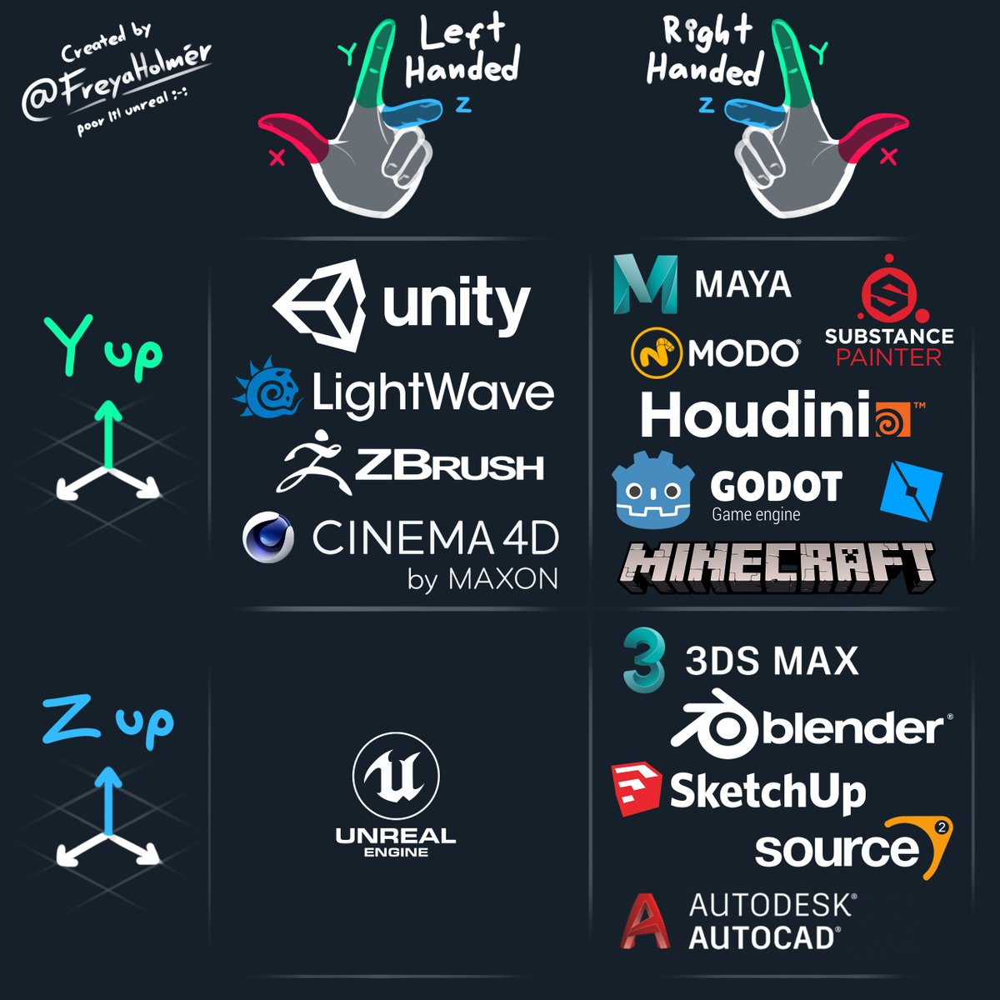

简介
《Game Physics and Development Notes》是一份围绕游戏物理与游戏开发实践的长期笔记，记录了从物理建模到工程实现，再到实际游戏应用过程中的关键思考与取舍。
本笔记面向具备一定技术背景、希望深入理解“游戏物理为什么这样实现“的开发者，强调原理、工程经验与实际问题之间的联系，而非公式堆砌或 API 使用说明。
个人主页：https://swang81.github.io/
在线阅读（GitHub Pages）：GamePhysicsNotes
作者：小杰克
概述：欢迎来到物理引擎的真实世界
您是否曾惊叹于游戏中物体碰撞的逼真效果？是否曾好奇虚拟世界中的建筑是如何在爆炸中轰然倒塌？或者，您是否梦想过亲手创造一个可信、生动、充满动态之美的交互世界？ 这一切的背后，都由一个强大而精密的“隐形之手”所驱动——物理引擎。
这份讲义是什么？
这是一份系统性、实践导向的现代物理引擎技术讲义。它不仅仅是一份知识点的罗列，更是一张引导您从零开始，逐步探索并最终有能力构建一个属于自己的3D刚体物理引擎的详尽蓝图。 我们的旅程将从最基础的数学物理原理出发，深入剖析一个现代物理引擎的四大核心支柱：
- 刚体动力学 (Rigidbody Dynamics)：如何用代码描述物体的运动与旋转。
- 碰撞检测 (Collision Detection)：如何让引擎拥有“眼睛”，感知物体的接触与分离。
- 约束求解 (Constraint Solver)：如何让引擎拥有“大脑”，处理碰撞、关节等所有物理交互规则。
- 性能架构 (Performance & Architecture)：如何让引擎拥有“强健的心脏”，在复杂场景下依然高效运行。 在此基础上，我们还会将视野拓展到游戏开发的实际应用、前沿的物理模拟技术（如柔体与流体），并为您装备一个强大的“软件工具箱”，让您在开发之路上如虎添翼。
我们的目标读者是谁？
- 游戏开发者：希望深入理解物理引擎黑盒之下工作原理的从业者。
- 计算机图形学爱好者：对实时物理模拟充满好奇，渴望将理论付诸实践的学生和研究者。
- 有追求的程序员：不满足于调用API，希望挑战复杂系统设计，构建硬核技术作品的工程师。
- 未来的引擎开发者：梦想着创造下一个Unity或Unreal，并愿意为此打下坚实基础的开拓者。
您将从这份讲义中学到什么？
- 构建而非调用：我们的核心理念是“动手实践”。通过每一章的引导，您将不仅仅是“知道”，更是“做到”。您将亲手实现向量库、模拟循环、碰撞算法、约束求解器等核心模块。
- 理论与实践的闭环：每一章都为您精心设计了从“核心问题”出发，经由“理论学习”、“代码实践”，最终达成“学习目标”的完整闭环，确保您学有所得，学以致用。
- 全局视野：您将理解物理引擎的各个组件是如何协同工作的，形成对复杂系统设计的宏观认识，这种能力将远超物理引擎本身，让您在任何大型软件项目开发中受益。
- 解决问题的能力：您将直面并解决诸如“子弹穿纸”、性能瓶颈、数值不稳定等真实世界中的工程难题，掌握分析和调试复杂系统的核心技巧。
准备好了吗？让我们一起推开这扇通往真实物理世界的大门，开始这段充满挑战与创造乐趣的旅程吧！
数学物理基础
核心问题
我们如何用精确的数学语言来描述一个三维物体的位置、姿态、运动和旋转？当物体受到力的作用时，它的运动状态会如何改变？这是构建一切物理模拟的起点，我们必须先学会这套通用的“物理世界语言”。
学习目标
学完本章后，您将能够：
- 运用向量、矩阵和四元数来表示和操作刚体的状态。
- 解释牛顿-欧拉方程，并用它来描述力、力矩与加速度之间的关系。
- 推导出处理瞬时碰撞的“冲量法”方程。
- 建立描述物体间连接（如关节）的“约束方程”的基本形式。
- 区分并实现多种数值积分方法（如欧拉法），用于随时间更新物体状态。
物理引擎中符号和单位
引言
本文为物理引擎系列的开篇，本文详细介绍物理引擎的几个约定：符号、单位、坐标系。
符号约定
标量（Scalar）通常用斜体字母表示，如质量或时间。
向量（Vector）则通常用粗体小写字母,例如, ,。或带箭头的字母，如,,表示。我们将优先采用粗体字母表示向量。
| 物理量 | 标量符号 | 向量符号 | MKS单位 | 描述 |
|---|---|---|---|---|
| 时间 (Time) | - | (秒) | 描述事件发生的时刻或持续时间。 | |
| 质量 (Mass) | - | (千克) | 物体惯性的量度。 | |
| 位置 (Position) | - | 或 | (米) | 物体在世界空间中的坐标。 |
| 位移 (Displacement) | - | (米) | 位置的变化量。 | |
| 速度 (Velocity) | (速率) | 位置随时间的变化率。 | ||
| 加速度 (Acceleration) | 速度随时间的变化率。 | |||
| 力 (Force) | - | (牛顿) | 导致物体加速度的原因。 | |
| 冲量 (Impulse) | - | 力在一段时间上的累积效应。 | ||
| 动量 (Momentum) | - | 物体质量和速度的乘积。 | ||
| 角度 (Angle) | - | (弧度) | 描述物体的朝向或旋转量。 | |
| 角速度 (Angular Velocity) | - | (omega) | 角度随时间的变化率。 | |
| 角加速度 (Angular Acceleration) | - | (alpha) | 角速度随时间的变化率。 | |
| 力矩 (Torque) | - | (tau) | 导致物体角加速度的原因。 | |
| 转动惯量 (Moment of Inertia) | (惯性张量) | 物体对旋转运动的阻力。 |
单位制
绝大多数现代物理引擎，如Box2D和NVIDIA PhysX，都强烈推荐或内部默认使用 MKS单位制，它是国际单位制（SI）的一部分。该系统以米（Meter）、千克（Kilogram）和秒（Second）作为基本单位。所有其他物理量的单位都由这三个基本单位导出，例如力的单位牛顿（N）定义为 kg·m/s²。
右手和左手坐标系
坐标系定义了空间中点的位置和方向，是进行任何几何计算的基础。在3D空间中，主要存在两种手性（Chirality）的坐标系：右手坐标系和左手坐标系。
-
右手坐标系 (Right-Handed System)：这是数学和物理学界的标准。你可以用右手来判断：伸出食指指向X轴正方向，中指指向Y轴正方向，那么拇指的指向就是Z轴的正方向。OpenGL、Bullet 和大部分物理引擎都使用右手坐标系。
-
左手坐标系 (Left-Handed System)：用左手可以进行类似判断。食指指向X轴正方向，中指指向Y轴正方向，拇指指向Z轴正方向。Direct3D 、 Unity和UE 引擎使用左手坐标系。
两种坐标系之间的转换可以通过反转其中一个轴的坐标来实现。例如，从右手系转换到左手系，可以令 。在混合使用不同坐标系约定的库（例如，使用左手系的渲染引擎和使用右手系的物理引擎）时，必须在数据交换的边界处进行正确的坐标转换。
向上的方向
另一个重要的约定是哪个轴代表“上”方向。最常见的两种约定是：
- Y-Up：Y轴的正方向为“上”。这在2D游戏和许多3D建模软件（如Blender）中很常见。
- Z-Up：Z轴的正方向为“上”。这在建筑和CAD领域以及某些3D引擎（如Unreal Engine）中更为流行。
各种软件，坐标系和向上的约定可以参考Freya总结的图。

数学工具
向量
向量是物理引擎中最基本的数据结构，用于表示具有大小和方向的物理量，如位置、速度和力。一个三维向量通常表示为 。
核心的向量运算包括：
点积在物理引擎中的常见应用包括：计算两个向量之间的夹角、判断两个向量是否正交（点积为零）、计算一个向量在某方向上的分量。
叉积很多地方会使用，例如和角动量等物理量时至关重要。
3x3旋转矩阵
3x3矩阵主要用于表示旋转和惯性张量。一个绕任意轴旋转角度的旋转矩阵，可以用罗德里格斯公式（Rodrigues’ Rotation Formula）表示：
其中是向量的反对称矩阵（Skew-Symmetric Matrix）：
旋转矩阵具有正交性，即，且行列式为1。
4x4变换矩阵
4x4矩阵用于表示一个完整的仿射变换，包含旋转和平移。其一般形式为：
其中是3x3旋转矩阵，是平移向量。这种矩阵在与图形API（如OpenGL或Direct3D）交互时尤其有用，因为它可以直接传递给着色器来变换顶点。
四元数(Quaternions)
虽然旋转矩阵可以表示旋转，但在实际应用中，直接使用矩阵进行旋转插值或连续旋转累加会遇到问题，例如万向锁（Gimbal Lock）。四元数，提供了一种更优雅、更高效的旋转表示方法。
一个四元数可以写为
或简写为 其中是标量部分，是向量部分。
一个绕单位轴旋转角度的旋转可以用单位四元数表示为：
使用四元数旋转一个向量的公式为：
其中被视为纯四元数，是的逆。对于单位四元数，其逆等于共轭。
惯性张量
对于点质量，惯性由标量质量描述。但对于具有体积和形状的刚体（Rigid Body），其对旋转运动的“阻力”不仅取决于质量，还取决于质量如何围绕旋转轴分布。这种分布特性由一个3x3的对称矩阵——惯性张量来描述。
惯性张量的一般形式为：
其中对角线元素是转动惯量（Moments of Inertia），非对角线元素是惯性积（Products of Inertia）。对于连续质量分布，这些元素的定义为：
惯性张量建立了角动量（）和角速度（）之间的线性关系：
它也出现在旋转动力学的牛顿第二定律的旋转版本中（欧拉方程）：
在物体的主轴（Principal Axes）坐标系下，惯性张量可以简化为一个对角矩阵：
其中 , , 是主转动惯量。计算和正确使用惯性张量是实现逼真刚体旋转动力学的关键。物理引擎通常会提供自动计算常见几何形状（如球体、长方体、圆柱体）惯性张量的功能。
游戏物理公式总结
在讲解物理引擎工作原理前，我们快速复习一下相关的物理知识。在游戏开发中，物理模拟涉及很多方面，比如物体的碰撞，特效的粒子，液体，烟雾等。为了描述这些效果，我们通常基于不同的力学体系，下面简单介绍一下。
质点运动学（Particle Kinematics）
描述的对象用质点描述，质点无大小、无形状、不可旋转,仅描述运动轨迹，不考虑力的作用。在游戏中应用：特效粒子系统、动画轨迹等。物理量包括：
位置：
速度:
加速度：
质点动力学（Particle Dynamics）
描述对象是质点，不考虑旋转和形状影响，与质点运动学区别是考虑外力作用。通过牛顿第二定律更新状态，涉及的物理量包括：位置，速度，外力，质量，加速度。游戏中，考虑重力、风力、弹簧的质点效果。
刚体动力学（Rigid Body Dynamics）
对象具有形状，但是不可变形。考虑旋转影响。通过线速度和角度描述运动状态。外力和力矩可以改变运动状态。可以描述碰撞和约束情况。在游戏中多数可交互的物体，例如角色、车辆、道具。
随时间可以变换的物理状态量：位置，姿态（四元数），线速度，角速度。
不随时间变化的物理量：质量，碰撞形状，局域坐标下的惯性张量。
由上面变量推导出其他变量：
线动量
角动量
线加速度和角加速度
主要涉及的方程：
平移运动：
旋转运动：
冲量改变速度和角速度：
弹性体 / 柔体动力学（Deformable Body Dynamics）
对象通过网格来表示形变，通过内部应力和应变关系来改变运动状态。可模拟游戏中布料，绳子，果冻类软体角色和道具。主要涉及的物理量： 网格点位置和速度
内部应力，弹性模量、泊松比。
使用的物理方程：
流体力学（Fluid Dynamics）
研究对象为连续介质，通过速度场、压力场和密度场来描述，通过下面微分方程进行求解。流体可以通过粒子和网格两种方法进行求解。在游戏中，液体和河流的模拟经常使用。 连续性方程：
Navier-Stokes 方程：
多体系统动力学（Multibody Dynamics）
多个刚体，通过关节和约束连接，组成一个系统。在系统的运动状态变化时，通过刚体动力学和约束求解器。主要涉及的物理量包含：刚体的状态量，约束位置和约束力，以及约束推导出的冲量。游戏中载具，连接的关节等。主要原理方程是： 其中为约束雅可比矩阵。
现代游戏引擎
现代的游戏物理引擎，主要是建立在多体系统动力学基础上，通过约束求解器求解系统运动状态变化的。
碰撞冲量和相对速度定义
在构建物理引擎时，碰撞响应（Collision Resolution）是最核心的模块之一。而碰撞响应的核心，就是求解冲量标量 。本文将从第一性原理出发，一步步推导 的公式，并深入探讨容易被忽视的相对速度定义及其对仿真稳定性的影响。
1. 问题的定义
假设有两个刚体 和 在世界空间发生碰撞。
- 碰撞点：
- 碰撞法线：（定义为从 指向 的单位向量）
- 质心到碰撞点的向量：，
- 线速度与角速度： 和
我们的目标是找到一个冲量标量 ，当它作用于碰撞点时，能够改变两个物体的速度，使得它们在碰撞后的相对速度符合牛顿碰撞定律。
2. 关键：相对速度的定义
相对速度的定义决定了后续所有公式的符号。为了与工业级引擎（如 Bullet, Box2D）保持一致，我们定义碰撞点处的相对速度 为：
其中，碰撞点在物体上的速度公式为：
为什么这样定义？
当 时，意味着两个物体正在相互靠近（接近速度为负）；当 时，意味着物体正在相互远离。
3. 物理约束：牛顿碰撞定律
碰撞后的相对速度 与碰撞前的相对速度 满足以下关系：
其中 是恢复系数（Restitution）。这是我们求解 的唯一方程。
4. 冲量对速度的影响
根据冲量定理，施加冲量 后，物体的速度变化为：
对于物体 A（受力方向为 ）：
对于物体 B（受力方向为 ）：
5. 核心推导步骤
我们将碰撞后的相对速度展开：
代入速度变化公式 ：
提取公因子 ：
现在，两边同时点乘法线 ，并利用牛顿碰撞定律 ：
6. 最终公式
整理上式，求得 的标准公式：
对比关于《Game Physics in One Weekend》
在《Game Physics in One Weekend》的代码实现中，你会发现分子没有负号。这是因为该书将法线定义为“从 A 指向 B”，且在应用冲量时手动反转了符号。 建议：在实际工程中，务必采用上述标准推导。标准推导保证了只要物体在靠近（点积为负），算出的 就一定是正数，这符合物理直觉，也方便后续处理摩擦力不等式约束。
积分方法
在游戏物理引擎中，积分方法用于将连续的力学方程离散化，是物体每个时间步内更新位置和速度。根据模拟的稳定性、精度和性能，选择不同的积分方法。
显式欧拉
显式欧拉（Explicit Euler）是最基础的积分方法，其核心思想是用当前的速度和加速度直接预测下一帧的位置和速度。公式如下：
其中，是速度，是位置，是加速度，是时间步长。
这种方法计算简单，开销低。当时间步长过大或者系统刚体较强时，容易出现不稳定，导致能量发散或者物体穿透。
隐式欧拉
隐式欧拉（Implicit / Backward Euler）与显式欧拉不同，它使用下一帧未知状态的加速度进行积分，从而提高数值稳定性。公式如下：
稳定性高，即使大时间步也不会发散。可以处理刚性系统，例如柔体、流体和复杂约束。计算量相对较大，需要求解线性方程组。在游戏物理引擎中，主要用柔体和流体模拟。刚体不用隐式欧拉，通常用西面半隐式欧拉方法，兼顾稳定性和性能。
半隐式欧拉
半隐式欧拉（Semi-implicit / Symplectic Euler）结合了显式和隐式的特点，是游戏物理中最常用的方法之一。
与隐式欧拉区别是，位置更新使用的是更新后的速度，而不是当前速度。相比显式欧拉更稳定，能量不易发散。计算量低，实时性能好，广泛用在刚体模拟、角色控制器、布料约束等。几乎所有主流游戏引擎的刚体子系统（包括 Bullet、Unity、Unreal）都使用半隐式欧拉作为默认的积分方法。
Verlet积分
Verlet 积分是基于位置的积分方法，不直接使用速度，而是利用当前和上一帧的位置及加速度更新下一帧位置。核心公式：
速度通过差分近似得到：
在物理引擎中，常用于粒子系统、布料模拟和柔体系统，适合PBD使用。
Runge-Kutta积分
Runge-Kutta 积分是一类高阶积分方法，通过多次估计加速度来提高数值精度。最常用的是二阶（RK2）和四阶（RK4）方法。 例如 RK4 方法：
其中是对不同时间点加速度的加权估计。精度高，震荡小。适合刚体、粒子系统、流体的精确模拟。计算量大，实时性能低。在物理引擎中，游戏中实时刚体很少使用，但在布料或粒子模拟的高精度子系统中可能用到。
拉格朗日乘子法
在物理模拟、分析力学、优化问题中，我们经常会遇到一种情形：系统的运动或解，不仅要满足动力学规律，还必须同时满足某些约束条件。 比如：
- 质点必须在曲面上运动
- 刚体之间不能互相穿透
- 铰链关节只能允许某些方向的相对运动
这些问题的核心并不在于“力怎么写”，而在于：如何在不破坏原有方程结构的前提下，把约束条件系统性地加入进来？拉格朗日乘子法，正是为了解决这个问题而诞生的。
带约束的极值
先从最简单、也是最经典的形式出发。假设我们要极小化一个函数:
变量不能随便取，而必须满足一个约束条件：
这是一个带等式约束的极值问题。如果没有约束，我们只需要
但现在不行了，因为允许的变化方向被“限制”在约束曲面上。
乘子的含义
在极值点处，函数在约束曲面上的切向变化为零。约束定义了一张曲面，其中曲面的法向量是，所有合法的变化方向都与正交。
如果在该点上沿所有合法方向都不再变化，那么只能指向法向方向。于是必然存在一个标量,使得：
这就是拉格朗日乘子条件。这里是拉格朗乘子，本质是一个“比例系数”，用来描述为了满足约束，目标函数付出的代价。
虚位移和虚功
虚位移
在牛顿力学中，我们习惯于观察物体随时间发生的实位移（Real Displacement）。然而，在处理受限系统时，实位移往往受到约束和时间的双重影响。为了隔离约束的影响，我们引入“虚位移”的概念。
虚位移（记作 ）是指在某一特定时刻，系统在满足当前约束条件下，可能发生的任意无穷小位置改变。与实位移最大区别：实位移 发生在一段时间 内；虚位移 是瞬时的，即在 的假想状态下发生。实位移是物体实际走过的路径；虚位移是逻辑上可能发生的路径，只要它不违反约束。
例，想象一个被限制在水平桌面上的质点。实位移可能包含由于桌面移动（如果桌面在升降）带来的垂直分量。虚位移则只能是在该时刻，平行于桌面的任意方向。
理想约束
有了虚位移的概念，我们就可以定义虚功（Virtual Work）：力在虚位移上所做的功。在大多数游戏物理引擎（如 Box2D, PhysX）中，我们假设约束是理想约束（Ideal Constraints）。理想约束的一个关键特性是：约束力（Constraint Force）所做的虚功之和为零。数学表达为：
其中 是作用在第 个质点上的约束力。
虚功原理
对于一个处于平衡状态的系统，所有作用于系统的主动力（Active Forces，如重力、推力）在任何符合约束的虚位移中所做的虚功总和为零：
在动力学问题中，通过达朗贝尔原理（D’Alembert’s Principle），我们可以将惯性力 视为一种“力”，从而将动力学问题转化为静力学平衡问题：
物理模拟循环
核心问题
游戏世界的时间在不断流逝，我们如何确保物理计算能够稳定、有序、高效地随着时间推进？如何协调可能剧烈波动的游戏渲染帧率和必须保持恒定的物理计算频率，以避免“时快时慢”或“子弹穿纸”等诡异现象？
学习目标
学完本章后，您将能够：
- 解释为什么物理模拟需要使用“固定时间步”（Fixed Timestep）。
- 实现一个管理游戏时间与物理时间的模拟循环框架。
- 描述一个完整的物理模拟单步（Single Step）所包含的核心阶段。
- 分析现有物理引擎（如Bullet）的 stepSimulation 函数的宏观流程。
游戏引擎的主循环设计
游戏主循环
在使用物理和渲染引擎的游戏中，虚拟的世界是不断变换的。通过一个模拟循环（simulation loop）来驱动这个世界。一个简单的循环是下面这个样子：
while (gameIsRunning)
{
float deltaTime = GetDeltaTime(); // 获取自上一帧以来的时间
ProcessInput(); // 获得输入
UpdateGameLogic(); // 更新游戏逻辑
physicsWorld->StepSimulation(deltaTime); // 驱动物理世界前进
RenderScene(); // 渲染
}
到目前为止，我们看到主循环非常自然：输入 -> 逻辑 -> 物理 -> 渲染。
Step Simulation
为了保证物理模拟的稳定性，要求物理模拟的时间步一定要稳定。但是，游戏的主循环，无法保证每次deltaTime稳定。需要通过StepSimulation把不稳定的真实的时间，转换成若干个稳定的物理小步。这样一次StepSimulation里面执行了很多次物理。
一个StepSimulation伪代码：
StepSimulation(deltaTime)
{
accumulatedTime += deltaTime;
int subSteps = floor(accumulatedTime / fixedDt);
// 限制物理模拟的最大步数。以防爆炸。
subSteps = min(subSteps, maxSubSteps);
for (int i = 0; i < subSteps; ++i)
{
// 物理世界单步模拟
internalSingleStepSimulation(fixedDt);
}
accumulatedTime -= subSteps * fixedDt;
}
这里fixedDt是每步物理模拟的固定时间。accumulatedTime是物理模拟积累的时间,从上一次物理更新，到目前没有被物理模拟消耗的累计时间。
物理世界的单帧
上面internalSingleStepSimulation是物理世界的单帧函数。现代游戏引擎（box2D,bullet3,PhysX）在实现细节上有所差异，但是几乎所有的刚体物理引擎都有相似的流程。这个流程可以概括成以下几步：
-
施加外力：游戏中，对物体和角色施加的力，如推力、重力和阻尼等。
-
碰撞检测：一般分成两个阶段。
- 宽相（Broad Phase）:使用快速算法（AABB树，排序和扫描等）筛选可能发生的碰撞对，排除大量明显不相交的物体。
- 窄相（Narrow Phase）: 对宽相筛选出的每一对物体，使用精确的几何算法（GJK/EPA,SAT）计算他们是否真的碰撞，并找出碰撞点、碰撞法线和穿透深度等详细信息。
-
构建孤岛：根据碰撞产生的接触关系和关节约束，将相互作用的物理构建成一个个独立的“孤岛”。孤岛之间相互不影响，可以进行并行优化。
-
约束求解：对于接触和关节约束，计算出冲量（Impulse）来处理物体穿透、摩擦和关节连接。求解的过程是迭代的，重复多次为了获得稳定解。
-
积分：根据求解器得到的冲量来更新速度，再更新所有活动物体的位置和朝向。
-
状态同步：将物体世界中物体的新状态（位置和朝向）同步到游戏世界的图形对象上，然后渲染。
Bullet引擎的模拟循环
这里以bullet2.89版本为基础进行讲解。
btDiscreteDynamicsWorld类
btDiscreteDynamicsWorld负责整个物理世界的模拟流程。这个类包含物理世界的刚体数组、模拟岛和约束数组等。
// 在btDiscreteDynamicsWorld.h中
btDiscreteDynamicsWorld : public btDynamicsWorld
{
protected:
// ...
btConstraintSolver* m_constraintSolver; // 约束求解器
btSimulationIslandManager* m_islandManager; // 模拟岛管理器
btAlignedObjectArray<btTypedConstraint*> m_constraints; // 约束数组
btAlignedObjectArray<btRigidBody*> m_nonStaticRigidBodies; //刚体数组
btVector3 m_gravity;
// ...
}
StepSimulation函数
bullet的StepSimulation函数是
// timeStep: 本帧真实流逝时间（来自游戏主循环）。
// maxSubSteps: 单帧内允许执行的“最大物理子步数”.
// fixedTimeStep: 单次物理 step 的固定 dt
int btDiscreteDynamicsWorld::stepSimulation(btScalar timeStep, int maxSubSteps, btScalar fixedTimeStep)
在这个函数中，存在两种时间推进模式，两种的模式的启用条件是：maxSubSteps的数值。
- 固定时间步进（Fixed Timestep）。启用条件：
maxSubSteps >0，物理使用固定步长（如1/60s）。数值稳定，适合游戏和实时仿真。 - 可变时间步长(Variable Timestep)。启用条件
maxSubSteps ==0，使用可变的时间步模式。每帧只跑一次物理。不推荐使用。
int btDiscreteDynamicsWorld::stepSimulation(btScalar timeStep, int maxSubSteps, btScalar fixedTimeStep)
{
startProfiling(timeStep);
int numSimulationSubSteps = 0; // 本帧应执行的物理 step 次数
if (maxSubSteps)
{
//固定时间步
//fixed timestep with interpolation
m_fixedTimeStep = fixedTimeStep;
//m_localTime:尚未被物理消耗的时间
m_localTime += timeStep;
if (m_localTime >= fixedTimeStep)
{
numSimulationSubSteps = int(m_localTime / fixedTimeStep);
m_localTime -= numSimulationSubSteps * fixedTimeStep;
}
}
else
{
//可变时间步模式
//variable timestep
fixedTimeStep = timeStep;
m_localTime = m_latencyMotionStateInterpolation ? 0 : timeStep;
m_fixedTimeStep = 0;
if (btFuzzyZero(timeStep))
{
numSimulationSubSteps = 0;
maxSubSteps = 0;
}
else
{
numSimulationSubSteps = 1;
maxSubSteps = 1;
}
}
//process some debugging flags
if (getDebugDrawer())
{
btIDebugDraw* debugDrawer = getDebugDrawer();
gDisableDeactivation = (debugDrawer->getDebugMode() & btIDebugDraw::DBG_NoDeactivation) != 0;
}
if (numSimulationSubSteps)
{
//clamp the number of substeps, to prevent simulation grinding spiralling down to a halt
int clampedSimulationSteps = (numSimulationSubSteps > maxSubSteps) ? maxSubSteps : numSimulationSubSteps;
//保存上一帧状态
saveKinematicState(fixedTimeStep * clampedSimulationSteps);
//应用重力
applyGravity();
for (int i = 0; i < clampedSimulationSteps; i++)
{
//物理单步模拟
internalSingleStepSimulation(fixedTimeStep);
synchronizeMotionStates();
}
}
else
{
synchronizeMotionStates();
}
// 清理力
clearForces();
#ifndef BT_NO_PROFILE
CProfileManager::Increment_Frame_Counter();
#endif //BT_NO_PROFILE
return numSimulationSubSteps;
}
internalSingleStepSimulation
void btDiscreteDynamicsWorld::internalSingleStepSimulation(btScalar timeStep)
{
BT_PROFILE("internalSingleStepSimulation");
if (0 != m_internalPreTickCallback)
{
(*m_internalPreTickCallback)(this, timeStep);
}
///apply gravity, predict motion
// 1. 预测物无约束的运动
predictUnconstraintMotion(timeStep);
btDispatcherInfo& dispatchInfo = getDispatchInfo();
dispatchInfo.m_timeStep = timeStep;
dispatchInfo.m_stepCount = 0;
dispatchInfo.m_debugDraw = getDebugDrawer();
createPredictiveContacts(timeStep);
///perform collision detection
// 2. 碰撞检测
performDiscreteCollisionDetection();
// 3. 计算模拟岛
calculateSimulationIslands();
getSolverInfo().m_timeStep = timeStep;
///solve contact and other joint constraints
// 4. 约束求解
solveConstraints(getSolverInfo());
///CallbackTriggers();
///integrate transforms
// 5. 积分变换
integrateTransforms(timeStep);
///update vehicle simulation
// 6. 更新自定义行为
updateActions(timeStep);
// 7. 更新激活状态
updateActivationState(timeStep);
// 8. 系统回调
if (0 != m_internalTickCallback)
{
(*m_internalTickCallback)(this, timeStep);
}
}
刚体模拟
核心问题
在代码的世界里，一个“物体”究竟是什么？我们需要用哪些变量来完整描述它的物理状态？当我们知道了作用在它身上的所有力（来自重力、玩家的推力、碰撞的反作用力等），我们具体该如何计算出它在下一瞬间的新位置和新姿态？
学习目标
学完本章后，您将能够：
- 设计并实现一个包含位置、姿态、速度、质量等属性的 RigidBody 数据结构。
- 解释质心、惯性张量等属性在动力学计算中的作用。
- 实现将力和力矩施加到刚体上的功能。
- 应用第一章学到的积分方法，编写出根据当前状态和外力来更新刚体下一时刻状态的函数。
刚体状态
在物理引擎中，一个刚体是模拟的基本单元。为了完整地描述一个刚体在任何时刻的物理状态，并为其运动演化提供必要的数据，我们需要一个精心设计的数据结构。这个数据结构不仅要包含物体的当前位置和朝向，还要存储其速度、质量属性、受力情况以及与其他物体交互所需的参数。
静态属性
这些属性在物体被创建后通常不会改变。它们定义了物体的内在物理特性。
- 质量 (Mass)
m: 一个标量，描述物体抵抗线性加速度的程度。 - 逆质量 (Inverse Mass)
1/m: 在计算中，我们更常用到质量的倒数。这样做可以将除法运算转换成乘法运算，效率更高。对于质量无穷大的静态物体（如地面），其逆质量为0。这是一种优雅的处理方式，使得求解器无需为静态物体编写特殊代码——施加在它们身上的冲量乘以0后，速度变化自然也为0。 - 惯性张量 (Inertia Tensor)
I_body: 一个 3x3 矩阵，在物体的局部坐标系（body space）中定义，描述物体抵抗角加速度的程度。 - 逆惯性张量 (Inverse Inertia Tensor)
I_body⁻¹: 同样，我们预先计算并存储惯性张量的逆，以提高计算效率。对于不希望旋转的物体，可以将其逆惯性张量设为零矩阵。 - 碰撞形状 (Collision Shape): 指向物体碰撞几何体（如球体、盒子、凸包）的指针或引用。这是碰撞检测系统需要的核心数据。
- 物理材质 (Material): 包含摩擦系数（friction）和恢复系数（restitution, a.k.a. bounciness）等参数。
动态状态 (Dynamic State)
这些是描述物体当前运动状态的变量，它们在每个模拟时间步都会被积分器更新。
- 位置 (Position)
x: 一个 3D 向量，描述物体质心在世界空间中的位置。 - 朝向 (Orientation)
q: 一个单位四元数，描述物体从其局部坐标系到世界坐标系的旋转。 - 线速度 (Linear Velocity) : 一个 3D 向量，描述质心的速度。
- 角速度 (Angular Velocity) : 一个 3D 向量，描述物体围绕其质心的角速度。
派生数据 (Derived Data)
这些数据可以由上述核心状态计算得出，但为了性能考虑，可能会在每帧开始时计算并缓存起来。
-
世界空间逆惯性张量 (World Inverse Inertia Tensor)
I_world⁻¹: 其中 是由朝向四元数 导出的旋转矩阵。这个矩阵在求解器计算角加速度时频繁使用。 -
变换矩阵 (Transform Matrix): 一个 4x4 矩阵，结合了位置和朝向，用于将顶点从局部空间变换到世界空间，主要供渲染系统使用。
临时变量 (Temporary Variables)
这些变量用于在单个时间步内累积结果。
- 总受力 (Total Force)
F: 在施加力阶段累积的所有外力（如重力、玩家施加的力）的合力。 - 总力矩 (Total Torque)
τ: 累积的所有外力矩的合力。
在每个积分步骤结束时，这些累加器都需要被清零。
数据结构示例
一个典型的刚体数据结构可能如下所示：
struct RigidBody {
// --- 静态属性 ---
float mass; // 质量
float inverseMass; // 逆质量
Matrix3x3 inertiaTensorBody; // 局部坐标系下的惯性张量
Matrix3x3 inverseInertiaTensorBody; // 局部坐标系下的逆惯性张量
CollisionShape* shape; // 指向碰撞形状
Material material; // 物理材质 (摩擦, 恢复系数)
// --- 动态状态 ---
Vector3 position; // 位置
Quaternion orientation; // 朝向
Vector3 linearVelocity; // 线速度
Vector3 angularVelocity; // 角速度
// --- 派生数据 (可缓存) ---
Matrix3x3 inverseInertiaTensorWorld; // 世界坐标系下的逆惯性张量
Matrix4x4 transformMatrix; // 变换矩阵
// --- 临时变量 ---
Vector3 force; // 总受力
Vector3 torque; // 总力矩
// --- 标志位 ---
bool isStatic; // 是否为静态物体
bool isAwake; // 是否处于激活状态
};
在面向数据的设计中，我们不会创建这样一个大的结构体数组。相反，我们会为每个成员创建一个独立的数组：
struct RigidBodySystem {
std::vector<float> masses;
std::vector<float> inverseMasses;
// ...
std::vector<Vector3> positions;
std::vector<Quaternion> orientations;
// ...
};
虽然在概念上我们可以将所有数据封装在一个 RigidBody 类中，但在追求极致性能的现代引擎中，采用面向数据的设计，将状态分解为多个并行的数组，是最大化缓存利用率和释放SIMD潜力的关键。
基于冲量的碰撞响应
当碰撞检测系统报告两个物体发生接触时，我们需要一种机制来阻止它们互相穿透，并根据它们的物理材质（如弹性）来模拟碰撞后的反应。在实时物理引擎中，最流行、最高效的方法就是基于冲量的碰撞响应 (Impulse-Based Collision Response)。与基于力的模型（需要极小的时间步来模拟接触力）不同，基于冲量的方法将碰撞视为一个瞬时事件，通过施加一个冲量 (Impulse) 来瞬间改变物体的速度，从而实现碰撞响应。
基于冲量的碰撞响应是现代物理引擎的基石。它通过一个在物理上坚实、在数学上优雅的公式，将复杂的刚体碰撞简化为一个求解瞬时冲量 j 的问题。这个冲量的大小，由碰撞前的相对法向速度、物体的恢复系数以及一个被称为“有效质量”的组合惯性量共同决定。虽然我们在这里推导的是单个、无摩擦的碰撞，但这个核心思想可以被扩展，形成一个能够处理多点接触、摩擦和关节的统一框架——约束求解器 (Constraint Solver)。
碰撞检测
核心问题
在一个成千上万个物体构成的复杂虚拟世界里，我们如何快速找出哪些物体碰在了一起？对于那些碰在一起的物体，我们又如何精确地计算出它们接触的深度、方向和具体位置？
学习目标
学完本章后，您将能够：
- 区分Broadphase 和 Narrowphase 的功能和目的。
- 实现一个基于AABB树（如DBVT）的Broadphase系统，用于快速筛选碰撞对。
- 解释GJK/EPA 算法的核心思想，并用它来检测凸体间的精确碰撞。
- 生成包含接触点、法线、穿透深度的接触流形（Contact Manifold）。
- 理解连续碰撞检测（CCD）对于解决“子弹穿纸”问题的重要性。
宽相和窄相检测
想象一下：在一个包含N个物体的场景中，潜在的碰撞对有 N*(N-1)/2 个，即 O(N²) 的复杂度。对于一个拥有数千个物体的现代游戏场景，每秒进行60次这样的暴力检查是完全不可行的。
为了将 O(N²) 的复杂度降低到可控范围，碰撞检测系统通常被设计为一个漏斗状的过滤管线，分为两个主要阶段：
-
宽相（Broad Phase）：此阶段的目标是使用非常快速但可能不精确的方法，大规模地剔除那些“绝对不可能”发生碰撞的物体对。它就像一个粗略的筛子，允许一些“误报”（False Positives，即报告可能碰撞但实际没有），但绝不允许“漏报”（False Negatives）。其输出是一个“潜在碰撞对”列表。
-
窄相（Narrow Phase）：此阶段接收宽相的输出，并对每一个潜在碰撞对进行精确的、基于其真实几何形状的相交测试。这是一个计算成本较高的过程，但只针对少数物体对执行。它的任务是最终确认碰撞是否发生，如果发生，则计算出碰撞的详细信息，即接触流形（Contact Manifold），通常包括接触点（Contact Point）、接触法线（Contact Normal）和穿透深度（Penetration Depth）。这些信息将传递给碰撞响应系统。
宽相检测
原理说明
宽相碰撞检测目标是生成一个可能发生碰撞的“碰撞对列表”。所有宽相算法都基于一个简单的思想：用一个简单的、计算开销小的几何体（称为包围体）来包裹复杂的物体。如果两个物体的包围体没有重叠，那么这两个物体本身也一定没有重叠。
最常用的包围体是轴对齐包围盒 (Axis-Aligned Bounding Box, AABB)。一个 AABB 可以由两个点（最小值点 min 和最大值点 max）来定义。检查两个 AABB 是否重叠非常快速，只需要在三个轴上分别检查它们的区间是否重叠即可。
常见宽相算法
常见的宽相算法有下面几种：
-
直接遍历 直接两两检查所有物体的包围体是否重叠。复杂度为。当物体数量增多时，性能很差。所以，仅适合小规模场景或者教学示例。
-
网格法 将整个世界空间划分为一系列均匀大小的单元格。每个单元格存储其中包含的物体列表。对于一个物体，只需检查它所在的单元格及其相邻单元格中的物体。如果物体分布不均匀，大量单元格是空的，浪费内存。一个物体可能跨越多个单元格，需要额外处理。单元格的大小对性能影响很大，过大和过小都不行。在工程上，会用Dynamic Spatial Hashing来实现存储和管理。
-
四叉树和八叉树 递归地将空间划分为更小的子空间。四叉树用于 2D 空间，八叉树用于3D空间。当一个子空间中的物体数量超过阈值时，该子空间会被进一步细分,可以自定义一个叶子节点上最多几个物体。重叠测试流程：通过遍历树结构，检查那些与查询物体包围盒重叠的节点的物体。通过这种方法，可以很好的适应物体分布不均匀的场景，进行快速查询。如果一个物体跨越多个节点时，需要特殊处理，比如放在父节点或者子节点（需要去重）。
-
Sweep and Prune (SAP / Sort and Sweep)
SAP 全称 Sweep and Prune（扫描与剪枝），也称 Sort and Sweep (SAS)。SAS 是算法思想，SAP 是其高效实现与优化版本。SAP 的核心思想是：
- 每个物体用 AABB 包围，并在每个轴上有最小值（start）和最大值（end）；
- 选择一个主轴（通常是 X 轴），将物体在该轴的端点排序；
- 按排序顺序扫描端点，维护活动列表（Active List），生成在主轴上重叠的候选碰撞对；
- 对候选对在其他轴（Y、Z）上做重叠检查（剪枝），只有在所有轴都重叠的情况下才将其保留为潜在碰撞对；
- 候选对送到窄相检测阶段进行精确碰撞检测。
核心原则：排序轴做大规模剪枝，其他轴做精细剪枝。这种方式可以大幅减少不必要的碰撞测试，同时保持增量更新高效。
- Dynamic Bounding Volume Tree 动态包围体树，简称DBVT。DBVT是一种二叉树结构，树的每个节点都存储一个AABB。树的叶子节点存储实际物体的AABB。父节点的AABB是两个叶子节点的包围盒。如果查询的AABB与某个节点AABB不重叠，就可以快速剪枝，跳过整个子树。树支持动态的更新，允许物体的移动、插入和删除。DBVT可以很好处理动态场景，又能处理稀疏和密集的物体分布。
主流物理引擎的宽相实践
Box2D: 使用的DBVT算法.
Bullet3: 提供了多种宽相检测算法。
| Broadphase class | 算法 | 时间复杂度 | 备注 |
|---|---|---|---|
btDbvtBroadphase | DBVT | 默认 | |
btAxisSweep3 | SAP(16-bit) | ||
bt32BitAxisSweep3 | SAP(32-bit) | ||
btSimpleBroadphase | 暴力AABB | 测试用 |
- Dynamic Spatial Hashing
窄相碰撞检测
使用宽相检测可以输出哪两个物体的AABB包围盒重叠后，就可以使用窄相检测进行进一步相交测试。如果发生碰撞，窄相还需要计算出碰撞的详细信息，即接触信息 (Contact Information)，包括：接触点 (Contact Points)、接触法线 (Contact Normal)和穿透深度 (Penetration Depth)。这些信息是碰撞响应和约束求解的输入。
在窄相碰撞检测时，根据两个物体形状，选择不同的检测算法。根据及算法可以分成三大类：
基于解析公式的“专用几何体检测”算法
利用几何体的数学定义，直接通过公式进行计算：判断是否相交、求最近点和穿透深度。比如：Sphere-Sphere, sphere-plane, Capsule-Capsule,Ray-Primitive等。
SAT（分离轴定理）
SAT算法，用于检测两个凸多面体是否相交。原理是：如果能找到一条轴，使得两个凸多面体在该轴上的投影（区间）不重叠，那么这两个物体就没有发生碰撞。这条轴被称为分离轴。反之，如果找不到任何这样的分离轴，那么这两个物体就必然发生了碰撞。
GJK+EPA
GJK是另一种用于凸体碰撞检测的流行算法，它通常比SAT更快，尤其是在处理曲面形状（如球体、胶囊体）时。如果GJK确认了碰撞，接下来通过扩展多边形算法（Expanding Polytope Algorithm, EPA）的后续步骤来精确计算穿透法线和深度。
GJK的原理是：将两个凸物体的碰撞问题转化为“是否包含原点”问题。具体实现方法是通过逐步构建一个称为**单纯形（Simplex）**的小多边形（在3D中最多是一个四面体），来逼近并判断闵可夫斯基差形状是否包含原点。
EPA的原理是：从 GJK 得到的内点单纯形出发，沿凸集边界膨胀，找到原点到凸包表面最短距离，从而确定碰撞响应信息。
接触生成与流形
当窄相碰撞检测算法（如SAT或GJK/EPA）报告两个物体发生碰撞，并给出了穿透深度和法线后，我们还需要一个至关重要的信息才能进行真实的物理响应：接触点 (Contact Points)。一个单一的穿透向量不足以描述复杂的接触情况，例如一个箱子平放在地面上。在这种情况下，接触实际上发生在整个底面上，而不仅仅是一个点。为了稳定地模拟这种平面、线或多点接触，现代物理引擎引入了接触流形 (Contact Manifold) 的概念。
接触流形是一个数据结构，它封装了两个物体之间一次完整接触的所有几何信息。它不仅包含了一到多个接触点，还负责在连续的几个时间步内追踪和更新这些接触点，以实现稳定、平滑的碰撞响应和摩擦效果。
为什么单点接触不够？
想象一个长方形箱子落在平坦的地面上。在理想情况下，它们应该在箱子底部的四个角都产生接触。如果我们只使用由EPA等算法计算出的单一最深穿透点作为接触点，会发生什么？
- 不稳定和抖动: 引擎会在该点施加一个分离冲量。由于冲量作用点可能不在质心正下方，这会产生一个力矩，导致箱子轻微旋转。在下一帧，箱子的另一个角可能会成为最深穿透点，引擎又在该点施加冲量，导致箱子向反方向旋转。如此往复，箱子就会在地面上不停地抖动或摇摆，永远无法稳定地静止下来。
- 不真实的摩擦: 摩擦力的计算与法向力（正压力）密切相关。如果只有一个接触点，我们就无法模拟出分布在整个接触面上的、能抵抗旋转的摩擦力矩。
接触流形 (Contact Manifold)
为了解决这些问题，我们引入接触流形。对于每一对发生碰撞的物体，我们都创建一个接触流形来描述它们之间的交互。这个数据结构通常包含：
- 接触点数组: 通常是一个包含1到4个接触点的小数组。4个点足以稳定地表示任何两个凸体之间的平面接触。
- 接触法线 (Normal): 描述接触面的方向。
- 参与的物体: 指向两个碰撞物体的指针。
- 摩擦与恢复系数: 用于该次接触的综合物理参数。
每个接触点自身也是一个结构体，包含：
- 世界空间位置 (Position): 接触点在世界坐标系中的位置。
- 局部空间位置 (Local Position): 接触点在两个物体各自局部坐标系中的位置。
- 穿透深度 (Penetration Depth): 该点的穿透深度。
- 法向冲量累积 (Normal Impulse): 在求解器中累积的用于分离的冲量。
- 切向冲量累积 (Tangent Impulse): 用于摩擦的冲量。
- 生命周期 (Lifetime): 用于追踪该接触点持续了多少个时间步。
流形的生命周期管理
接触流形的强大之处在于它的时间相干性。在一个时间步结束时，我们不清空所有接触信息，而是尝试将它们“缓存”到下一帧。
- 更新: 在新的一帧，对于上一帧就存在的物体对，我们不创建新的流形，而是更新旧的流形。我们根据物体的运动变换旧的接触点位置，并检查它们是否仍然有效（例如，是否还在物体表面附近）。
- 添加: 计算新的接触点，并与流形中已有的点进行比较。如果是一个真正的新接触点，就将其加入流形。如果流形已满（例如，已有4个点），则需要根据某种策略（如保留最深的点，或保留能形成最大接触面积的点）来替换掉一个旧点。
- 移除: 如果一个旧的接触点在新的一帧中已经分离，或者距离新的接触位置太远，就将其从流形中移除。
通过这种方式，一个稳定的接触（如箱子在地面上）其接触流形中的点会保持相对稳定，这使得求解器可以累积冲量，从而让物体平稳地静止下来。这就是所谓的**“暖启动” (Warm Starting)**，它是实现高性能、高稳定性物理引擎的关键技术。
接触点的生成算法
如何从两个重叠的凸体中计算出合理的多个接触点呢？
1. 特殊形状对
对于球体、胶囊体等，接触点可以直接解析计算，通常只有一个或两个点。
2. 多边形-多边形接触：裁剪 (Clipping)
对于两个凸多面体（例如，两个方块）的接触，最经典和鲁棒的方法是Sutherland-Hodgman 裁剪算法。
思想： 当一个物体（称为“入射体”，Incident Body）的一个面与另一个物体（称为“参考体”，Reference Body）的一个面发生碰撞时，真实的接触区域是这两个面在空间中重叠的部分。我们可以通过用参考体的侧面（由参考面的边和接触法线构成的平面）去“裁剪”入射体的面来得到这个接触区域。
算法流程 (面-面接触):
- 确定参考面和入射面: 首先，需要确定哪个是参考面，哪个是入射面。一个常见的启发式规则是：选择在接触法线方向上“最不陡峭”或“最垂直”于法线的那个面作为参考面。
- 获取入射面的顶点: 得到入射面的所有顶点，构成一个多边形。
- 构建裁剪平面: 参考面的每一条边，都与接触法线一起定义了一个裁剪平面。这些平面构成了参考面所在棱柱的侧面。
- 迭代裁剪: 依次使用每个裁剪平面去裁剪入射面多边形。Sutherland-Hodgman 算法一次处理一个裁剪平面，输入一个顶点列表，输出一个新的、被裁剪后的顶点列表。
- 输出接触点: 经过所有裁剪平面裁剪后，最终剩下的顶点就是位于两个物体内部的、代表真实接触区域的多边形顶点。我们还需要将这些点投影到接触平面上，并剔除掉那些穿透深度为正（即已经分离）的点。
代码示例 (裁剪伪代码):
std::vector<Point> clip(const std::vector<Point>& subjectPolygon, const Plane& clipPlane) {
std::vector<Point> outputList;
for (int i = 0; i < subjectPolygon.size(); ++i) {
Point currentPoint = subjectPolygon[i];
Point prevPoint = subjectPolygon[(i + subjectPolygon.size() - 1) % subjectPolygon.size()];
// 测试当前点和前一个点相对于裁剪平面的位置
float dist_curr = clipPlane.distanceTo(currentPoint);
float dist_prev = clipPlane.distanceTo(prevPoint);
if (dist_curr <= 0) { // 当前点在平面内侧
if (dist_prev > 0) { // 前一个点在外侧，说明边与平面相交
// 计算交点并加入输出
outputList.add(intersection(prevPoint, currentPoint, clipPlane));
}
outputList.add(currentPoint); // 加入当前点
} else if (dist_prev <= 0) { // 当前点在外侧，但前一个点在内侧
// 计算交点并加入输出
outputList.add(intersection(prevPoint, currentPoint, clipPlane));
}
}
return outputList;
}
总结
接触生成与流形管理是连接碰撞检测和碰撞响应的关键桥梁，是实现稳定物理模拟的“幕后英雄”。它解决了单点接触带来的不稳定性问题，通过生成和追踪多个接触点，使得引擎能够稳健地处理平面接触（如堆叠）和复杂的摩擦现象。
虽然 GJK/EPA 等算法能告诉我们“是否”以及“多深”地碰撞了，但只有通过诸如 Sutherland-Hodgman 裁剪这样的接触生成算法，我们才能得到描述“如何”接触的丰富几何信息。对接触流形进行细致的生命周期管理，并利用“暖启动”技术，是现代高性能物理引擎实现稳定、高效和可信物理行为的核心秘诀。
SAT算法
SAT 是处理凸多边形 (Convex Polygons) 和 凸多面体 (Convex Polyhedra) 之间碰撞检测的强大工具。其核心思想非常优雅：
如果能找到一条轴，使得两个凸体在该轴上的投影（一维区间）不发生重叠，那么这两个凸体就没有发生碰撞。反之，如果对于所有需要测试的候选轴，两个凸体的投影都发生重叠，那么它们必然发生了碰撞。
这条能将两个凸体投影分开的轴，就被称为分离轴 (Separating Axis)。
1. 候选轴 (Candidate Axes)
对于两个凸多面体 A 和 B，需要测试的候选轴是：
- 物体 A 的所有面的法线。
- 物体 B 的所有面的法线。
- 物体 A 的每一条边与物体 B 的每一条边的叉积 (Cross Product)。
2. 投影与测试
对于每一个候选轴 ，我们需要：
- 计算物体 A 的所有顶点在轴 上的投影，找到投影区间的最小值 和最大值 。
- 同样计算物体 B 在轴 上的投影区间 。
- 检查这两个区间是否重叠。如果不重叠（即 或 ），则我们找到了一个分离轴，可以立即判定两个物体没有碰撞，并终止算法。
如果测试完所有候选轴，它们的投影都发生重叠，那么物体就发生了碰撞。
3. 计算穿透深度和法线
在所有候选轴的投影中，那个重叠量最小的投影，其对应的轴就是最小穿透轴 (Axis of Minimum Penetration)。这个最小的重叠量就是穿透深度 (Penetration Depth)，该轴的方向就是接触法线 (Contact Normal)。
代码示例 (2D SAT 伪代码):
bool checkSATCollision(const Polygon& A, const Polygon& B, ContactInfo& out_contact) {
float minOverlap = FLT_MAX;
Vector2 mtvAxis; // Minimum Translation Vector Axis
// 1. 获取所有候选轴 (对于2D凸多边形，就是边的法线)
std::vector<Vector2> axes = getCandidateAxes(A, B);
for (const auto& axis : axes) {
// 2. 计算在轴上的投影
Projection pA = A.project(axis);
Projection pB = B.project(axis);
// 3. 检查投影是否重叠
float overlap = pA.getOverlap(pB);
if (overlap <= 0) {
// 找到了分离轴，没有碰撞
return false;
}
// 4. 记录最小重叠量
if (overlap < minOverlap) {
minOverlap = overlap;
mtvAxis = axis;
}
}
// 如果所有轴都重叠，则发生碰撞
out_contact.penetrationDepth = minOverlap;
out_contact.normal = mtvAxis.normalized();
// ... (需要额外逻辑来确保法线方向正确，并计算接触点)
return true;
}
- 优点: 原理清晰，对于边和面数量不多的凸体非常高效。能同时得到碰撞结果、穿透深度和法线。
- 缺点: 随着顶点数的增加，候选轴的数量会急剧增长（特别是边-边叉积部分），导致性能下降。不适用于非凸体或曲面。
GJK和EPA
在窄相碰撞检测的武器库中，GJK (Gilbert-Johnson-Keerthi) 算法和 EPA (Expanding Polytope Algorithm) 算法无疑是最耀眼的双子星。GJK 负责高效地回答“是否碰撞？”这个问题，而 EPA 则在 GJK 确认碰撞后，接力计算出“碰撞得有多深？”以及“碰撞的方向是什么？”。这两个算法的组合，为现代物理引擎（如 Bullet, PhysX, Box2D）提供了一个极其强大、通用且高效的框架，用以处理任意凸体之间的碰撞检测和接触信息生成。
GJK：高效的碰撞探测器
GJK 的核心任务是检测两个凸体 A 和 B 是否相交。它通过一个巧妙的转化，将这个问题变成了判断原点 O 是否位于闵可夫斯基差集 C = A - B 之中。
1. 核心组件
- 闵可夫斯基差集 (Minkowski Difference): 。如果 ，则 。
- 支撑函数 (Support Function): 返回差集 C 在方向 上最远的点。。
- 单纯形 (Simplex): 算法在迭代过程中维护的一个点集，这些点都位于差集 C 中。在3D空间中，单纯形可以是点（0-simplex）、线段（1-simplex）、三角形（2-simplex）或四面体（3-simplex）。我们的目标是构建一个包含原点的单纯形。
2. GJK 算法流程
GJK 是一个迭代算法，它不断地构建一个越来越“接近”原点的单纯形。
-
初始化:
- 创建一个空的单纯形
simplex。 - 随机选择一个初始方向
d(例如,(1, 0, 0))。 - 计算第一个支撑点
a = support(d)，并将其加入simplex。 - 更新方向
d为指向原点的方向，即d = -a。
- 创建一个空的单纯形
-
主循环: a. 计算新方向上的支撑点
a = support(d)。 b. 终止条件1 (不碰撞): 如果a沿d方向没有越过原点（即a.dot(d) < 0），说明原点不可能被 C 包围。A 和 B 没有碰撞，算法结束。 c. 将a加入simplex。 d. 核心步骤doSimplex: 根据simplex的类型（线段、三角形、四面体），判断原点是否被包含，并更新单纯形和新方向d。 - 如果doSimplex返回true，说明单纯形包含了原点。A 和 B 发生碰撞，算法结束，并将最终的单纯形传递给 EPA。 - 如果doSimplex返回false，它会更新simplex（移除不需要的点）和d（指向原点的最近方向），然后继续下一次循环。
doSimplex 的几何直觉:
- 线段情况 (2个点): 检查原点是否在线段所在的 Voronoi 区域内。更新方向
d为垂直于线段且指向原点的方向。 - 三角形情况 (3个点): 检查原点是在三角形内部，还是在某条边的外部，或某个顶点的外部。更新方向
d为垂直于三角形平面或某条边且指向原点的方向。 - 四面体情况 (4个点): 检查原点是否在四面体内部。如果是，则碰撞！如果不是，找到离原点最近的面，更新方向
d为该面的法线方向，并用这个面（三角形）作为新的单纯形。
代码示例 (GJK 主循环伪代码):
bool gjk(const Shape& A, const Shape& B, Simplex& out_simplex) {
Vector3 d = Vector3(1, 0, 0); // Initial direction
Simplex simplex;
simplex.add(support(A, B, d));
d = -simplex.getLastPoint();
while (true) {
Vector3 a = support(A, B, d);
if (a.dot(d) < 0) {
return false; // No collision
}
simplex.add(a);
if (doSimplex(simplex, d)) {
out_simplex = simplex;
return true; // Collision
}
}
}
EPA：精确的穿透计算器
GJK 算法在返回 true 时，只告诉我们发生了碰撞，并提供了一个包含原点的四面体。它没有告诉我们穿透的深度和方向。这时，EPA 算法接管工作。
1. 核心思想
EPA 的出发点是 GJK 结束时得到的包含原点的单纯形（一个凸多面体）。既然原点在内部，那么这个多面体到原点的最小距离，就对应了两个原始物体之间的最小穿透深度。
EPA 是一个迭代算法，它从初始的单纯形（通常是四面体）开始，不断地“扩展”这个多面体，直到找到距离原点最近的那个面。
2. EPA 算法流程
-
初始化:
- 从 GJK 提供的包含原点的单纯形（四面体）开始，构建一个初始的凸多面体（polytope）。这个多面体由面（三角形）、边和顶点组成。
-
主循环: a. 找到最近的面: 在当前多面体的所有面中，找到距离原点最近的那个面。记录该面的法线
n和到原点的距离dist。 b. 扩展多面体: 在该最近面的法线方向n上，计算一个新的支撑点p = support(n)。 c. 终止条件: 计算p在n方向上的投影距离p.dot(n)。如果这个距离与dist的差值非常小（p.dot(n) - dist < tolerance），说明我们无法在n方向上进一步扩展多面体了。我们已经找到了最接近原点的面。算法结束，返回dist作为穿透深度，n作为接触法线。 d. 重建多面体: 如果没有终止，说明p是一个新的、更远的点。我们需要将p加入多面体，并重建它。这通常涉及到删除所有p点可见的面，然后用p和被删除面的轮廓边构建新的三角面。
代码示例 (EPA 主循环伪代码):
PenetrationInfo epa(const Shape& A, const Shape& B, Simplex& initial_simplex) {
Polytope polytope(initial_simplex);
while (true) {
// 1. 找到距离原点最近的面
Face closestFace = polytope.findClosestFaceToOrigin();
Vector3 normal = closestFace.normal;
float distance = closestFace.distance;
// 2. 在法线方向上获取新的支撑点
Vector3 p = support(A, B, normal);
// 3. 检查是否可以继续扩展
if (p.dot(normal) - distance < 0.0001f) {
// 无法扩展，找到最小穿透向量
return {normal, distance};
}
// 4. 扩展多面体（最复杂的部分）
polytope.expand(p);
}
}
总结
GJK 和 EPA 是一对天作之合。GJK 像一个快速的侦察兵，利用闵可夫斯基差集的巧妙思想，高效地判断两个凸体是否可能接触。一旦发现接触，它立即将“战场”（一个包含原点的初始单纯形）交给 EPA。EPA 则像一个精密的工兵，从这个初始阵地出发，通过迭代扩展，精确地测量出穿透的深度和方向，为后续的碰撞响应提供至关重要的接触信息。
这个组合的强大之处在于其通用性和效率。通过 support 函数的抽象，它们可以统一处理任何凸体，而无需为每种形状组合编写特定的代码。虽然它们的实现细节，特别是 doSimplex 和 polytope.expand，充满了复杂的几何逻辑和对数值稳定性的考量，但理解并掌握这对算法，是通往高级物理引擎开发和几何算法设计的必经之路。
连续碰撞检测
到目前为止，我们讨论的碰撞检测都是离散 (Discrete) 的。我们在离散的时间点 和 对物体的位置进行采样，并检查它们在这些“快照”时刻是否重叠。这种方法对于大多数速度较慢的物体来说是有效的。然而，当物体运动速度非常快，或者非常薄时，离散检测会产生一个严重的问题——隧穿效应 (Tunneling)。
一个快速移动的子弹，在时间点 时可能还在墙的一侧，而在下一个时间点 ，它已经完全穿越到了墙的另一侧。由于在这两个采样点上它都没有与墙发生重叠，离散碰撞检测会完全错过这次碰撞。为了解决这个问题，我们需要一种更强大的技术：连续碰撞检测 (Continuous Collision Detection, CCD)。
CCD 的核心思想：寻找首次碰撞时间 (Time of Impact, TOI)
CCD 不再检查物体在某个时刻是否重叠，而是检查它们在某个时间段 内的运动轨迹是否相交。它的目标是计算出在这个时间段内，两个物体首次发生接触的精确时间点，即首次碰撞时间 (Time of Impact, TOI)。
如果计算出的 TOI 小于时间步长 ，那么碰撞就在这个时间步内发生。引擎可以采取以下措施：
- 将整个物理系统推进到 TOI 时刻。
- 在该时刻进行精确的碰撞响应。
- 用剩余的时间
dt - TOI继续模拟系统的剩余部分。
实现 CCD 的方法
实现 CCD 的算法通常比离散检测复杂得多，它们的核心都是在时间维度上求解一个方程。
1. 基于根查找的保守推进 (Root-Finding with Conservative Advancement)
这是一种迭代方法，它试图找到函数 的根（即距离为零的时刻）。
算法流程：
- 初始化: 设定时间间隔为 。
- 迭代: a. 在当前时间 ，使用离散的距离算法（如 GJK）计算出两个物体之间的距离 。 b. 如果 小于某个容差，我们就找到了一个碰撞，返回 作为 TOI。 c. 保守推进: 计算两个物体相对速度的最大值 。我们可以保证，在至少 的时间内，两个物体是绝对不会碰撞的。这是一个“安全”的时间步长。 d. 将当前时间向前推进 。 e. 如果 ，说明在这个时间步内没有碰撞发生。 f. 回到步骤 a。
- 优点: 概念上相对清晰，利用了现有的 GJK 距离计算功能。
- 缺点: 对于旋转运动，计算 会比较复杂和保守，可能导致推进的步长过小，迭代次数过多。
2. 基于 GJK 的 CCD
这是一个更优雅和高效的方法，它将时间维度直接引入到 GJK 算法中。其核心思想与离散 GJK 类似：判断原点是否在两个运动物体在时间段 内扫过的闵可夫斯基差集 (Swept Minkowski Difference) 中。
算法思想：
- 运动的闵可夫斯基差集: 想象物体 A 和 B 都在做线性运动。它们的闵可夫斯基差集 也在随时间运动。GJK-CCD 的目标是在时间 上，找到一个最小的 ，使得原点 。
- 分离轴的变化: 在离散 GJK 中，我们寻找一个静态的分离轴。在 CCD 中，我们寻找一个随时间变化的分离轴。如果能找到一个在整个时间段内都有效的静态分离轴，那么就不会发生碰撞。
- 迭代求解 TOI: 算法通过迭代，不断地缩小 TOI 的可能范围 ，直到找到一个精确的碰撞时间。
这个版本的 GJK 远比离散版本复杂，它需要在四维空间（3D 空间 + 1D 时间）中进行思考，但它提供了一个统一的框架来处理平移和旋转运动。
3. 特殊形状的解析解
对于一些简单的形状组合，我们可以通过解析方法直接求解 TOI。
- 运动的点 vs. 静态的平面: 这是一个简单的线性方程，可以直接解出点接触平面的时间。
- 运动的球体 vs. 静态的球体: 这涉及到求解一个关于时间 的二次方程。方程的最小正实数根就是 TOI。
这些解析方法非常快速，但适用范围有限。在通用物理引擎中，它们通常作为特殊情况进行优化，而通用的凸体-凸体 CCD 则依赖于像 GJK-CCD 这样的迭代算法。
CCD 的性能权衡与实践
CCD 的计算成本极高，比离散检测要昂贵一个数量级以上。在一个有数百个物体的场景中，为所有物体启用 CCD 是不现实的。因此，如何在实践中有效地使用 CCD 是一个关键的工程决策。
1. 选择性启用
物理引擎通常允许开发者为特定的刚体启用 CCD。这个标志通常被称为 isBullet 或 useCCD。
-
应该为谁启用？
- 快速移动的物体: 子弹、炮弹、高速飞行的导弹等。
- 非常重要的物体: 玩家角色、关键任务道具等，它们的物理行为绝对不能出错。
- 薄片物体: 纸张、布料等，即使速度不快，也容易因为厚度太小而发生隧穿。
-
谁不需要启用？
- 大型、慢速的物体，如平台、建筑、慢速移动的箱子等。
- 绝大多数场景中的静态背景物体。
2. 两阶段策略
一个常见的引擎架构是：
- 主模拟阶段: 对所有物体（包括启用了 CCD 的物体）进行常规的离散碰撞检测和模拟。
- CCD 清扫阶段: 在主模拟之后，单独对所有启用了 CCD 的物体，进行一次 CCD 检测。检查它们从上一个位置到当前位置的运动轨迹，是否与场景中的任何其他物体发生了碰撞。
- 回溯与重模拟: 如果 CCD 检测到了一个在离散步骤中被错过的碰撞（即 TOI < ），引擎需要进行时间回溯 (Time Rewind)。它会将所有物体的位置重置到 TOI 时刻，在该点执行碰撞响应，然后用剩余的时间步长重新进行一次模拟。
这个过程非常复杂，需要引擎能够保存和恢复物理状态，但它确保了即使在高速运动下，关键物体的碰撞也不会被错过。
总结
连续碰撞检测 (CCD) 是解决高速物体“隧穿”问题的终极武器。它通过在时间维度上进行检测，寻找运动轨迹上的首次碰撞时间 (TOI)，从而保证了物理模拟的鲁棒性。虽然 GJK 等算法可以被扩展来高效地执行 CCD，但其固有的高计算成本决定了它不能被滥用。
在实践中，CCD 是一种需要审慎使用的“奢侈品”。通过为关键物体选择性地启用 CCD，并采用两阶段的检测与回溯策略，现代物理引擎在性能开销和物理真实性之间取得了精妙的平衡。理解这种权衡 (trade-off)，并懂得何时以及如何应用 CCD，是高级物理引擎开发者进行性能优化和保证系统鲁棒性的核心技能之一。
约束求解
核心问题
当一个球撞到地面时，是什么力量阻止它穿透下去？当一扇门被铰链固定在墙上时，是什么机制让它只能旋转而不能飞走？我们如何用一套统一的规则来处理游戏中所有这些碰撞、关节和连接？
学习目标
学完本章后，您将能够：
- 解释什么是“约束”，以及为什么它是现代物理引擎的核心。
- 推导出将接触（碰撞）和关节（Hinge, Ball-socket）转化为数学约束方程的过程。
- 实现一个简化的序列冲量（Sequential Impulse）求解器的核心迭代逻辑。
- 区分预处理（Pre-Step）、求解（Solve）和后处理（Post-Step）在求解器中的作用。
- 应用Baumgarte稳定化技术来修正位置误差，提升模拟的真实感。
约束的构建
在物理引擎中，约束 (Constraint)是一个用来限制物体运动的规则。无论是防止一个物体穿透另一个物体（接触约束），还是用一个铰链将两个物体连接在一起（关节约束），其本质都是在描述一个系统不应进入的“禁止状态”。现代物理引擎，特别是基于冲量的引擎，已经发展出一种极其强大和统一的框架来处理所有这些看似不同的问题：将它们都表述为约束方程，然后通过一个通用的约束求解器 (Constraint Solver) 来求解。
1. 约束方程 C(x) = 0
所有约束的出发点都是一个描述几何关系的方程。我们希望这个方程的值在任何时候都等于（或大于等于）零。
-
等式约束 (Equality Constraint): 。例如，一个球关节约束要求两个物体上的两个锚点和必须重合。其约束方程就是：
-
不等式约束 (Inequality Constraint): 。例如，一个非穿透约束要求两个物体之间的距离（或穿透深度的相反数）必须大于等于零。
这里的代表了系统中所有物体的广义坐标（位置和朝向）。
2. 速度级约束：C_dot = 0
直接在位置层面，求解约束非常困难，因为它是一个非线性方程组。一种更有效的方法是求解速度级 (velocity-level)约束。我们对约束方程求时间导数，得到，并要求。这意味着我们要求物体的速度必须满足一个条件，使得约束在下一瞬间仍然被满足。
其中，：系统的广义速度向量，包含了所有物体的线速度 和角速度 。: 雅可比矩阵 (Jacobian Matrix)。这是整个约束动力学的核心。它描述了当物体的速度发生变化时，约束方程 的值会如何变化。的每一行对应一个约束，每一列对应一个物体的某个速度分量。
3. 雅可比矩阵 J 的构建
雅可比矩阵 J 是约束 C 对广义坐标 x 的偏导数。对于一个只涉及两个物体 A 和 B 的约束，其雅可比矩阵的一行通常有12列（物体A的3个线速度分量+3个角速度分量，物体B的3个线速度分量+3个角速度分量）：
示例：接触约束 (Contact Constraint)
考虑一个在和点接触的非穿透约束，法线为。约束方程为
我们要求。
其中 和 是从质心到接触点的向量。
通过将这个表达式与的形式进行比较，我们可以直接读出雅可比矩阵的各个部分：
这组向量就是这个接触约束的雅可比“行”。它精确地描述了两个物体的线速度和角速度如何影响它们在接触点沿法线方向的分离速度。
4. 冲量与雅可比的关系
约束是通过施加力或冲量来满足的。一个约束力/冲量 λ 会导致物体的速度发生变化 Δv。这个变化与施加的冲量之间，通过雅可比矩阵的转置 J^T 联系起来：
- λ: 拉格朗日乘子 (Lagrange Multiplier)，在基于冲量的求解器中，它代表了满足约束所需的冲量大小。
- M: 广义质量矩阵，一个包含了所有物体质量和惯性张量的对角矩阵。
- 雅可比矩阵的转置。它将一个标量冲量
λ“分配”到各个物体的线动量和角动量上。
从上式可以解出速度变化 Δv：
5. 最终的约束方程
我们的目标是找到一个冲量 λ，使得施加该冲量后的新速度 能够满足速度级约束 （或更通用的，其中是一个目标速度，例如用于模拟反弹）。
令 ，我们得到一个关于未知冲量 λ 的线性方程：
- K: 这个标量（或小矩阵）被称为有效质量 (Effective Mass)。它代表了在约束方向上，系统抵抗速度变化的惯性。
K的计算J M⁻¹ J^T。 - J·v_old: 碰撞前的相对速度。
- b: 目标相对速度。对于简单的接触，
b=0。为了处理弹性碰撞（恢复系数e），我们可以设置b = -e * (J·v_old)。为了修正位置误差（穿透），我们可以引入一个 Baumgarte 稳定化项b = -β/Δt * C(x)。
伪代码示例 (构建接触约束的雅可比和有效质量):
void buildContactConstraint(Constraint& c, RigidBody& A, RigidBody& B, ContactPoint& p) {
Vector3 rA = p.position - A.position;
Vector3 rB = p.position - B.position;
Vector3 n = p.normal;
// 构建雅可比矩阵
c.J_vA = n;
c.J_wA = rA.cross(n);
c.J_vB = -n;
c.J_wB = -rB.cross(n);
// 计算有效质量的倒数 (K = J * M_inv * J^T)
float invEffectiveMass = A.inverseMass + B.inverseMass +
c.J_wA.dot(A.inverseInertiaTensorWorld * c.J_wA) +
c.J_wB.dot(B.inverseInertiaTensorWorld * c.J_wB);
c.effectiveMass = 1.0f / invEffectiveMass;
// 计算 Baumgarte 稳定化项 (用于修正穿透)
float beta = 0.2f;
float slop = 0.01f;
c.baumgarte_bias = (beta / dt) * max(0.0f, p.penetration - slop);
}
总结
约束的构建是将物理问题转化为数学问题的关键一步。通过定义一个几何约束方程，并对其求导，我们得到了一个线性的速度级约束 。雅可比矩阵 J 在此过程中扮演了核心角色，它像一座桥梁，连接了物体的运动速度和约束的变化。最终，我们得到了一个关于未知约束冲量的线性方程。这个方程是统一的、普适的，无论是接触、摩擦还是关节，都可以被转化为这个形式。如何高效地求解这个由成百上千个此类方程构成的巨大系统，就是下一章——迭代求解器——将要解决的问题。
Baumgarte
在物理模拟中，我们最终的目标是控制物体的位置，确保它们遵守物理规则（如不穿透、关节连接等）。然而，直接在位置层面 (Position Level) 上满足这些约束，即求解 C(x) = 0，是一个非常困难的非线性问题。现代物理引擎普遍采用一种更高效、更稳定的策略：在速度层面 (Velocity Level) 上工作。我们不去直接修正位置，而是计算并施加一个约束冲量，来调整物体的速度，使得约束在下一瞬间能够被满足。这种方法被称为速度级约束，它是所有基于冲量的迭代求解器（如PGS）的核心。
1. 从位置约束到速度约束
假设我们有一个位置约束方程 C(x) = 0。
如果我们对它求时间导数，我们会得到速度级约束：
这个方程的物理意义是：物体的速度 v 必须位于雅可比矩阵 J 的零空间中，即物体的运动不能导致约束 C 的值发生变化。
求解 Jv = 0 比求解 C(x) = 0 要容易得多，因为前者是一个线性方程组。
2. 位置漂移问题 (Positional Drift)
然而，只满足速度级约束会带来一个新问题。由于我们使用的是数值积分（如半隐式欧拉），即使我们确保每一步的速度都满足 Jv=0，在积分 x_{n+1} = x_n + v_{n+1} * Δt 之后，新的位置 x_{n+1} 也不会精确地满足 C(x_{n+1}) = 0。会存在一个微小的误差。
这个误差会在每一帧累积，导致物体的位置逐渐“漂移”出约束。例如，一个铰链关节可能会慢慢地被拉开，一个堆叠的箱子可能会慢慢地沉入地面。这种现象被称为位置漂移或约束漂移。
3. Baumgarte 稳定化 (Baumgarte Stabilization)
为了解决位置漂移问题，我们需要一种机制，在求解速度约束的同时，也把位置误差考虑进去。最流行的方法是Baumgarte稳定化。
其核心思想是：我们不再要求 Ċ = 0，而是要求 Ċ 等于一个与位置误差 C(x) 成正比的“修正速度”。
C(x): 当前的位置误差（例如，穿透的深度）。Δt: 时间步长。β(Beta): 一个可调的常数，通常在0.1到0.2之间。它决定了修正位置误差的“积极性”。
这个方程可以被看作是一个简单的控制系统：它告诉我们，为了在下一帧消除位置误差 C(x)，我们需要一个等于 - (β/Δt) * C(x) 的相对速度。
现在，我们的速度级约束目标从 Jv = 0 变成了：
这个 -(β/Δt) * C(x) 就是我们在《约束的构建》一文中提到的偏置项 (bias term) b。它被直接代入到求解拉格朗日乘子 λ 的方程中：
通过这种方式，求解器计算出的冲量 λ 不仅会阻止物体在下一帧继续违反速度约束，还会额外施加一个“推力”，将物体推回到正确的位置上，从而主动地修正位置漂移。
优点：
- 实现简单，只需在计算约束方程右侧的
b时加上一项。 - 将位置修正无缝地集成到了速度级求解器中。
缺点：
β的选择是一个经验性的调整过程。如果β太小，位置修正会很慢，物体看起来会很“软”。如果β太大，系统可能会变得不稳定，导致抖动或“爆炸”。
4. 恢复系数 (Restitution)
速度级约束也为处理弹性碰撞（反弹）提供了一个优雅的框架。
我们希望碰撞后的相对法向速度 v_new_n 等于 -e * v_old_n，其中 e 是恢复系数。
这可以直接通过设置偏置项 b 来实现：
J * v_new = -e * (J * v_old)
如果同时考虑 Baumgarte 修正和恢复系数，我们的最终偏置项 b 就是：
b = max( -e * (J * v_old), 0 ) - (β/Δt) * C(x)
max 函数确保了只有在物体正在接近时（J*v_old < 0）才会应用反弹效果。
伪代码示例 (在求解器中计算偏置项 b):
// 在迭代求解一个接触约束之前
// 1. 计算当前相对速度
float jv = constraint.J_vA.dot(bodyA.velocity) +
constraint.J_wA.dot(bodyA.angularVelocity) +
constraint.J_vB.dot(bodyB.velocity) +
constraint.J_wB.dot(bodyB.angularVelocity);
// 2. 计算 Baumgarte 偏置 (修正位置误差)
float baumgarte_bias = 0.0f;
if (contact.penetration > slop) {
baumgarte_bias = (beta / dt) * (contact.penetration - slop);
}
// 3. 计算恢复系数偏置 (模拟反弹)
float restitution_bias = 0.0f;
float e = min(bodyA.restitution, bodyB.restitution);
if (jv < -velocity_threshold) { // 只对高速碰撞应用反弹
restitution_bias = -e * jv;
}
// 4. 最终的偏置项
float bias = max(baumgarte_bias, restitution_bias);
// 5. 计算求解冲量所需的右侧项 (rhs)
float rhs = -jv + bias;
// 求解冲量增量
float delta_lambda = rhs * constraint.effectiveMass;
总结
在速度层面处理约束是现代物理引擎的标准实践。它将复杂的非线性位置问题转化为一个高效的线性速度问题。然而，这种方法会引入位置漂移的副作用。通过Baumgarte稳定化，我们可以在速度级求解器中引入一个与位置误差成比例的修正项，从而主动地、持续地将物体拉回到它们应该在的位置。这个简单而强大的技术，使得我们能够在一个统一的框架内，同时处理碰撞响应、位置修正和弹性反弹，是构建一个既高效又稳定的物理引擎的关键所在。
迭代求解器
在构建完所有约束（接触、摩擦、关节）之后，我们得到一个巨大的、耦合的线性互补问题（LCP）：Kλ = b - Jv，并附带 λ 的各种限制（如非负性）。对于一个有成百上千个接触点的复杂场景，一次性精确求解这个巨大的方程组（这被称为直接法）在计算上是不可行的。迭代求解器 (Iterative Solvers) 提供了一种高效得多的替代方案。它不追求一步到位找到精确解，而是通过多次（例如10-20次）简单、快速的迭代，逐步逼近最终的正确解。这种方法的思想简单、实现鲁棒，并且能够自然地处理不等式约束，是所有现代实时物理引擎的核心。
1. 为什么需要迭代？耦合问题
想象一个三个箱子堆叠的场景：A 在 B 上，B 在 C 上。B 的稳定不仅依赖于 C 给它的支撑力，也依赖于 A 施加给它的压力。C 的稳定则依赖于 A 和 B 共同的压力。所有这些约束都是耦合 (coupled) 在一起的。单独求解任何一个约束，而不考虑其他约束的影响，是得不到正确结果的。
迭代求解器正是通过“迭代”来解决这个耦合问题。在每一轮迭代中，它都会重新计算每个约束的冲量，而在计算约束 i 时，它会利用到其他约束 j 在本轮迭代中已经计算出的最新结果。这样，信息（如压力）就可以在约束之间“传播”开来。经过多次迭代，整个系统会逐渐“沉降”到一个满足所有约束的平衡状态。
2. 投影高斯-赛德尔 (PGS) / 顺序脉冲 (SI)
这是迄今为止在游戏物理引擎中最流行、最成功的迭代求解算法。它的名字听起来很复杂，但思想却非常简单直接。
- 顺序 (Sequential): 算法按照一个固定的顺序，逐一处理列表中的每一个约束。
- 脉冲 (Impulse): 对于每个约束，它计算并施加一个可以满足该约束的冲量增量 (impulse delta)。
- 高斯-赛德尔 (Gauss-Seidel): 这是一个经典的迭代方法。其核心思想是，在计算第
i个未知数时，立即使用在本轮迭代中已经计算出的前i-1个未知数的最新值。在我们的上下文中，这意味着当我们求解一个约束的冲量后，我们会立即用这个冲量去更新相关物体的速度。这样，在处理下一个约束时，它就能“看到”前一个约束所产生的效果。 - 投影 (Projected): 这是处理不等式约束（如接触和摩擦）的关键。在计算出冲量增量并累加到总冲量上之后，我们会将结果“投影”到合法的范围内。例如，对于接触约束，累积的法向冲量不能是负数（吸引力），所以我们会
λ_new = max(0, λ_accumulated)。对于摩擦约束，其大小不能超过μ * λ_normal，所以我们会将其钳制在这个范围内。
PGS/SI 算法流程：
// 求解器主循环
for (int i = 0; i < solver_iterations; ++i) {
// 遍历所有约束 (例如，先是所有接触约束，然后是所有摩擦约束)
for (auto& constraint : constraints) {
// 1. 计算当前速度在约束方向上的分量 (J * v)
float jv = calculate_jv(constraint, bodyA, bodyB);
// 2. 计算偏置项 (Baumgarte + Restitution)
float bias = calculate_bias(constraint);
// 3. 计算有效质量
float effectiveMass = constraint.effectiveMass;
// 4. 计算求解冲量所需的右侧项 (rhs)
float rhs = -jv + bias;
// 5. 计算本次迭代的冲量增量
float delta_lambda = rhs * effectiveMass;
// 6. 累积冲量并进行“投影”（钳制）
float old_lambda = constraint.accumulated_impulse;
constraint.accumulated_impulse += delta_lambda;
constraint.accumulated_impulse = clamp(constraint.accumulated_impulse, min_limit, max_limit);
// 7. 得到实际施加的冲量
float applied_lambda = constraint.accumulated_impulse - old_lambda;
// 8. 立即应用冲量，更新物体的速度
apply_impulse(bodyA, bodyB, constraint.jacobian, applied_lambda);
}
}
3. 暖启动 (Warm Starting)
由于时间相干性，下一帧的接触状态很可能与当前帧非常相似。这意味着，满足约束所需的冲量大小也很可能差不多。暖启动就是利用这个思想来加速收敛。
- 核心思想： 在第一轮迭代开始之前，我们不从零冲量开始，而是用上一帧求解得到的最终累积冲量
λ_accumulated作为本帧的初始猜测值。 - 流程：
- 在每帧结束时，缓存所有接触流形中的累积冲量。
- 在下一帧，当一个接触流形被复用时，将缓存的冲量作为其
accumulated_impulse的初始值。 - 在第一次迭代开始前，预先将这些初始冲量施加到物体上。
- 效果： 暖启动极大地减少了求解器达到稳定状态所需的迭代次数。对于一个稳定的堆叠场景，有了暖启动，可能只需要1-2次迭代就能完美地解决所有约束。没有暖启动，物体在每一帧开始时都会有轻微的下沉，然后再被推回，导致可见的抖动。
4. 迭代次数与权衡
- 迭代次数 (Iteration Count): 这是一个全局的可调参数，通常在4到20之间。它是在性能和精度/稳定性之间的一个直接权衡。
- 次数太少： 求解器可能无法完全解决所有约束，导致物体看起来“软”或者有穿透、抖动。
- 次数太多： 求解器会消耗更多的CPU时间，但模拟结果会更“硬”、更精确、更稳定。
在实践中，开发者通常会根据平台性能和游戏需求来选择一个合适的迭代次数。
总结
迭代求解器是现代物理引擎处理复杂、耦合约束系统的核心技术。以投影高斯-赛德尔 (PGS) / 顺序脉冲 (SI) 为代表的算法，通过多次、快速的迭代，逐步地、合作地求解成千上万个约束。它通过立即应用冲量来在约束间传播信息，通过投影（钳制） 来优雅地处理不等式约束，并通过暖启动来利用时间相干性加速收敛。虽然它是一个近似算法，但它在性能、鲁棒性和实现简单性上取得了无与伦比的平衡，是构建高性能、高稳定性物理世界的关键所在。
Bullet的约束求解器
Point 2 Point
Hinge
Slider
Cone Twist
Generic 6 Dof
物理引擎架构与性能优化
核心问题
当游戏场景变得极其复杂，有成百上千个物体在同时运动和碰撞时，我们如何确保物理引擎不会成为性能瓶颈，让游戏依然保持流畅？有哪些软件架构和底层优化技巧，可以榨干现代硬件的每一分性能？
学习目标
学完本章后，您将能够：
- 设计一个支持多线程的物理引擎管线，并行处理碰撞和求解任务。
- 运用AoS/SoA 数据布局变换来提升缓存命中率和SIMD效率。
- 实现一套休眠管理系统（Islands），让静止的物体“入睡”以节省计算资源。
- 应用碰撞过滤（Collision Filtering）来忽略不必要的碰撞检测。
- 理解SIMD和GPU加速在物理计算中的应用场景。
AoS和SoA
在现代计算机体系结构中，CPU 的处理速度远超内存访问速度。为了弥补这种差距，CPU 引入了多级缓存（Cache）。当 CPU 需要数据时，它会首先在缓存中查找。如果数据在缓存中（Cache Hit），则访问速度极快；如果不在（Cache Miss），则需要从主内存中加载，这会带来巨大的性能开销。因此，缓存友好设计（Cache-Friendly Design）在高性能计算，尤其是游戏物理引擎中，变得至关重要。
本文将探讨如何通过优化数据结构和内存布局，来提高物理引擎的缓存命中率，从而显著提升性能。
为什么缓存友好设计很重要？
物理引擎通常需要处理大量的物理对象（刚体、碰撞体、约束等），并在每个时间步对它们进行复杂的计算。这些计算往往涉及频繁的数据访问和修改。如果数据在内存中是分散的，或者访问模式不连续，就会导致大量的缓存未命中，使得 CPU 花费大量时间等待数据从主内存加载，而不是执行计算。这被称为内存墙（Memory Wall）问题。
通过缓存友好设计，我们可以：
- 减少缓存未命中：将相关数据存储在内存的连续区域，使得 CPU 在一次缓存行加载中获取更多所需数据。
- 提高数据局部性：利用时间局部性（最近访问的数据很可能再次访问）和空间局部性（访问一个数据后，其附近的数据很可能被访问）。
- 充分利用CPU算力：减少 CPU 等待数据的时间，让其能够更专注于计算。
数组的组织形式
AoS和SoA的两种数据组织形式，对缓存性能有显著影响。
Array of Structures（AoS）
将一个对象的多个属性打包在一个结构体中，然后将这些结构体存储在一个数组中。例如，
struct RigidBody
{
Vector3 position;
Quaternion orientation;
Vector3 linearVelocity;
...
};
RigidBody bodies[N];
每个 RigidBody 结构体在内存中是连续的，但不同 RigidBody 实例的相同属性（例如所有刚体的 position）在内存中是分散的。 这种做法符合直观的面向对象编程思想，易于理解和使用。当访问一个对象时，其所有属性都能一次性加载到缓存中。最大的问题是：缓存效率低。如果某个操作只需要访问对象的部分属性（例如，只更新所有刚体的 position），那么每次加载一个 RigidBody 结构体时，会将不需要的属性也加载到缓存中，浪费缓存空间和带宽。
Structure of Arrays (SoA)
将所有对象的相同属性存储在一个数组中。例如，
Vector3 positions[N];
Quaternion orientations[N];
Vector3 linearVelocities[N];
...;
所有刚体的 position 属性存储在连续的内存区域，所有刚体的 orientation 属性存储在另一个连续的内存区域，以此类推。这样做，缓存效率高。当一个操作只需要访问特定属性时（例如，遍历所有刚体并更新 position），CPU 可以连续地访问这些数据，大大提高缓存命中率。SoA 布局非常适合使用 SIMD（Single Instruction, Multiple Data）指令集进行并行处理，因为数据是连续且同构的。缺点是：访问一个对象的多个属性时，需要从不同的数组中获取，可能不如 AoS 直观。访问一个对象时，其所有属性可能不在同一个缓存行中。
AoS和SoA使用方式
在实际的物理引擎中，通常会根据具体操作的需求来选择 AoS 或 SoA，甚至采用两者的混合模式：
-
SoA 适用于数据并行操作：例如，在积分阶段，需要遍历所有刚体并更新其位置和速度。此时，将
positions、linearVelocities等属性存储为独立的数组会非常高效。 -
AoS 适用于单个对象操作：例如，当处理单个刚体的碰撞或关节时，需要访问其所有属性。此时，将所有属性打包在一个结构体中可能更方便。
-
混合模式：可以将相关性强的属性组合成小的 AoS 结构，然后将这些小结构存储为 SoA 数组。例如，
struct Transform
{
Vector3 position;
Quaternion orientation;
};
Transform transforms[N];
和
struct Velocity
{
Vector3 linear;
Vector3 angular;
};
Velocity velocities[N];
内存池和对象池
频繁地分配和释放内存（例如，在碰撞检测中创建和销毁接触点）会导致内存碎片化和性能开销。内存池和对象池是解决这些问题的有效方法。
- 内存池：预先分配一大块连续的内存，然后从这块内存中分配小块内存。当不再需要时，只是将小块内存标记为可用，而不是真正释放给操作系统。
- 对象池：预先创建好一定数量的对象，当需要对象时从池中获取，使用完毕后归还到池中，而不是销毁。这避免了频繁的对象构造和析构。
在物理引擎中，接触点、约束、碰撞对等都是频繁创建和销毁的对象，非常适合使用对象池管理。
睡眠和岛屿管理
在任何一个典型的游戏场景中，绝大多数的物理对象在绝大多数时间里都是静止的。例如，一座建筑、一堆静止的箱子、地面上的碎石。如果物理引擎对这些静止的物体持续进行完整的物理计算（包括力计算、积分、碰撞检测），将会造成巨大的性能浪费。睡眠 (Sleeping) 机制正是为了解决这个问题而设计的：它允许引擎识别出那些已经停止运动的物体，并将它们暂时“冻结”，从昂贵的物理更新循环中移除。
为了有效地管理睡眠状态，现代物理引擎引入了岛屿 (Islands) 的概念。一个岛屿是一组相互接触或通过关节连接的、非睡眠状态的物体。岛屿管理使得引擎能够以组为单位来处理物体的睡眠和唤醒，极大地提高了效率和鲁棒性。
睡眠机制
进入睡眠
一个刚体要进入睡眠状态，必须满足一定的条件，即它在一段时间内几乎是静止的。这通常通过监控物体的动能或速度来实现。
-
睡眠条件: 物体的线速度和角速度都低于一个特定的阈值，并且这种状态持续了一小段时间（例如，0.5秒）。
-
实现方式:
- 为每个非睡眠的物体维护一个“运动计时器”或累积的运动量。
- 在每个物理步骤结束时，检查物体的线速度 和角速度 的大小。
- 如果 和 （使用平方可以避免开方运算）都低于某个阈值
sleep_threshold，则增加该物体的“静止计时器”。 - 如果速度高于阈值，则重置计时器。
- 当静止计时器超过一个预设的“睡眠延迟”时，将该物体标记为睡眠状态。
class RigidBody {
// ...
bool isAwake = true;
float motion = 0.0f;
const float sleepEpsilon = 0.01f;
void updateSleepState(float dt) {
if (!isAwake) return;
// 计算当前运动量（动能的近似）
float currentMotion = linearVelocity.squaredMagnitude() + angularVelocity.squaredMagnitude();
// 用一个平滑的过滤器来跟踪运动趋势
float bias = 0.98f;
motion = bias * motion + (1.0f - bias) * currentMotion;
if (motion > sleepEpsilon) {
// 保持清醒
motion = 2.0f * sleepEpsilon; // 防止立即睡着
} else {
// 接近睡眠
if (motion < sleepEpsilon * 0.5f) {
isAwake = false;
}
}
}
};
唤醒
一个睡眠中的物体在以下情况下需要被唤醒：
- 受到外力作用: 玩家对它施加了一个力或冲量。
- 被其他物体碰撞: 一个处于活动状态的物体撞击了它。
- 属性改变: 它的位置、质量等属性被代码直接修改。
- 级联唤醒: 与它接触的某个睡眠中的物体被唤醒了。
唤醒过程很简单：只需将物体的 isAwake 标志设置为 true。关键在于如何有效地处理级联唤醒，这正是岛屿算法的用武之地。
岛屿管理
想象一个场景：一堆箱子堆叠在一起，全部处于睡眠状态。如果此时你用一个球撞击了最底部的箱子，那么这个箱子应该被唤醒。但事情不止于此，它上面的所有箱子也应该被唤醒，因为它们的支撑物开始移动了。这种连锁反应就是级联唤醒。
如果逐个处理这种关系，将会非常低效和复杂。岛屿算法通过将相互关联的物体组合成“岛屿”来优雅地解决这个问题。
1. 什么是岛屿？
- 一个岛屿是一组通过接触 (Contacts) 或关节 (Joints) 相互连接的、非睡眠的刚体。
- 睡眠中的物体和静态物体（如地面）不属于任何岛屿，它们可以被看作是岛屿之间的“海洋”。
2. 岛屿的构建
在每个物理模拟步骤的开始，引擎会动态地重新构建岛屿。
算法流程：
- 初始化所有非静态物体为“未访问”。
- 遍历所有非静态、非睡眠的物体。
- 如果一个物体
B未被访问： a. 创建一个新的空岛屿I。 b. 启动一个图遍历（如深度优先搜索DFS或广度优先搜索BFS），起始点为B。 c. 将B加入岛屿I并标记为“已访问”。 d. 将B的所有接触点和关节连接的邻居物体放入一个待处理队列。 e. 从队列中取出一个物体N，如果N是非静态、非睡眠且未被访问的，则重复步骤 c 和 d。 f. 遍历结束后，岛屿I就构建完成了。
这个过程会将整个场景中的动态物体划分为若干个独立的岛屿。
3. 利用岛屿进行睡眠和唤醒
岛屿算法的威力在于，它可以将睡眠决策从单个物体提升到整个岛屿的层面。
-
整个岛屿一起睡： 引擎可以计算整个岛屿的总运动量。如果一个岛屿中的所有物体在一段时间内都保持低速运动，那么整个岛屿可以同时进入睡眠状态。这避免了由于微小抖动导致堆叠物体之间频繁唤醒和睡眠的问题。
-
高效的级联唤醒： 当一个睡眠中的物体
S被一个活动的物体A碰撞时：
- 唤醒物体
S。 - 找到物体
A所在的岛屿I_A。 - 将物体
S以及与S接触的所有其他睡眠中的物体，全部合并到岛屿I_A中。这个合并过程可以通过再次运行图遍历来完成。
这样，一次碰撞就可以通过岛屿的合并，自然而高效地完成所有相关的级联唤醒，而无需手动追踪复杂的依赖关系。
总结
睡眠和岛屿管理是现代物理引擎不可或缺的性能优化手段。它基于一个简单的观察：游戏世界中的大部分物体在大部分时间里都是静止的。通过睡眠机制，引擎可以避免对这些静止物体进行不必要的计算。而岛屿算法则为管理睡眠状态提供了强大的框架，它将相互作用的物体分组，使得引擎可以对整组物体进行统一的睡眠决策，并能极其高效地处理复杂的级联唤醒。掌握这一技术，是将一个简单的物理模拟器提升为高性能、工业级物理引擎的关键一步。
SIMD
在追求极致性能的道路上，多线程利用了“更多”的核心，而 SIMD (Single Instruction, Multiple Data) 技术则致力于榨干“每个”核心的计算潜力。SIMD 是一种并行计算的形式，但它发生在比多线程更低的硬件层面上。现代 CPU 的寄存器（CPU内部最快的数据存储单元）通常是128位、256位甚至512位宽，而一个标准的单精度浮点数（float）只有32位。这意味着一个128位的寄存器可以同时容纳4个浮点数。SIMD 指令集（如 Intel 的 SSE/AVX 或 ARM 的 NEON）允许我们用一条指令，对这4个浮点数同时执行相同的操作（如加法、乘法）。在物理引擎中，充斥着大量对3D向量和4x4矩阵的运算，这使其成为应用 SIMD 优化的完美场景。通过将数据打包并使用 SIMD 指令，我们可以获得数倍的性能提升。
1. SIMD 的核心概念
想象一下，你需要计算两个3D向量的和：c = a + b。
传统（标量）做法：
struct Vector3 { float x, y, z; };
Vector3 a, b, c;
// ...
c.x = a.x + b.x; // 1次加法
c.y = a.y + b.y; // 1次加法
c.z = a.z + b.z; // 1次加法
// 总共需要 3 条独立的加法指令
SIMD 做法： 假设我们使用128位的 SIMD 寄存器（可以容纳4个 float）。
-
数据加载 (Load): 将向量
a和b的分量加载到 SIMD 寄存器中。由于向量只有3个分量，我们通常会将第4个分量（w）置为0。__m128 reg_a = _mm_set_ps(0.0f, a.z, a.y, a.x);__m128 reg_b = _mm_set_ps(0.0f, b.z, b.y, b.x); -
SIMD 加法 (Add): 使用一条 SIMD 加法指令，对两个寄存器中的4对浮点数同时进行加法运算。
__m128 reg_c = _mm_add_ps(reg_a, reg_b); -
数据存储 (Store): 将结果从 SIMD 寄存器中存回内存。
_mm_store_ps(&c.x, reg_c);
在这个例子中，我们用一条 _mm_add_ps 指令完成了原本需要3条指令的工作。虽然有数据加载和存储的开销，但在大量的连续计算中，这种收益会累积起来，带来巨大的性能提升。
2. 数据布局的重要性：AoS vs. SoA
SIMD 的效率高度依赖于数据在内存中的布局方式。考虑一个物理引擎，我们需要对N个刚体的状态进行积分。
AoS (Array of Structs) - 传统面向对象布局:
struct RigidBody {
Vector3 position;
Vector3 velocity;
};
RigidBody bodies[N];
在这种布局下，bodies[0].position 和 bodies[1].position 在内存中是不连续的，它们之间隔着 velocity 等其他数据。如果要对4个不同刚体的位置进行 SIMD 操作，CPU 需要从4个不连续的内存地址加载数据，这个过程被称为收集 (Gather)，效率很低。
SoA (Struct of Arrays) - 数据导向布局:
struct RigidBodies {
Vector3 positions[N];
Vector3 velocities[N];
};
在这种布局下，所有刚体的位置都连续地存储在一起。当我们要对4个刚体的位置进行 SIMD 操作时，我们可以直接从内存中加载一个连续的块，这个块正好包含 positions[0], positions[1], positions[2], positions[3] 的 x, y, z 分量。这种连续的内存访问模式对 CPU 的缓存和预取器极为友好，并且使得 SIMD 的数据加载操作效率极高。
结论： SoA 布局是释放 SIMD 全部潜力的关键。它将需要一起处理的数据在内存中排列在一起，完美地匹配了 SIMD 的工作方式。
3. 在 C++ 中使用 SIMD：内在函数 (Intrinsics)
直接编写汇编语言来使用 SIMD 是非常困难且不可移植的。因此，编译器提供商（如 Intel, ARM）提供了一种更高层次的抽象：内在函数 (Intrinsics)。
- 什么是内在函数？ 它们看起来像普通的 C++ 函数，但编译器会将它们直接翻译成一条或几条特定的 SIMD 汇编指令。
- 示例 (SSE):
__m128: 一种数据类型，代表一个128位的 SIMD 寄存器。_mm_load_ps(float* p): 从地址p加载4个 float 到一个__m128寄存器中（地址必须16字节对齐）。_mm_add_ps(__m128 a, __m128 b): 将两个寄存器中的4对 float 分别相加。_mm_mul_ps(__m128 a, __m128 b): 乘法。_mm_sub_ps(__m128 a, __m128 b): 减法。_mm_store_ps(float* p, __m128 a): 将寄存器a中的4个 float 存回地址p。
通过使用内在函数，开发者可以在 C++ 代码中直接利用 SIMD 的强大能力，同时将平台相关的汇编指令细节交给编译器处理。
4. 物理引擎中的应用场景
- 向量/矩阵运算： 几乎所有的3D向量和4x4矩阵运算（加、减、点积、叉积、矩阵-向量乘法、矩阵-矩阵乘法）都可以被 SIMD 大幅加速。
- 积分： 在积分阶段，更新N个刚体的位置和速度
(pos += vel * dt)是一个完美的数据并行 SIMD 任务。 - AABB 计算： 在宽相中，计算变换后模型的轴对齐包围盒 (AABB) 也涉及到大量的向量和矩阵运算。
- 约束求解： 在求解器中，计算雅可比矩阵、应用冲量等步骤也包含大量的向量运算，可以从 SIMD 中受益。
碰撞过滤
在一个复杂的游戏中，并非所有物体都需要与所有其他物体发生碰撞。一个子弹应该能穿过发射它的角色，但不应该穿过敌人；一个团队的玩家之间不应该相互阻挡；一个幽灵可以穿墙，但可以捡起道具。如果让物理引擎对所有这些物体都进行一视同仁的碰撞检测和响应，不仅会造成不必要的性能浪费，更无法实现这些游戏设计所要求的特殊交互规则。**碰撞过滤（Collision Filtering）**就是这样一套机制，它允许开发者精确地定义“谁能与谁碰撞”。
原理
碰撞过滤本身不是一个物理原理，而是一个纯粹的逻辑规则系统，它在宽阶段（Broad Phase）——就开始工作。当宽阶段检测到两个物体的包围盒（AABB）重叠时，它不会立即将这对“嫌疑犯”传递给窄阶段，而是会先进行一次快速的逻辑检查：“根据过滤规则，这两个物体被允许相互碰撞吗？” 如果答案是否定的，那么这对物体就会被直接丢弃，即使它们的几何形状可能真的重叠了。
实现碰撞过滤最常见和最强大的方法是基于类别/掩码系统（Category/Mask System）。一个物理世界中的物体定了两个32位的整数：
- 类别（Category Bits）:一个位掩码，用于声明“我是谁”。每个比特位代表一个类别。一个物体可以同时属于多个类别。例如：
PLAYER = 0x0001;
ENEMY = 0x0002;
BULLET = 0x0004
WORLD = 0x0008
- 掩码(Mask Bits):一个位掩码，用于声明“我想和谁碰撞”。每个比特位对应一个类别。
过滤规则
当物体 A 和物体 B 的包围盒重叠时，引擎会执行以下双向检查：
if ((A.CategoryBits & B.MaskBits) != 0 && (B.CategoryBits & A.MaskBits) != 0)
// 允许碰撞,进入下一个阶段碰撞检测
else
// 不碰撞
只有当这个条件为真时，A和B才被允许进入下一阶段的碰撞检测。这个双向检查意味着，碰撞的意愿必须是“相互的”。
例子
玩家（PLAYER）：
// 0x0001
categoryBits = PLAYER;
// 0x0002 | 0x0008 = 0x000A 和敌人以及世界环境碰撞
maskBits = ENEMY | WORLD;
敌人（ENEMY）：
// 0x0002
categoryBits = ENEMY;
// 0x0001 | 0x0004 | 0x0008 = 0x000D 和玩家、子弹、世界环境碰撞
maskBits = PLAYER | BULLET | WORLD;
子弹（BULLET）：
// 0x0004
categoryBits = BULLET;
// 0x0002 | 0x0008 = 0x000A 和敌人、世界环境碰撞
maskBits = ENEMY | WORLD
当玩家与子弹相遇时：
PLAYER.categoryBits & BULLET.maskBits -> 0x0001 & 0x000A -> 0 (不满足)
BULLET.categoryBits & PLAYER.maskBits -> 0x0004 & 0x000A -> 0 (不满足)
结果：不发生碰撞。
当敌人与子弹相遇时：
ENEMY.categoryBits & BULLET.maskBits -> 0x0002 & 0x000A -> 0x0002 (满足)
BULLET.categoryBits & ENEMY.maskBits -> 0x0004 & 0x000D -> 0x0004 (满足)
结果：发生碰撞。
并行优化
多线程并行（CPU）
现代物理引擎（如Jolt, PhysX, Chaos）都将多线程作为其核心设计的一部分。它们通常采用**作业系统（Job System）或任务系统（Task System）**来管理并行执行。
可并行的阶段：
-
宽相检测：如果使用基于网格或树的宽相，可以并行地处理不同区域或子树的碰撞查询。
-
窄相检测：宽相生成的潜在碰撞对列表可以被分割成多个部分，每个线程处理一部分。由于每个碰撞对的计算是独立的，这个阶段的并行化非常直接。
-
积分：更新所有活动物体的速度和位置是一个典型的“embarrassingly parallel”问题，可以简单地将物体列表分段，交给不同线程处理。
-
约束求解：这是并行化中最具挑战性的部分。顺序冲量法（SI）本质上是顺序执行的，直接并行化会导致数据竞争（多个线程同时读写同一个物体的速度）和不一致的结果。解决这个问题有几种策略：
- 基于孤岛的并行：如前所述，不同孤岛之间的求解是完全独立的，因此可以并行地求解不同的孤岛。这是最常用且最有效的并行策略。
- 图着色（Graph Coloring）：在同一个孤岛内部，我们可以构建一个约束图（节点是物体，边是约束）。通过图着色算法，可以将互不相邻的约束（即不共享任何物体的约束）分配到不同的“颜色”组中。同一颜色组内的所有约束都可以安全地并行求解。引擎可以按颜色顺序，逐组并行地求解约束。
- 原子操作与锁：在一些需要共享数据的地方，使用原子操作或轻量级锁（如自旋锁）来保证线程安全。但这会引入同步开销，需要谨慎使用。
GPU加速
对于那些可以被分解为数千个相同操作的、大规模并行的任务，GPU是比CPU更强大的计算平台。如我们在第五章对PhysX的分析中所见，GPU加速在以下领域大放异彩：
- 粒子模拟：无论是SPH流体还是简单的视觉特效粒子，每个粒子的计算（邻近搜索、力计算、积分）都可以映射为一个GPU线程。数万甚至数百万粒子的实时模拟成为可能。
- 布料模拟：布料网格中的每个顶点或每个约束的求解，都可以被并行化到GPU上。
- 宽相检测：可以使用基于计算着色器（Compute Shader）的排序算法或空间哈希构建，在GPU上高效地完成大规模的宽相检测。
GPU物理的挑战：
- 数据传输：将物理数据从CPU内存传输到GPU显存，以及将计算结果传回，会带来显著的延迟和带宽开销。因此，最适合GPU加速的是那些可以完全在GPU上完成计算和渲染的系统（例如，纯粹的视觉特效粒子）。
- 与游戏逻辑的交互：游戏逻辑通常在CPU上运行。如果物理模拟在GPU上，那么当游戏逻辑需要查询物理状态（例如，射线检测）或施加力时，就需要一次昂贵的CPU-GPU同步。这使得GPU不适合用于驱动核心玩法的、需要与CPU频繁交互的物理对象。
物理系统与游戏引擎集成
核心问题
物理引擎本身只是一个“黑盒子”，我们如何将它无缝地嵌入到真正的游戏引擎中？如何为游戏逻辑开发者提供一套友好、易用且功能强大的API？如何构建必要的工具，来观察、调试和分析这个看不见的物理世界？
学习目标
学完本章后，您将能够：
- 设计一套用于调试物理世界的“可视化绘制”系统。
- 实现游戏逻辑最常用的场景查询功能，如射线检测（Raycasting）。
- 解释在网络游戏中同步物理状态时面临的主要挑战和策略。
- 创建物理材质（Physics Material）系统，用于定义物体的摩擦力和弹性。
调试平台搭建
做物理引擎开发，你可能很熟悉公式和算法，但如果只靠日志输出或打印数值，很多问题其实根本看不出来。比如：
- 约束在极端条件下会不会抖动？
- 碰撞接触点是否正确？
- 参数调节后行为是否符合直觉？
这些问题，可视化才是最直接、最有效的解法。所以，给物理引擎搭建一套“测试与展示工具链”几乎是必然的选择。这里，我来聊聊我自己常用的一套组合：SDL2 + OpenGL + ImGui + Emscripten，以及它们在物理引擎开发中的作用。
为什么需要工具链？
物理引擎调试的核心目标只有三件事：
- 快速搭建实验场景
- 实时观察物理状态
- 方便调参与对比实验结果
换句话说，你需要的不是完整的游戏框架，而是一个可视化实验台。这套工具链正好满足了这个需求。
SDL2：解决平台差异，专注物理
https://www.libsdl.org/
SDL2 的作用可能被低估了：它其实不是用来画图，而是帮你把平台差异的复杂性从脑子里移走。具体来说，SDL2 帮你搞定：
- 窗口创建
- OpenGL Context 管理
- 键盘、鼠标甚至手柄输入
- 跨平台主循环
只要用 SDL2，你的物理实验环境就可以一次写，多端跑，而不用每个平台都写一堆底层代码。
OpenGL：用最简洁的方式表达物理状态
在物理调试中，我们通常不追求花里胡哨的渲染，而是让物理数据可见。OpenGL 在这里的主要作用就是：
- 画约束线段、法线、速度向量
- 画基础几何体（Box、Sphere、Capsule）
- 显示 Debug 信息（接触点、Jacobian 方向等）
为了兼容网页，推荐使用 OpenGL ES 3 子集，这样后续迁移到 Web（WebGL）时，几乎不用改渲染代码。
ImGui：实时调参的利器
https://github.com/ocornut/imgui
物理引擎的参数往往非常多，而且非线性影响复杂。比如：
- 不同模拟测试场景
- 迭代次数
- 力学参数和力学模型
- 时间步长
如果每次修改都需要改代码、重编译，调试体验非常糟糕。ImGui 的价值就在于：参数就是界面，界面就是实验。 你可以直接拖滑条、勾选开关，立即看到效果。
Emscripten：让实验跑进浏览器
https://emscripten.org/
当你想把实验环境分享给别人时，Emscripten 就派上用场了。它可以：
- 把 C++ 编译成 WASM
- 把 OpenGL ES 映射成 WebGL
- 把 SDL2 的窗口和输入映射到 HTML Canvas
核心优势是：几乎不改现有代码，就能在网页上跑你的物理演示，方便展示和教学。
总结：为什么这条工具链值得推荐
组合起来，SDL2 + OpenGL + ImGui + Emscripten 构建的就是一个可视化物理实验台：
- 可跨平台运行（桌面、网页）
- 可快速调试参数
- 可直接展示给同事、面试官或学生
换句话说，这条工具链不仅解决了调试问题，更解决了可信度问题——你的物理算法不是你说对，而是大家都能拖一拖、看一看、验证一遍。
高级物理模拟
核心问题
真实世界远比刚体要丰富多彩。我们如何模拟那些柔软、可变形的物体，比如旗帜、橡皮泥？我们又该如何模拟流动的液体？是否存在不同于传统“基于力”的模拟思路，来更直观、更稳定地处理这些复杂现象？
学习目标
学完本章后，您将能够：
- 解释“基于位置的动力学”（PBD）与传统“基于力”的方法的核心区别。
- 实现一个简单的PBD距离约束，用于模拟弹簧或布料纤维。
- 描述柔体模拟（Soft Body）的基本思想和挑战。
- 理解基于粒子法的流体模拟（如SPH）的基本原理。
刚体物理模拟（Rigid Body Physics）
软体物理模拟（Soft Body Physics）
布料与毛发模拟（Cloth and Hair Simulation）
流体模拟（Fluid Simulation）
粒子系统（Particle Systems）
破坏与断裂模拟（Destruction and Fracture）
角色物理与布娃娃系统（Character Physics and Ragdoll & Muscle Simulation）
载具物理模拟（Vehicle Physics）
群体行为模拟（Crowd / Swarm Physics）
常见游戏物理模拟
这里罗列了在游戏中使用的物理模拟技术。
刚体物理模拟（Rigid Body Physics）
模拟不发生形变的物体运动，考虑碰撞、接触、摩擦、关节与结构约束。常用算法，在前几章都提到过。
在游戏中的应用：掉落物、箱子、石块；可交互场景物体；布娃娃、载具、破坏系统的基础等。
软体物理模拟（Soft Body Physics）
模拟形变的物体，考虑弹性和体积恒定。
常用算法包括：Mass–Spring Model、Shape Matching、FEM（简化版）和Position Based Dynamics (PBD / XPBD)。
游戏中的应用
果冻状生物
肉体受击变形
弹性道具
简化破坏体
游戏中很少使用严格 FEM，多采用 PBD 类方法保证稳定。
布料与毛发模拟（Cloth and Hair Simulation）
解决的问题
薄片、细长结构的大幅运动
风力影响
与角色碰撞
常用算法
Mass–Spring
Verlet Integration
PBD / XPBD
Follow-the-Leader（毛发链）
游戏中的应用
披风、裙子
头发、尾巴
动态装饰物
重点不是材料真实性，而是稳定、不穿模、可控。
流体模拟（Fluid Simulation）
解决的问题
水、烟、火、气体
连续介质运动
常用算法
网格方法
Stable Fluids（半拉格朗日）
MAC Grid
Pressure Projection
粒子方法
SPH（Smoothed Particle Hydrodynamics）
简化 FLIP / PIC（少见）
游戏中的应用
水面与水体
烟雾、火焰
特效级液体
游戏流体通常是视觉优先 + 大量近似。
粒子系统（Particle Systems）
解决的问题
大规模、短生命周期的视觉元素
常用算法
运动学更新（位置、速度）
简化力模型（重力、阻尼）
GPU Compute Shader
Billboard 渲染
游戏中的应用
爆炸
火焰
魔法效果
烟尘、火花
多数粒子系统不满足任何物理守恒定律。
破坏与断裂模拟（Destruction and Fracture）
解决的问题
结构分裂
动态拓扑变化
常用算法
Voronoi Fracture
预切割 Mesh
约束断裂（Breakable Constraints）
Cluster-based Destruction（UE Chaos）
游戏中的应用
墙体破碎
建筑倒塌
爆炸破坏效果
通常是刚体 + 约束 + 规则驱动。
角色物理与布娃娃系统
（Character Physics & Ragdoll）
解决的问题
角色受力反应
动画与物理融合
常用算法
多刚体系统
关节约束（Hinge / Ball-Socket）
PD Controller
Inverse Kinematics（CCD / FABRIK）
游戏中的应用
角色死亡布娃娃
物理驱动动画
受击反馈
肌肉模拟（简化）
游戏角色多是物理 + 控制系统混合体。
载具物理模拟（Vehicle Physics）
解决的问题
轮胎–地面交互
操控感与稳定性
常用算法
Raycast Wheel
Spring–Damper 悬挂模型
简化 Pacejka 轮胎模型
Drivetrain Approximation
游戏中的应用
赛车
摩托
坦克
简化飞行器
载具物理的核心是**“感觉正确”而不是物理正确**。
群体行为模拟（Crowd / Swarm Physics）
解决的问题
大量个体协同行为
局部避碰
常用算法
Boids
Steering Behaviors
RVO / ORCA
Flow Field
游戏中的应用
人群
敌群
动物群
弹幕行为
更偏 AI + 运动学 + 局部约束，但常被归入“物理感系统”。
流体模拟
在游戏中模拟水的行为，无论是飞溅的浪花、流淌的河流还是魔法效果，都是一个极具挑战性但又能带来巨大视觉提升的任务。传统的流体模拟方法通常基于网格（例如，欧拉法），它们将空间划分为固定的单元（体素），并在这些单元上求解流体力学的核心方程——纳维-斯托克斯方程 (Navier-Stokes Equations)。然而，基于网格的方法在处理自由表面（如水的表面）和剧烈运动（如飞溅和破碎）时非常复杂和昂贵。平滑粒子流体动力学 (Smoothed Particle Hydrodynamics, SPH) 提供了一种完全不同的、基于粒子的拉格朗日方法。它将流体离散化为一组携带物理属性（如密度、压力、速度）的粒子，然后通过一个平滑核函数 (Smoothing Kernel) 来近似计算每个粒子及其邻居之间的相互作用力，从而驱动整个流体的运动。SPH 因其在处理自由表面流体方面的天然优势，在游戏和视觉特效领域获得了巨大的成功。
1. SPH 的核心思想：核函数插值
SPH 的基石思想是，空间中任意一点的某个物理量 A 的值，可以通过其周围邻居粒子该物理量的加权平均来近似得到。这个“权”就是平滑核函数 (Smoothing Kernel) W。
A(r): 在位置r处的物理量A的值。j: 邻居粒子的索引。m_j,ρ_j,A_j: 邻居粒子j的质量、密度和物理量A的值。W: 平滑核函数，其值仅在一个有限的支撑半径 (support radius)h内非零。h定义了粒子的影响范围。
这个公式不仅可以用来插值物理量本身，更重要的是，可以用来插值物理量的梯度 (gradient) 和拉普拉斯算子 (laplacian)，这对于计算流体力学中的力至关重要。
平滑核函数 (Smoothing Kernels)
为了高效和稳定，我们不直接使用高斯函数等，而是使用特殊设计的多项式核函数：
- Poly6 Kernel:
W_{poly6}(r, h) = C * (h² - r²)^3。这个核函数非常平滑，适合用于计算密度等标量场。 - Spiky Kernel:
W_{spiky}(r, h) = C * (h - r)^3。这个核函数的梯度在中心处不为零，非常适合用于计算压力梯度，可以避免粒子在近距离时互相粘连。 - Viscosity Kernel: 它的拉普拉斯算子是特别设计的，适合用于计算粘滞力。
2. SPH 模拟循环
一个典型的 SPH 模拟循环如下：
-
寻找邻居 (Neighbor Search): 这是 SPH 中最耗时的步骤。对于每个粒子，我们需要快速找到其支撑半径
h内的所有其他粒子。通常使用空间哈希或统一网格等数据结构来加速这个过程。 -
计算密度 (Compute Density): 使用 Poly6 核函数和 SPH 的基本插值公式，根据邻居粒子的质量和位置，计算每个粒子所在位置的密度
ρ_i。ρ_i = Σ_j m_j * W_{poly6}(r_i - r_j, h) -
计算压力 (Compute Pressure): 密度的变化会产生压力。压力
p和密度ρ之间的关系由状态方程 (Equation of State) 定义。一个常用的状态方程是 Tait 方程，它将 SPH 流体近似为“弱可压缩 (weakly compressible)”的：p_i = k * ( (ρ_i / ρ_0)^γ - 1 )ρ_0: 静止密度。k: 气体常数，类似于刚度，控制了流体的“硬度”。γ: 通常取7。
-
计算力 (Compute Forces): 每个粒子受到的力主要有三种： a. 压力梯度力 (Pressure Force):
F_pressure。这是驱动流体运动最主要的力。高压区的粒子会被推向低压区。它通过对压力场求梯度来计算，通常使用 Spiky 核的梯度。 b. 粘滞力 (Viscosity Force):F_viscosity。它模拟了流体的“粘稠度”，会减缓速度差异大的粒子之间的相对运动，使流动更平滑。它通过对速度场求拉普拉斯算子来计算，通常使用 Viscosity 核的拉普拉斯算子。 c. 外力 (External Forces):F_external。主要是重力，也可以是风力、玩家互动等。F_i = F_pressure_i + F_viscosity_i + F_external_i -
积分 (Integration): 有了每个粒子受到的总力
F_i，我们就可以用牛顿第二定律a_i = F_i / ρ_i（注意这里除以的是密度，因为力也是密度场）计算加速度，然后用数值积分（如半隐式欧拉或Verlet）来更新每个粒子的速度和位置。
3. 优缺点与挑战
优点：
- 善于处理自由表面： 由于其无网格的特性，SPH 天然地适合模拟飞溅、破碎、泡沫等复杂的流体现象，而无需复杂的表面追踪算法。
- 易于实现并行化： 每个粒子的计算主要依赖于其局部邻居，这使得 SPH 算法非常适合在 GPU 上大规模并行化。
- 质量守恒： 由于粒子总数不变，质量是自动守恒的。
缺点与挑战：
- 可压缩性问题： 经典的 SPH 是“弱可压缩”的，这意味着流体的体积会随压力发生微小变化。这会导致不真实的体积变化和数值反弹，难以模拟出平静的水面。
- 压力求解不精确： 压力的计算是局部的，这可能导致压力场出现噪声，使得模拟结果看起来“跳跃”或“起泡”。
- 邻居搜索开销大： 寻找邻居是性能瓶颈，尤其是在粒子分布极不均匀时。
- 边界处理： 如何处理流体与固体边界的交互是一个难题。通常使用特殊的边界粒子或惩罚力来实现，但很难做到完美。
4. 现代改进：PCISPH, IISPH
为了解决经典 SPH 的可压缩性问题，研究者们提出了多种改进方法，其核心思想都是在主模拟循环中加入一个压力求解迭代循环，以强制满足不可压缩性条件。
- PCISPH (Predictive-Corrective Incompressible SPH): 它会预测一个密度误差，然后迭代地修正压力，直到预测的未来密度误差低于一个阈值。
- IISPH (Implicit Incompressible SPH): 它通过求解一个稀疏的线性系统来隐式地计算压力，能够更高效、更稳定地强制不可压缩性。
这些方法能够以更高的计算成本，换来更平滑、更真实的不可压缩流体效果。
总结
SPH 是一种强大而灵活的流体模拟方法，它通过将流体离散为粒子，并利用核函数来计算局部相互作用，成功地绕开了传统网格方法的诸多限制。尽管存在可压缩性和压力不稳定的问题，但其在模拟动态、自由表面流体方面的巨大优势，以及与 GPU 并行计算的天然契合，使其成为了游戏和实时特效领域不可或缺的工具。从经典的“弱可压缩”SPH，到现代的 IISPH 等不可压缩方法，SPH 技术仍在不断发展，为创造更逼真、更壮观的虚拟水世界提供了无限可能。
PBD和XPBD
破坏与断裂
在游戏中，没有什么比看到墙壁在爆炸中坍塌、玻璃在撞击下粉碎、桥梁在重压下断裂更能带来满足感和视觉冲击力的了。破坏与断裂 (Destruction & Fracture) 效果是现代游戏中提升沉浸感和交互性的重要手段。实现可信的破坏效果，需要在几何处理（如何破碎物体）、**物理模拟（破碎后如何运动）和性能优化（如何处理大量碎片）**之间进行复杂的权衡。从简单的预破碎（pre-fractured）物体，到复杂的实时动态断裂，这一领域涵盖了广泛的技术。
1. 几何破碎方法 (Geometric Fracturing)
在物理模拟开始之前，我们需要先决定物体将如何破碎。这本质上是一个几何问题。
a. 预破碎 (Pre-fracturing)
这是最简单、最常用、性能最高的方法。
- 流程： 在游戏开发阶段，使用离线工具（如 Houdini 或 Blender 的 Cell Fracture 插件）将一个完整的模型（如一堵墙）切割成一堆碎片。这些碎片被存储起来，但在游戏开始时，它们被“粘合”在一起，表现得像一个单一的物体。
- 触发： 当物体受到超过其强度阈值的冲击时，连接碎片的“胶水”就会失效。引擎会用一堆独立的、预先计算好的刚体碎片来替换原来的完整模型。这些碎片随后由物理引擎接管，产生坍塌或飞散的效果。
- 优点： 性能好，因为破碎的计算是离线的。美术对破碎的效果有完全的控制权。
- 缺点： 缺乏动态性。无论你从哪里、以何种方式击中墙壁，它总是以完全相同的方式破碎。这在某些情况下会显得重复和不真实。
b. 动态断裂 (Dynamic Fracturing)
这是一种更高级、更真实但计算成本也更高的方法。物体在游戏运行时根据碰撞信息实时地进行破碎。
- 核心思想： 当一个碰撞发生时，如果碰撞力足够大，就在碰撞点周围生成一个破碎模式，并用它来切割原始的几何体。
- Voronoi 图 (Voronoi Diagrams): 这是生成看起来自然的、类似玻璃裂纹的破碎模式最流行的方法。算法如下：
- 在碰撞点周围和物体内部随机（或根据应力分布）地散布一些“种子点”。
- 对于空间中的任意一点，它属于离它最近的那个种子点所代表的区域。
- 所有这些区域的边界就构成了一个 Voronoi 图。这些边界就是我们用来切割模型的“裂纹”。
- 优点： 极具动态性和真实感。每次破碎都是独一无二的，并且与碰撞的具体情况相关。
- 缺点： 实时计算 Voronoi 图和用它来切割任意网格（一个布尔运算）是非常复杂和昂贵的。在游戏中直接进行完全实时的动态断裂仍然具有挑战性。
c. 混合方法
一种常见的折中方案是：对物体进行多层次的预破碎。例如，一堵墙首先被预破碎成几个大的部分。当其中一个大块受到冲击时，再用一个更小的、预先计算好的 Voronoi 碎片集来替换这个大块。这在动态性和性能之间取得了很好的平衡。
2. 物理模拟与性能
一旦物体破碎，我们就得到了一大堆新的刚体。这对物理引擎的性能是一个巨大的考验。
a. 刚体模拟
每个碎片都是一个独立的刚体，需要参与完整的物理模拟循环：碰撞检测、约束求解、积分等。一个复杂的破坏场景可能会瞬间产生成百上千个新的刚体，这会给碰撞检测的宽相 (Broad Phase) 和约束求解器的迭代 (Solver Iterations) 带来巨大压力。
b. 性能优化策略
为了不让游戏在破坏发生时帧率暴跌，必须采取积极的优化策略：
-
碎片合并 (Debris Merging): 当一堆小碎片稳定下来，彼此之间没有相对运动时，可以将它们合并成一个或几个大的、静态的“复合刚体”。这极大地减少了需要处理的活动刚体数量。
-
睡眠 (Sleeping): 这是刚体引擎的标准优化。当碎片的速度和能量低于某个阈值时，它们会进入“睡眠”状态，被暂时移出模拟循环，直到被其他活动物体“唤醒”。对于成堆的碎片，这是至关重要的。
-
剔除与删除 (Culling & Deletion):
- 小碎片剔除： 对于非常小的、对视觉效果影响不大的碎片，可以在它们产生时就直接忽略或删除。
- 生命周期： 为碎片设置一个“生命周期”。在产生几秒钟后，无论它们在做什么，都将它们从模拟中移除（可以伴随一个淡出效果）。
- 距离剔除： 当碎片离摄像机足够远时，可以将它们从物理模拟中移除，只保留其静态的几何表示。
-
简化碰撞体 (Simplified Collision Shapes): 新产生的碎片通常具有复杂和凹陷的几何形状。为它们生成精确的碰撞体是昂贵的。一种常见的做法是，用一个简化的凸包 (Convex Hull) 来近似每个碎片的碰撞形状。这大大加快了后续的窄相碰撞检测。
总结
破坏效果是现代物理引擎中一个令人兴奋的领域，它完美地体现了在视觉真实感、动态交互性和实时性能之间进行权衡的艺术。预破碎因其可控性和高性能，仍然是目前游戏中最主流的解决方案。动态断裂，特别是基于 Voronoi 图的方法，提供了更高的真实感，但其实时计算的挑战使其应用受限。无论采用何种破碎方法，最终都将产生大量的动态刚体，这对物理引擎是一个严峻的考验。因此，一套行之有效的性能优化策略——包括碎片合并、睡眠、剔除和简化碰撞体——对于实现流畅、壮观且可玩的破坏效果至关重要。
群体行为模拟的原理、公式与应用
在现代游戏、虚拟现实和影视特效中，群体行为模拟是不可或缺的技术，用于模拟行人、动物、机器人、飞鸟甚至海洋生物的集体运动。其核心目标是：在保证个体自主性的同时，形成自然、协调、有组织的整体行为。
一、群体行为模拟的基本原理
群体行为模拟通常假设：
- 个体具有感知能力
- 每个个体能感知周围环境和邻居位置、速度等信息
- 局部规则驱动行为
- 个体只根据邻居状态作决策，而不依赖全局信息
- 简单规则产生复杂行为
- 小范围局部交互能在全局产生群体涌动、队形、避障等自然现象
常用的群体模型
-
Boids 模型（Reynolds, 1987）
- 最经典的鸟群/鱼群模拟模型
- 核心思想：每个个体遵循三个局部规则：
- 分离（Separation） → 避免与邻居碰撞
- 对齐（Alignment） → 匹配邻居速度方向
- 聚合（Cohesion） → 移动到邻居中心
-
社会力模型（Social Force Model）
- 主要用于行人模拟（Helbing & Molnar, 1995）
- 假设每个个体受到目标力、排斥力、吸引力等
- 使用物理力学形式求解运动
-
基于网格或代理的模型（Cellular / Agent-Based）
- 空间离散化，将群体行为归约为有限状态机或规则表
- 易于与 AI 或路径规划结合
二、核心公式
1️⃣ Boids 模型公式
假设个体 (i) 的位置为 (\mathbf{p}_i)，速度为 (\mathbf{v}_i)。三个基本规则可以用向量公式表示：
- 分离（Separation）：
[ \mathbf{F}{\text{sep}} = -\sum{j \in N_i} (\mathbf{p}_j - \mathbf{p}_i) ]
- (N_i) 表示个体 (i) 的邻居集合
- 作用：远离过近邻居，避免碰撞
- 对齐（Alignment）：
[ \mathbf{F}{\text{align}} = \frac{1}{|N_i|}\sum{j \in N_i} \mathbf{v}_j - \mathbf{v}_i ]
- 作用：匹配邻居速度方向，形成队形
- 聚合（Cohesion）：
[ \mathbf{F}{\text{cohesion}} = \frac{1}{|N_i|}\sum{j \in N_i} (\mathbf{p}_j - \mathbf{p}_i) ]
- 作用：向邻居中心靠拢，保持群体整体性
总运动方向：
[ \mathbf{v}i(t+\Delta t) = \mathbf{v}i(t) + w_1 \mathbf{F}{\text{sep}} + w_2 \mathbf{F}{\text{align}} + w_3 \mathbf{F}_{\text{cohesion}} ]
[ \mathbf{p}_i(t+\Delta t) = \mathbf{p}_i(t) + \mathbf{v}_i(t+\Delta t)\Delta t ]
- (w_1, w_2, w_3) → 不同规则的权重，可调节群体行为风格
2️⃣ 社会力模型公式（行人模拟）
每个行人 (i) 的加速度由“社会力”控制：
[ m_i \frac{d\mathbf{v}i}{dt} = \mathbf{f}i^{\text{desire}} + \sum{j \neq i} \mathbf{f}{ij}^{\text{repulsion}} + \sum_{B} \mathbf{f}_{iB}^{\text{boundary}} ]
- (\mathbf{f}_i^{\text{desire}} = \frac{v_i^0 \mathbf{e}_i - \mathbf{v}_i}{\tau}) → 驱动个体朝目标速度移动
- (\mathbf{f}_{ij}^{\text{repulsion}}) → 防止碰撞的排斥力
- (\mathbf{f}_{iB}^{\text{boundary}}) → 墙壁或障碍物排斥
本质上把行人看作受力粒子，使用牛顿力学积分位置和速度
3️⃣ 邻居搜索优化公式
群体行为算法的性能瓶颈通常是邻居搜索：
- 距离判断：
[ N_i = { j \mid ||\mathbf{p}_i - \mathbf{p}_j|| < r } ]
- 优化策略：
- 空间划分（Grid / Hash）：只检查同格或邻近格
- 近邻列表（Verlet List / K-d Tree）：减少搜索次数
三、并行化策略
群体行为模拟高度适合并行：
-
个体独立计算：
- 位置、速度更新
- 三个 Boids 规则力计算
- CPU 多线程或 GPU 并行处理
-
邻居搜索优化：
- 空间哈希桶可以批量处理
- GPU compute shader 非常适合处理大量个体
并行化可以显著提升大规模群体（数千~数万）模拟性能。
四、应用场景
| 场景 | 应用示例 |
|---|---|
| 游戏 | 人群行走、敌人集群、鸟群/鱼群 |
| VR / AR | 虚拟城市行人模拟、观众行为 |
| 影视 | 动画电影中的大规模生物集群（如《狮子王》动物迁徙） |
| 机器人 | 多机器人协同路径规划、无人机编队 |
| 交通模拟 | 行人流、交通疏导策略分析 |
群体行为模拟不仅用于视觉效果，也用于行为分析和策略研究。
五、总结
- 核心思想：局部规则产生全局自然行为
- 主要模型：
- Boids → 鸟群/鱼群
- 社会力模型 → 行人/人群
- 基于代理的离散模型 → 简化 AI/策略模拟
- 数学公式：
- Boids：分离、对齐、聚合
- 社会力：目标力 + 排斥力 + 边界力
- 优化策略：
- 邻居搜索 → 空间划分/近邻表
- 并行计算 → CPU 多线程 / GPU 并行
- 应用广泛：
- 游戏、影视、VR/AR、机器人、交通模拟
群体行为模拟是“小规则 → 大系统行为”的典型例子，也是实时物理模拟中高度可并行的一类算法。
附录
这里提供一些详细的公式推导、有用的参考资料等。
术语表
- AABB (Axis-Aligned Bounding Box): 轴对齐包围盒。一个所有面都与世界坐标系坐标轴平行的长方体，常用于宽相碰撞检测。
- CCD (Continuous Collision Detection): 连续碰撞检测。一种用于防止高速或小型物体“隧穿”薄障碍物的碰撞检测技术。
- Constraint: 约束。一个描述系统状态（位置或速度）应满足的几何或物理条件的方程。碰撞、关节等都被抽象为约束。
- DCD (Discrete Collision Detection): 离散碰撞检测。在离散的时间步长对物体进行重叠检查的碰撞检测方法。
- DOF (Degrees of Freedom): 自由度。一个物体可以在空间中独立运动的方式的数量。在3D空间中，一个自由刚体有6个自由度（3个平移，3个旋转）。
- DOD (Data-Oriented Design): 面向数据的设计。一种软件设计范式，强调将数据根据其处理方式进行组织，以最大化缓存效率。
- ECS (Entity Component System): 实体组件系统。一种软件架构模式，将数据（组件）与逻辑（系统）分离，是DOTS的核心。
- FEM (Finite Element Method): 有限元方法。一种源于工程领域的、物理上精确的模拟可形变对象的方法。
- GJK (Gilbert-Johnson-Keerthi): 一种高效的算法，用于检测两个凸体之间的距离或是否发生碰撞。
- Impulse: 冲量。力在时间上的积分，它直接导致物体动量的改变。在物理引擎中用于模拟碰撞和约束响应。
- Inertia Tensor: 转动惯量。一个3x3矩阵，描述了物体质量围绕其质心的分布，衡量其旋转惯性的大小。
- Island: 孤岛。在物理模拟中，由接触和关节连接起来的一组相互作用的物体。不同孤岛之间的计算可以并行处理。
- PBD (Position Based Dynamics): 基于位置的动力学。一种非常稳定和可控的模拟方法，通过直接修改位置来满足约束，常用于软体和布料模拟。
- PPU (Physics Processing Unit): 物理处理器。一种专用于执行物理计算的硬件加速器，是NVIDIA PhysX的前身。
- Restitution: 恢复系数。一个衡量碰撞“弹性”的系数，值为1时为完全弹性碰撞，为0时为完全非弹性碰撞。
- Rigid Body: 刚体。一种理想化的物理模型，假设物体在受力时不会发生任何形变。
- SAT (Separating Axis Theorem): 分离轴定理。一种用于检测两个凸体是否碰撞的算法，其原理是寻找一个能将两个物体投影分开的轴。
- SIMD (Single Instruction, Multiple Data): 单指令多数据流。一种并行计算技术，允许CPU用一条指令同时对多个数据执行相同的操作。
- Solver: 求解器。物理引擎的核心组件，负责计算并施加冲量，以同时满足场景中所有的约束。
- SPH (Smoothed Particle Hydrodynamics): 光滑粒子流体动力学。一种基于粒子的、用于模拟流体现象的拉格朗日方法。
- Tunneling: 隧道效应。在离散碰撞检测中，高速或小型物体在一个时间步内完全穿过另一个薄物体现象。
- Warm Starting: 热启动。一种优化技术，求解器利用上一帧的计算结果（如累积冲量）作为当前帧的初始值，以加速收敛。
参考文献
推荐书籍
- 《Game Physics Engine Development: How to Build a Robust Commercial-Grade Physics Engine for Your Game》 by Ian Millington
这本书是游戏物理引擎开发的入门经典，从基础的向量数学、刚体动力学讲起，逐步构建一个完整的物理引擎。它以实践为导向，提供了大量的代码示例和详细的解释，非常适合想要从头开始构建物理引擎的读者。但是，对于约束求解基本没有。代码的项目有些旧，需要转换一下。
- 《Physics for Game Developers》 by David M. Bourg and Bryan Bywalec
封皮上有一只猫。这本书涵盖了游戏开发中所需的各种物理概念，包括运动学、动力学、碰撞检测、粒子系统等。它以易于理解的方式解释了物理原理，并提供了 C++ 代码示例。
-
《Real-Time Collision Detection》 by Christer Ericson 专注于碰撞检测领域的权威著作。详细介绍了各种碰撞检测算法，包括 BVH、GJK、SAT、CCD 等。对于任何需要实现高效、鲁棒碰撞检测的开发者来说，这本书是必读的参考资料。基本上所有的碰撞算法都包括了。
-
《Mathematics for 3D Game Programming and Computer Graphics》 by Eric Lengyel 一本优秀的数学参考书，涵盖了 3D 游戏编程所需的线性代数、几何学、微积分等。对于理解物理引擎背后的数学原理非常有帮助。
-
“Physics-Based Animation” by Kenny Erleben et al.: 一本非常全面的学术著作，深入探讨了刚体、可形变物体、流体模拟背后的数学和物理原理。
在线资源
推荐资源
- NVIDA和PBD作者Matthias的Youtube专题Ten Minute Physics.
- Pikuma的2D Game Physics Programming课程.
- Box2D的作者：Erin Catto，在box2D上的PPT资源和油管上分享的GDC演讲。
- Bullet作者：Erwin Coumans的演讲和PPT。
- 基于物理动画的资源汇总：https://www.physicsbasedanimation.com/
- Physics for Game Programmers: Understanding Constraint
经典文献
推荐文献
- “Position Based Dynamics” by Matthias Müller, Bruno Heidelberger, Marcus Hennix, John Ratcliff (VRIPHYS 2007)
- “Extended Position Based Dynamics” by Jan Bender, Matthias Müller, Miles Macklin (SIGGRAPH Asia 2014)
开源引擎
- Box2D: https://github.com/erincatto/box2d
- 代码小巧、优雅、注释清晰，是学习约束求解器和CCD实现的典范。
- Bullet Physics: https://github.com/bulletphysics/bullet3
- 代码库庞大，功能全面，可以学习到模块化引擎设计和各种高级功能的实现。
- Jolt Physics: https://github.com/jrouwe/JoltPhysics
- 现代C++和面向数据设计的杰出代表，是学习高性能、并行化物理引擎实现的最佳范例。
游戏开发技术
混合现实（MR）游戏开发入门
近年来，虚拟现实（VR）、增强现实（AR）和混合现实（MR）技术的迅速崛起，推动了游戏开发进入全新的维度。作为一名VR/MR游戏开发者，我亲眼见证了技术的不断进步与升级。从微软第一代HoloLens头显到HTC Vive，再到Quest、Quest 2，直到如今为Meta Quest 3开发游戏，我深刻感受到了这些技术如何颠覆传统2D和3D视觉表现，并重新定义了游戏的交互方式和沉浸感体验。
许多朋友常常问我：“VR、AR和MR有何区别？”、“购买哪个头显最合适？”、“有哪些好玩的VR、MR游戏？”为了解答这些问题，我决定写这篇文章，探讨这三种技术的核心特点及其在游戏中的应用，介绍主流游戏设备，并为开发者梳理Meta Quest 3的Unity开发路线。
VR游戏：沉浸式虚拟体验
VR（虚拟现实）游戏让玩家通过头戴显示设备（HMD）完全沉浸在虚拟环境中。通过视觉、听觉以及手柄的振动反馈，VR游戏为玩家提供了高度的沉浸感。
推荐一款科幻风的VR游戏——《红色物质2》（Red Matter 2）。这款屡获殊荣的沉浸式解谜冒险游戏，让玩家扮演特工Sasha，在月球基地揭开神秘的“红物质”背后的秘密。游戏使用优化后的Unreal Engine进行渲染，营造了一个科幻的环境，带来极具沉浸感的游戏体验。

AR游戏：现实与虚拟的融合
与VR游戏不同，AR游戏通过智能手机、AR眼镜或平板电脑等设备，通过设备上的摄像头捕捉现实世界图像，并将虚拟物体叠加到这些现实图像中，从而为玩家呈现现实与虚拟融合的场景。
推荐一款AR手机游戏——《宇宙战线 AR》。在这款游戏中，玩家将化身为宇宙舰队指挥官，指挥自己的舰队在浩瀚的宇宙中与敌人展开激烈战斗。游戏利用AR技术将虚拟战舰与现实环境结合，你在家中的客厅可以指挥舰队与敌舰、激光炮火展开战斗。
MR游戏：虚拟与现实的深度交互
MR（混合现实）游戏将VR和AR的特点结合，提供更为自然的交互体验。玩家佩戴MR头显后，不仅能看到虚拟元素，还能与真实世界进行深度互动。MR设备通过理解周围环境，实现虚拟元素与现实物体的实时交互。
推荐最新发行的MR游戏—《空间特工队》（Spatial Ops）。这款游戏被誉为MR模式下的FPS游戏，提供单人战役模式与竞技场模式。在单人模式中，玩家扮演一名特工，在激烈的射击战斗中保护现实世界；而竞技场模式则让玩家将家中的空间瞬间转变为战场，体验科幻版的CS。

设备推荐：主流硬件分析
在VR、AR和MR技术中，目前VR和MR游戏应用最为广泛。以下是一些主要硬件设备的介绍：
Meta Quest系列：由Facebook推出，是全球销量领先的头显设备。以Quest 3为例，这款设备搭载了骁龙XR2 Gen 2处理器，单眼分辨率高达2064×2208，刷新率可达到90Hz，售价大约在3000-4000元之间，是同价位中性能表现最优的选择。游戏需要通过Meta商店购买，由于网络原因，在国内使用时需要借助加速器。适合对硬件配置和系统设置有一定了解的用户。
Pico系列：作为国内VR/MR市场的领先品牌，Pico系列在2024年推出了与Quest 3竞争的Pico 4 Ultra。这款设备同样搭载骁龙XR2 Gen 2处理器，功能与Quest 3类似，尽管平台上的游戏数量不及Meta多，但在国内使用时无需加速器，适合更广泛的用户群体。
Vision Pro：苹果公司于2024年推出的Vision Pro是高端MR设备的代表，配备M2芯片，单眼分辨率高达3660×3200，是市场上计算能力最强的头显之一。Vision Pro支持沉浸度调节，并可在MR和VR模式之间自由切换。然而，由于该设备未配备手柄，游戏交互主要依赖手势控制。因此，目前适配的游戏多为棋牌类和休闲类游戏。设备售价接近3万元，适合追求极致显示效果的用户。
开发路线：从头开始
对于开发者，以下是从Meta Quest 3+Unity的开发路线，帮助你一步步准备好开发环境。
-
确定游戏体验方式：首先要确定游戏的体验方式，是完全沉浸式的VR体验，还是混合现实的MR体验。现在很多游戏提供两种模式，供玩家自由切换。
-
选择游戏引擎：目前，Meta Quest平台上的游戏大多数使用Unity开发，约70%-80%是Unity开发的，剩余的20%-30%使用Unreal Engine（UE）或其他引擎。可以根据个人技术背景和需求选择适合的引擎。
-
准备硬件设备和开发者账号：尽管Meta提供了Meta XR Simulator头显模拟器等工具，许多复杂的场景和性能测试仍需真实设备进行验证。建议购买Quest 3并使用Windows系统的PC进行开发。所有Meta Horizon Store上的应用发布者都需要在Meta开发者中心创建开发者账号。
-
安装Meta开发工具：Meta Quest Developer Hub：Meta提供的开发应用，可进行头显设备设置、性能分析、安装游戏软件以及访问学习资源。Meta Quest Link：通过USB-C或WiFi连接头显到Windows电脑，使用Link模式可以在Quest中直接查看Unity或Unreal游戏运行效果，无需重新编译，提高研发效率。
配置Unity
Unity的配置主要包括以下几个方面：安装Meta的SDK（All-in-One）、修改项目的目标平台、使用Meta Project Setup Tool进行默认参数设置，安装Meta开发模拟器等。基本功能可以通过添加Building Blocks进行快速实现，详细信息可参考相关文档。
学习MR相关模块
如果开发MR游戏，建议阅读官方的《MR设计指南》，了解常见的基本概念。你还需要熟悉以下功能模块：Passthrough、Scene、Spatial Anchors和MRUK工具包。在Meta Quest Developer Hub中，可以查找相关模块的代码示例进行补充学习。
按照上述步骤，你就可以在Unity中开始编写MR应用，逐步实现“Hello World”级别的MR项目。
总结
希望通过这篇文章，大家能够对VR、AR、MR技术和游戏开发有所了解，并能根据自己的兴趣和需求开发自己喜欢的游戏。从选择合适的设备到配置开发环境，逐步走向开发成功的第一步。
UE C++ 相关内容总结
1.作为 UE 程序员为什么都需要掌握 UE C++和蓝图编程？
因为二者在引擎中的定位不同，却又相辅相成：
- C++: 负责底层基础，适合实现性能关键模块、框架系统，以及扩展引擎功能。
- 蓝图：面向上层逻辑，强调快速迭代、关卡交互和玩法组合，方便策划与美术直接参与。
只会 C++，灵活性不足，每次修改逻辑都要重新编译，效率低； 只会蓝图，性能和功能有限，无法胜任复杂系统（如多人联机、GAS、定制渲染管线）。所以最佳实践是 C++ 写底层与性能逻辑，蓝图处理上层与关卡逻辑。一句话总结：C++ 打地基，蓝图盖房子；两者结合，才能高效又稳健。
2. UE C++和普通 C++的区别
Unreal Engine（UE）在底层使用 C++ 语言开发，但 UE C++ 并不等同于标准 C++，它有自己的一套扩展体系和开发规范。
2.1 UE 对象体系：UObject 和 Actor
UE 对象由引擎管理生命周期，普通 C++ 对象需要手动管理。
- 普通 C++：类是普通的类型，继承和生命周期完全由程序员控制。
- UE C++：所有游戏对象大多继承自 UObject 或 AActor。UE 引入垃圾回收（Garbage Collection） 管理 UObject 生命周期。内存分配与销毁不建议直接 new/delete，而是通过 UE 自动进行。
// 普通 C++
MyClass* Obj = new MyClass();
delete Obj;
// UE C++， 不用手动 delete，GC 会管理
UObject* Obj = NewObject<UMyObject>();
2.2 UE 宏与反射系统
普通 C++ 无法直接支持蓝图编辑器、序列化和 GC，UE C++ 通过宏实现。
- 普通C++：没有内置的反射，属性、函数都不能在运行时被动态访问。
- UE C++：使用宏 UCLASS, UPROPERTY, UFUNCTION 扩展类、变量、函数。实现运行时类型信息、序列化、蓝图可访问、网络同步等。
UCLASS()
class AMyActor : public AActor
{
GENERATED_BODY()
public:
UPROPERTY(EditAnywhere, BlueprintReadWrite)
int32 Health;
UFUNCTION(BlueprintCallable)
void TakeDamage(int32 Amount);
};
2.3指针与智能指针
UE 自带指针体系，兼容 GC 和蓝图系统。
- 普通 C++：*、&、std::shared_ptr、std::unique_ptr 常用。
- UE C++：强烈依赖 UObject* 指针，由 GC 管理。对非 UObject 类型可以使用 UE 提供的智能指针 TSharedPtr、TWeakPtr、TUniquePtr 专门用于非 UObject 类型的对象管理。新版本引入 TObjectPtr 以增强指针安全性。
2.4编译机制与模块化
UE 编译器不只是 C++ 编译，还包括宏解析、蓝图接口生成等。
- 普通 C++：编译器直接处理 .cpp 文件，依赖头文件。模板和宏在编译时展开。
- UE C++：UE 引入 UHT（Unreal Header Tool） 解析 UCLASS、UPROPERTY、UFUNCTION 宏，生成辅助代码.generated.h 文件。UBT(Unreal Build Tool)负责整个 UE 项目的构建管理。整个编译过程如下：
1. 开始：写代码
├── .h/.cpp 文件（包含 UCLASS / UPROPERTY / UFUNCTION 宏）
└── .Build.cs / .Target.cs 配置模块依赖
2. 调用 Unreal Build Tool (UBT)
├── 解析 .uproject、.Build.cs、.Target.cs
├── 计算模块依赖
└── 判断哪些模块需要编译
3. 调用 Unreal Header Tool (UHT)
├── 扫描所有头文件
├── 解析 UCLASS / USTRUCT / UPROPERTY / UFUNCTION
└── 生成 .generated.h 文件（反射、GC、蓝图注册）
4. 回到 UBT
├── 收集 .cpp + 生成的 .generated.h
├── 调用编译器（MSVC / Clang / LLVM）
└── 编译生成模块对象文件 (.obj)
5. 链接阶段
├── 按模块依赖顺序链接各个 .obj
└── 生成最终二进制：
- 编辑器：.dll
- 游戏可执行：.exe / 目标平台二进制
6. 完成
└── 可运行的游戏或模块加载到 UE 编辑器
2.5蓝图与可视化支持
- 普通 C++：无法直接被可视化工具访问。
- UE C++：可通过 BlueprintCallable、BlueprintReadWrite 等宏让 C++ 类和函数暴露给蓝图。可视化编辑器和 C++ 无缝结合，大幅提升开发效率。
2.6事件、委托和回调
- 普通 C++：通过函数指针、std::function、虚函数实现回调。
- UE C++：提供 Delegate、MulticastDelegate、Event，封装函数指针和对象绑定。支持动态绑定、蓝图可调用。
3.关于裸指针 T*
指针本质就是：记录一个对象在内存中的地址。当你想操作某个对象时，持有它的指针就能直接访问它，而不是重新创建一个副本。T*（原始指针）：直接指向对象内存，不参与垃圾回收，也不能自动保存/加载（不可序列化），容易悬空。引用的对象销毁时不会自动清理指针。 举个例子：
APlayerController* PC = GetWorld()->GetFirstPlayerController();
这里我们并没有“新建”一个 PlayerController，而是找到了当前世界里已有的对象，并保存了它的内存地址到 PC。之后我们就可以通过 PC 调用它的函数或访问变量。在使用指针前，需要检查指针是不是 nullptr。例如，我们使用 controller 设置游戏的输入模式。
if (PC)
{
PC->SetInputMode(FInputModeGameAndUI());
}
例如，我们在一个 Character 子类 HeroCharacter.h 和 HeroCharacter.cpp 中，添加 CameraComponent，使用下面的方法，创建 CameraComponent 实例。Character 会负责子组件的生命周期。
//HeroCharacter.h
UPROPERTY(VisibleAnywhere)
UCameraComponent* CameraComp;
//HeroCharacter.cpp
CameraComp = CreateDefaultSubobject<UCameraComponent>(TEXT(「CameraComp」));
CameraComp->SetupAttachment(RootComponent);
4.关于 TObjectPtr
在虚幻 5 以后，推荐使用 TObjectPtr 替换*,上面的可以写成下面的方式
UPROPERTY(VisibleAnywhere)
TObjectPtr<UCameraComponent> CameraComp;
TObjectPtr<T>：轻量级智能指针，参与 GC 垃圾回收，指向对象被销毁时自动置空，可序列化，适合 UPROPERTY 成员使用。
建议：在 UE5 中，凡是 UObject 成员且需要序列化、编辑器操作或 GC 管理，都推荐使用TObjectPtr<T>，几乎是裸指针的安全升级版。
5.软引用 TSoftObjectPtr
在 Unreal Engine 5 中，TSoftObjectPtr（软引用）是一种存储资产路径而非直接指向对象的指针。适合大型资源、插件化资产或延迟加载资源，能够节省内存和加快启动速度。具有延迟加载，节约内存，运行时显式加载。例如：
UPROPERTY(EditAnywhere)
TSoftObjectPtr<UMaterial> WeaponMaterial; // 保存路径而不占内存
void ApplyMaterial()
{
if (WeaponMaterial.IsValid())
{
MyMesh->SetMaterial(0, WeaponMaterial.LoadSynchronous()); // 显式加载
}
}
6.弱引用 TWeakObjectPtr
弱引用不会阻止 GC 回收对象，对象被销毁后，指针自动失效，不会悬空。访问前需要进行 IsValid()检查。比如，标记最近攻击敌人,敌人有可能被击杀。当敌人被销毁后，指针自动失效，避免悬空，不阻止 GC 回收。
TWeakObjectPtr<AActor> LastHitEnemy = EnemyA;
if(LastHitEnemy.IsValid())
{
LastHitEnemy->Destory();
}
7.访问运算符「.」和「->」
平时使用，通过编码 IDE 自动提示即可。
- 「.」访问对象的实例成员，结构体类型使用。比如，FVector, FRotator,FTransform,FHitResult, FColor
- 「->」访问指针所指对象的成员。比如，UObject, AActor,UActorComponent
8. 静态函数
静态函数特点是属于类本身，不依赖对象实例。调用时，不需要创建对象。内存只会保存一份，不会随着实例复制。静态函数经常用于：工具函数、蓝图函数库，全局工厂方法。
比如，UGameplayStatics 在 Unreal Engine C++ 里几乎是最常用的工具类之一，很多初学者和老手都会用到它。它其实就是一大堆 静态函数 的集合，主要用于方便获取游戏世界中的常用信息和执行通用操作。
// 获得玩家控制器
APlayerController* PC = UGameplayStatics::GetPlayerController(this, 0);
// 获得 Pawn
APawn* Pawn = UGameplayStatics::GetPlayerPawn(this, 0);
// 查询 Actors
TArray<AActor*> FoundActors;
UGameplayStatics::GetAllActorsOfClass(GetWorld(), AMyEnemy::StaticClass(), FoundActors);
// 播放声音
UGameplayStatics::PlaySoundAtLocation(this, ExplosionSound, GetActorLocation());
// 播放特效
UGameplayStatics::SpawnEmitterAtLocation(GetWorld(), ExplosionFX, GetActorLocation());
// 应用伤害
UGameplayStatics::ApplyDamage(TargetActor, 50.f, GetController(), this, UDamageType::StaticClass());
// 切换关卡
UGameplayStatics::OpenLevel(this, FName(「MainMenu」));
9. 引用、地址运算符、函数指针
&在 UE C++中的用法与 C++类似，主要包括下面几种：
9.1引用（Reference）
给变量起别名，操作引用等于操作原变量。避免大对象拷贝（如 FVector、FTransform）。用于函数参数传递，避免复制，提高性能。
// 引用版本
void ModifyVector(FVector& Vec)
{
Vec.X += 1.0f;
Vec.Y += 1.0f;
}
// 引用版本 调用
FVector MyVec(0,0,0);
ModifyVector(MyVec); // 直接传变量
9.2地址运算符
获取变量在内存中的地址，返回指针。
// 指针版本
void ModifyVector(FVector* Vec)
{
if(Vec)
{
Vec->X += 1.0f;
Vec->Y += 1.0f;
}
}
// 指针版本调用
FVector MyVec(1,2,3);
ModifyVector(&MyVec); //传入地址
引用版本的 ModifyVector 函数，调用语法简单，保证不为 null,不需要解引用。
指针版本的 ModifyVector 函数，需要取地址 &MyVec，函数内部要检查是否为 nullptr，可以传入动态分配指针或空指针，函数内部通过检查保证安全。
UE C++ 常用推荐：
- 普通 struct（FVector、FTransform、FQuat 等），引用（Reference）优先。原因：语法简洁、安全、无需检查 null。内部仍然修改原对象
- 对于 UObject / Actor / Component，指针传递，可以为空，函数需检查指针有效性。
9.3函数指针
函数指针就是一个变量，它 保存函数的地址，可以通过它调用函数。在 UE C++ 中，函数指针常用于 Delegate、回调、绑定函数 等场景。下面是一个成员函数绑定 Delegate 的例子。参考的代码片段如下：
// 创建 Actor 实例
AMyActor* MyActor = World->SpawnActor<AMyActor>();
// 声明 Delegate 类型
DECLARE_DELEGATE(FMyDelegate);
// 声明 Delegate
FMyDelegate Delegate;
// 绑定成员函数：对象 + 成员函数指针
Delegate.BindUObject(MyActor, &AMyActor::PrintActorName);
// 执行 Delegate
if (Delegate.IsBound())
{
Delegate.Execute();
}
10.关于前向声明
在 Unreal Engine C++ 开发中，前向声明就是在文件中 提前声明一个类、结构体或枚举的名字，而不包含其完整定义。前向声明是提升编译效率、减少头文件依赖、避免循环引用的重要手段。
10.1 前向声明的使用场景：
- 成员指针和引用类型
如果类成员是指针或引用，可以只做前向声明，不需要包含完整头文件。常见 UObject, Component, Actor 等。
class UStaticMeshComponent; // 前向声明
class AMyActor : public AActor
{
GENERATED_BODY()
private:
UStaticMeshComponent* MeshComp; // 指针可以使用前向声明
};
- 函数参数、返回值为指针或引用
函数声明时，如果参数或返回值是指针或引用，也可以使用前向声明。如果返回值或参数是对象本身（非指针/引用），必须包含完整头文件。
class AMyActor;
AMyActor* SpawnActor(); // 返回值为指针
void ProcessActor(AMyActor* Actor); // 参数为指针
10.2 不可以使用前向声明的情况
// class AMyActor;
// 1. 不能是对象成员（值类型）
class UMyComponent
{
AMyActor Actor; // 前向声明不能用，编译器需要知道大小
};
// 2. 不能是继承
class AMyChild : public AMyActor // 需要完整定义
{};
// 3. 访问成员函数或变量, 无法前向声明
AMyActor* Actor;
Actor->SetActorLocation(...); // 不能访问成员，编译器不知道内容
11.强制转换Cast
在 Unreal Engine C++ 开发中，Cast 是最常用的类型安全强制转换方式，它用于在 UObject、Actor、Component 等类层级中进行类型转换，同时保证安全性。
Cast是 UE 提供的模板函数，用于将父类指针或 UObject 指针转换为子类类型。如果转换成功，返回目标类型指针；失败返回 nullptr。例如：
AActor* SomeActor = ...;
AMyCharacter* MyChar = Cast<AMyCharacter>(SomeActor);
if (MyChar)
{
MyChar->DoSomething(); // 成功转换后可以安全调用
}
Cast 使用的注意事项:
- 检查失败情况：Cast 只有在对象真的是目标类型或子类时才会成功。UE C++ 中失败返回 nullptr，蓝图里走 Cast Failed 分支，必须做判空/分支处理。
- 避免滥用：过多依赖 Cast 会让蓝图或 C++ 紧耦合，维护困难。推荐用接口、事件分发器或更明确的变量类型来减少 Cast。
- 关注性能：单次 Cast 开销不大，但高频调用（如 Tick 或循环）中频繁使用会拖慢性能。建议 缓存 Cast 结果，避免重复转换。
12.接口用法
在UE中，Interfaces是一种有效的设计，多个类可以通过接口添加函数。比如，玩家可以通过接口与关卡内的不同Actor进行交互，每个Actor都有不同的反应。在UE C++中定义的接口，既可以在C++类里实现，也可以在蓝图类里实现。
12.1 声明C++接口
继承Uinterface定义一个接口，由于UE的约定，需要写两个类：UDoSomeThings和IDoSomeThings。
U前缀：UInterface继承UObject，用于反射系统。
I前缀：IDoSomeThings是接口类，存放自定义的函数。
#include "CoreMinimal.h"
#include "DoSomeThings.generated.h"
UINTERFACE(MinimalAPI)
class UDoSomeThings : public UInterface
{
GENERATED_BODY()
// 这里就是空的
}
class YOURPROJECT_API IDoSomeThings
{
GENERATED_BODY()
public:
// 这里写接口方法
}
12.2 添加实现方法
在接口中，用两种方式添加两个接口方法。
class YOURPROJECT_API IDoSomeThings
{
GENERATED_BODY()
public:
// 1. C++接口方法
virtual void DoSomeThing() = 0; // 必须virtual
// 2. UFUNCTION接口方法
UFUNCTION(BlueprintCallable, BlueprintNativeEvent, Category="Things")
int GetNumberOfThings();
};
- C++接口方法：必须在子类的C++中实现，不支持蓝图。比如,Gas系统的这个接口，也是C++接口。
virtual UAbilitySystemComponent* GetAbilitySystemComponent() const = 0;
- UFUNCTION接口方法：使用BlueprintNativeEvent宏修饰符时，在C++中可选实现。如果实现需要在_Implementation中实现逻辑。支持在蓝图中可以重写。如果使用BlueprintImplementableEvent，在C++中不能实现，必须要在蓝图中实现。所以，一般大家都使用BlueprintNativeEvent。
UFUNCTION的接口方法，不需要写virtual, 主要是因为UFUNCTION()和GENERATED_BODY() 宏 会生成必要的虚函数声明。
12.3 C++中实现接口
继承接口，在cpp中写函数实现。
#include "CoreMinimal.h"
#include "DoSomeThings.h"
#include "SomeThingsActor.generated.h"
UCLASS(Blueprintable)
class YOURPROJECT_API ASomeThingsActor : public AActor, public IDoSomeThings
{
GENERATED_BODY()
public:
virtual void DoSomeThing() override;
virtual int GetNumberOfThings_Implementation() override;
};
#include "SomeThingsActor.h"
void ASomeThingsActor::DoSomeThing()
{
//....
}
int ASomeThingsActor::GetNumberOfThings_Implementation()
{
return 1;
}
12.4 在蓝图中实现接口
可以在蓝图的Class Settings中添加刚才C++定义的接口。点击Implemented Interfaces中Add, 选择DoSomeThings。在Interfaces中，可以看到接口函数的定义。

12.5 在C++和蓝图中调用
在C++中调用接口，如果是C++实现的接口，可以直接使用Cast<IDoSomeThings>，例如
auto I = Cast<IDoSomeThings>(Actor);
if (I)
{
int Num = I->GetNumberOfThings();
}
如果想在C++中，调用蓝图实现的接口方法，Cast<>方法会返回I = nullptr,因为C++不知道蓝图。可以使用反射系统检测蓝图的接口是否可用。检测的几种方法如下：
// 1. Implements
if (Actor && Actor->Implements<UDoSomeThings>())
{
// Use the interface
}
// 2. DoesImplementInterface
if (UKismetSystemLibrary::DoesImplementInterface(Actor, UDoSomeThings::StaticClass())
{
// use the interface
}
// 3. ImplementsInterface
if (Actor && Actor->GetClass()->ImplementsInterface(UDoSomeThings::StaticClass()))
{
// use the interface
}
检测到定义的接口函数，需要通过Interface wrapper调用接口，如下：
if (Actor && Actor->Implements<UDoSomeThings>())
{
int Num = IDoSomeThings::Execute_GetNumberOfThings(Actor);
}
在蓝图中调用，先判断，再调用接口函数。

12.6 接口定义成变量
如果想把接口像Class类型一样，保存成变量，需要在UE C++中使用（Blueprintable）宏修饰符。
UINTERFACE(Blueprintable)
class UDoSomeThings : public UInterface
{
GENERATED_BODY()
};
在蓝图中，可以直接创建DoSomething类型的Interface变量IDo。如果把一个Actor类型变量保存成接口变量IDo，需要先Cast to DoSomeThings接口后，设定IDo变量。

在C++中，需要创建接口变量需要使用TScriptInterface
UPROPERTY(BlueprintReadWrite)
TScriptInterface<IDoSomeThings> SomethingInstance;
使用这个变量前可以判断是否为空，如果接口实现是在C++完成，可以直接使用。
int Num;
if (SomethingInstance)
{
Num = SomethingInstance->GetNumberOfThings();
}
把实现接口的对象赋值给接口变量的方法如下，直接赋值
if (UKismetSystemLibrary::DoesImplementInterface(Actor, UDoSomeThings::StaticClass()))
{
SomethingInstance = Actor;
}
如果接口的实现是在蓝图中，需要使用
int Num = IDoSomeThings::Execute_GetNumberOfThings(SomethingInstance.GetObject());
使用UOBject类型变量，来直接执行接口也是一种方法。
UPROPERTY(BlueprintReadWrite)
UObject* SomethingInstance;
if (SomethingInstance)
{
int Num = IDoSomeThings::Execute_GetNumberOfThings(SomethingInstance);
}
13.委托用法
UE官方常见委托分类方式：单播，多播和动态。委托是一种常见的回调机制，让一个对象可以把事件通知到另一个对象，解耦逻辑。比如：角色受到伤害，通知UI，更新血条。
13.1 单播委托
Single cast delegate，只能绑定一个函数，没有反射，性能最好。只能在C++中使用，蓝图看不到。适合在“1对1”的通知，比如：一个异步任务完成，通知唯一的回调函数。
无参单播委托
// 声明一个无参的单播委托
DECLARE_DELEGATE(FOnFinished);
// 使用
FOnFinished OnFinished;
// 绑定
OnFinished.BindUObject(this, &AMyActor::HandleFinished);
// 定义函数
void AMyActor::HandleFinished()
{
UE_LOG(LogTemp, Log, TEXT("Task Finished!"));
}
// 调用
if (OnFinished.IsBound())
{
OnFinished.Execute();
// 或者更安全：
// OnFinished.ExecuteIfBound();
}
带参数/返回值的单播委托
// 声明一个带参数的单播委托
DECLARE_DELEGATE_OneParam(FOnDamaged, float);
// 使用
FOnDamaged OnDamaged;
// 绑定
OnDamaged.BindUObject(this, &AMyActor::HandleDamaged);
// 定义函数
void AMyActor::HandleDamaged(float Damage)
{
UE_LOG(LogTemp, Log, TEXT("Actor took %f damage!"), Damage);
}
// 调用
if (OnDamaged.IsBound())
{
OnDamaged.Execute(25.f); // 传递参数
}
带返回值的代理，只需要在宏定义时，使用带有“RetVal”关键字的宏，例如，在执行后获得返回值。其他使用过程类似。
// 声明
DECLARE_DELEGATE_RetVal(int32, OnDamaged);
// 返回值
int32 Result = OnDamaged.Execute();
13.2 多播委托
可以绑定多个函数，一个事件触发时，所有绑定都会被调用。性能依然很好。同样主要用于C++,蓝图不可见。
// 声明
DECLARE_MULTICAST_DELEGATE(FOnDead);
// 使用
FOnDead OnDead;
OnDead.AddUObject(this, &AMyActor::HandleDeath);
OnDead.AddLambda([](){ UE_LOG(LogTemp, Log, TEXT("Lambda called!")); });
// 触发
OnDead.Broadcast();
13.3 动态单播
支持反射，可以暴露给蓝图。可以是单播，也可以是多播。有一定性能开销。 动态单播，一个委托绑定一个函数。如果绑定多个，后面的会覆盖前一个。
// 声明一个动态单播委托（无参数）
DECLARE_DYNAMIC_DELEGATE(FSimpleDynamicDelegate);
// 声明一个动态单播委托（带参数）
DECLARE_DYNAMIC_DELEGATE_OneParam(FOnHealthChanged, float, NewHealth);
UCLASS()
class AMyActor : public AActor
{
GENERATED_BODY()
public:
// 定义成员变量
FSimpleDynamicDelegate OnSimpleEvent;
FOnHealthChanged OnHealthChanged;
void TriggerEvent()
{
// 调用无参委托
OnSimpleEvent.ExecuteIfBound();
// 调用有参委托
OnHealthChanged.ExecuteIfBound(75.0f);
}
};
绑定
// 在另一个类或蓝图中绑定
MyActor->OnSimpleEvent.BindDynamic(this, &UMyComponent::HandleSimple);
MyActor->OnHealthChanged.BindDynamic(this, &UMyComponent::HandleHealth);
// 回调函数格式必须是 UFUNCTION
UFUNCTION()
void HandleSimple() { UE_LOG(LogTemp, Warning, TEXT("Simple event triggered!")); }
UFUNCTION()
void HandleHealth(float Value) { UE_LOG(LogTemp, Warning, TEXT("Health: %f"), Value); }
13.4 动态多播
动态多播，一个委托可以绑定多个函数。触发时会顺序调用所有绑定的回调。声明如下：
// 无参数
DECLARE_DYNAMIC_MULTICAST_DELEGATE(FSimpleMulticastDelegate);
// 带参数
DECLARE_DYNAMIC_MULTICAST_DELEGATE_OneParam(FOnScoreChanged, int32, NewScore);
像下面的方法进行使用：
UCLASS()
class AMyActor : public AActor
{
GENERATED_BODY()
public:
// 使用 UPROPERTY，支持蓝图绑定
UPROPERTY(BlueprintAssignable)
FSimpleMulticastDelegate OnSimpleEvent;
UPROPERTY(BlueprintAssignable)
FOnScoreChanged OnScoreChanged;
void TriggerEvent()
{
// 触发多播委托（依次调用所有绑定函数）
OnSimpleEvent.Broadcast();
OnScoreChanged.Broadcast(100);
}
UFUNCTION()
void HandleSimple() { UE_LOG(LogTemp, Warning, TEXT("Multicast simple event!")); }
UFUNCTION()
void HandleScore(int32 Score) { UE_LOG(LogTemp, Warning, TEXT("Score: %d"), Score); }
};
动态多播绑定
// C++绑定
MyActor->OnSimpleEvent.AddDynamic(this, &UMyComponent::HandleSimple);
MyActor->OnScoreChanged.AddDynamic(this, &UMyComponent::HandleScore);
// C++解绑
MyActor->OnScoreChanged.RemoveDynamic(this, &UMyComponent::HandleScore);
// 蓝图绑定
// 因为用 UPROPERTY(BlueprintAssignable)，蓝图里可以直接拖节点绑定
下面是蓝图中的动态绑定

13.5 委托总结
| 常见定义宏 | 绑定方式 | 支持蓝图 | 绑定函数个数 | |
|---|---|---|---|---|
| 单播 | DECLARE_DELEGATE | Delegate.BindUObject(this, &Class::Func) | X | 1 |
| 多播 | DECLARE_MULTICAST_DELEGATE | Delegate.AddUObject(this, &Class::Func) | X | 多个 |
| 动态单播 | DECLARE_DYNAMIC_DELEGATE | Delegate.BindDynamic(this, &Class::Func) | V | 1 |
| 动态多播 | DECLARE_DYNAMIC_MULTICAST_DELEGATE | Delegate.AddDynamic(this, &Class::Func) | V | 多个 |
基于PBR流程的游戏3D建模
在前两期中，我们分享了3D建模的多种方法以及游戏PBR（基于物理的渲染）纹理相关知识。本期将重点介绍PBR流程的建模过程。目前网上关于PBR建模的分享视频教程种类繁多，工具使用各异，初学者常常感到眼花缭乱。本文旨在帮助大家理解高质量3D游戏资产的制作框架，从而在学习其他艺术家的制作流程时不再迷茫。
本次分享分为三部分：首先介绍3D模型的特点，然后通过复刻一把废土风格的手枪来了解次世代建模的具体流程，最后分享我学习3D游戏建模的一些心得体会。
PBR流程下的3D游戏模型的特点
PBR建模流程之所以复杂，主要是因为3D游戏模型有其独特的特点。与影视制作的预渲染不同（即先渲染完毕，再进行播放），游戏中的3D模型需要在实时渲染的条件下边渲染边播放。这意味着视觉效果必须快速生成并即时反馈给玩家，从而保证流畅的交互体验。为了实现这一点，一般来说，高质量的游戏需要确保至少60FPS（帧/秒）的渲染速度。而对于VR/MR/XR游戏，为了避免晕动症，渲染速度通常要求达到至少72FPS以上。那么，如何优化性能，提高渲染速度呢？为了满足这些性能要求，模型制作通常会考虑以下几个方面：
多边形数量与性能平衡: 游戏模型必须在有限的多边形数量下展现足够的视觉细节，以适应实时渲染需求，使用的优化技术包括：低多边形建模，减少计算量，保持视觉效果；用法线贴图代替更多的几何体，增强细节表现；采用LOD技术，根据视距动态切换模型的细节层次，降低远景物体的渲染负担。
贴图优化与纹理分辨率: 贴图是表现模型细节的核心，但需要在分辨率和内存占用之间找到平衡：使用合理大小的贴图，避免过大贴图带来的性能瓶颈；应用UV展开技巧，减少纹理浪费和接缝问题；选择合适的纹理压缩格式（如DDS、ASTC）以优化内存使用。
实时光照与材质效果：材质与光照效果直接影响模型的视觉表现，特别是在动态场景中：使用PBR材质，通过金属度和粗糙度定义材质的真实感；优化光照贴图或全局光照（GI）的使用，以减少实时计算；使用环境光遮蔽（AO）贴图，呈现阴影效果，减轻光遮罩计算量。
动画与绑定需求：带有骨骼绑定或动画的模型需要兼顾动作流畅性和计算性能：优化骨骼系统，减少骨骼数量，避免复杂骨骼增加负担；合理分配权重，避免冗余权重；对复杂动画序列进行压缩，减少存储占用。
硬件平台适配：不同硬件平台的计算力不同，因此需要根据平台要求进行优化：在PC设备上使用更精细的模型和材质；针对移动设备优化多边形数量、贴图分辨率和渲染技术；VR设备需要满足双目渲染要求，因此对模型优化的要求更高。
模型兼容性与游戏引擎支持：游戏模型必须与游戏引擎兼容，满足引擎的各种要求：使用支持的文件格式（如FBX、OBJ、GLTF）；校准模型在引擎中的效果，确保渲染无误。
总结来说，游戏模型制作不仅仅是视觉艺术的创作，更是技术与艺术的结合，需要充分考虑性能、细节和适配性。接下来，我们将基于这些特点，深入探讨3D游戏静态模型的制作流程（本次不涉及动画）。
基于PBR流程的3D建模步骤
基于PBR的3D建模流程，不仅仅涉及构建模型的形状，还需要确保材质在真实光照条件下的效果。为了帮助大家更好地理解，我将通过制作一把废土风格的手枪模型，详细讲解次世代建模的步骤。以下是整个流程的详细介绍：
1.概念设计与参考资料收集
在建模前，第一步是获取足够的参考资料。收集大量图片（如真实物品的照片、电影截图或其他游戏中的素材）来确定模型的外观、比例、细节和材质效果。参考资料的收集和管理对于制作过程至关重要。在工业化流程中，原画师会提供三视图（正视图、侧视图、俯视图），这对于建模的准确性和比例的掌控非常重要。
常用工具：PureRef是一款非常方便的参考图管理工具，能够帮助整理和浏览收集的参考图片。很多原画师和3D艺术家常使用此工具来管理参考资料。
2.中模建模
中模是3D建模的基础模型，决定了最终形态的轮廓和比例。此阶段的重点是确保模型的形状清晰，能为后续的细节雕刻和优化打下基础。我们需要注意多边形的数量和几何形状的合理性。在整个建模流程中，模型按多边形数量，会分为低模、中模和高模。低模用于游戏中的实时渲染，负责主要形状和轮廓。高模则用于细节雕刻，通常会包含更多的多边形。中模是介于两者之间的模型。下图展示的是我们使用3ds Max制作的一个枪的中模模型，它帮助我们确定了 模型的基本形状和比例。
常用工具：Maya、3ds Max和Blender是常见的建模工具，用户可以根据个人习惯选择。中模建模时，我们通常使用多边形建模方法，保持模型的灵活性。

3.高模雕刻
在这一阶段，我们将中模导入到雕刻软件中，进一步添加细节。这一过程尤为关键，因为它直接决定了最终模型的精细度。下图，是利用ZBrush雕刻废土枪的边缘，模拟焊接的效果。
常用工具：ZBrush是常见的雕刻软件，艺术家可以通过刷子、笔触等工具进行细节雕刻，如表面划痕、褶皱、焊接痕迹等。这些细节的雕刻帮助模型呈现更加真实的效果，特别是在细节丰富的硬表面（如枪械、机械等）上非常重要。

4.低模制作与UV展开
低模的制作包括对中模进行删减、优化并将其转换成低多边形模型。低模的多边形数量要足够低，以保证游戏的运行效率，但同时又要能够保留足够的形状和细节。合理的多边形分布和拓扑结构非常重要。在这个阶段，我们还需要展开UV，以便后续贴图的制作。在UV展开过程中，模型的表面被“拆解”成平面，形成一个UV图集。需要避免“接缝”问题，确保纹理能够无缝地贴合到模型表面。
常用工具：常见的建模工具可以进行UV展开。复杂的模型可以使用专业工具（如RizomUV）来进行UV展开，这样能够大大提高效率和精度。下图是RizomUV工具的界面，可以看到很多复杂的UV可以被自动摆好。

5.烘焙法线贴图和AO
这一步的关键是将高模的细节转移到低模上，以提升低多边形模型的细节表现。通过烘焙生成法线贴图和AO贴图，能有效增强低模的细节感与立体感。法线贴图：它能够模拟模型表面细节（如划痕、凹陷等表面细节），无需增加多边形数目，从而在保持低多边形的同时展现丰富的细节。AO贴图：它用于模拟物体间的阴影效果，增强模型的立体感和真实感，特别是在光线较弱的区域。在这一步，我们需要确保烘焙效果的准确性，避免出现错位或不自然的阴影。如果法线贴图或AO贴图存在瑕疵，通常需要借助绘图软件进行手动修正，以确保最终效果的精确和自然。
常见工具：Marmoset Toolbag和Substance Painter都可以用于烘焙法线和AO贴图。修改贴图可以使用Photoshop。

6.制作材质贴图
材质的表现是PBR流程中至关重要的一环，决定了模型在不同光照条件下的外观。此步骤我们将低模模型和法线贴图、OA贴图，导入Substance Painter（简称SP），并通过该工具制作材质贴图。在SP中，我们通常会制作几种基础的贴图，如BaseColor、Emissive、Roughness、Metallic等，也会在Normal贴图上添加一些表面细节。
常见工具：Marmoset Toolbag和Substance Painter是常用的烘焙法线和AO贴图的工具，能够高效地将高模细节转移到低模上。对于贴图的修改与精细调整，可以使用Photoshop等图像处理软件，进一步优化贴图效果。

7.导入游戏引擎测试
完成贴图制作后，将低模和材质贴图导入到游戏引擎中（如Unity或Unreal Engine），测试模型在实时渲染中的效果。这一步骤能够帮助我们检查光照效果、材质表现以及模型是否适应引擎的要求。检查帧数表现(FPS)，确保模型不会导致过高的渲染负担，特别是在多边形数量和纹理大小方面。
8.作品展示
最后，为了最大程度地展示模型的细节和质感，3D艺术家通常会使用专门的渲染器（如Marmoset Toolbag、V-Ray等）进行渲染。渲染器可以精准模拟光照、阴影、材质反射等效果，帮助艺术家展示模型的最终效果。如下图，在画面中，可以清晰区别不同的材质表现。


通过这些步骤，我们能够完成一个完整的基于PBR流程的3D模型制作。希望通过这一详细的过程，大家能够更加清晰地理解每个阶段的工作重点，以及如何高效地进行3D建模创作。
一些心得体会
经过几个月的系统学习，我对3D游戏建模有了更全面的理解，也深刻感受到3D游戏建模是一项跨学科的技能，融合了艺术、技术和创意。作为学习者，掌握正确的学习方法和策略，不仅能加速技能提升，还能让学习过程更高效。以下是我为3D游戏建模学习者提供的一些建议，希望能帮助你更快入门：
保持耐心与持续学习：3D建模不同于解题或编程，它更像是绘画的过程。上手可能很容易，但精通却需要时间和实践。刚开始时，进展可能显得缓慢，但不要气馁。坚持练习，保持对艺术和技术的好奇心，不断学习新知识，你一定能掌握这项技能。
注重艺术修养与基础知识：尽管3D建模是一项技术密集型的工作，但其核心依然是艺术。掌握透视、构图、光影、色彩和材质等基本艺术概念，能够帮助你创作出更加生动和有表现力的模型。在ArtStation等平台上欣赏经典游戏美术作品，可以激发你的艺术灵感，并提高你对美学的感知与理解。手绘是提升观察力的有效途径，它帮助你更好地理解空间感、形态及结构。比如，下图展示的是我在学习期间进行的材质绘画练习，借此提升了我对材质的观察和表达能力。

熟悉软件工具与建模概念：在学习3D建模的过程中，我们需要学习下面三类知识：1)建模基本概念，如网格、拓扑、UV和法线等，这类知识可以通过网络查询进行学习，在实践中进行理解；2)建模相关软件的使用，在实践中根据需要不断学习每个功能。下图是一些常见软件图标，供参考。3)项目流程的学习，在实践中，逐步搭建和改进自己的工作流和工具。使用不同的工具解决不同的问题。
做好笔记与总结：学习3D建模的过程充满了技术细节和艺术灵感，因此记笔记和定期总结非常有助于提高效率。记录下在学习过程中遇到的问题及其解决方法，并定期进行复习和总结，这样能帮助你更好地消化和吸收新知识。

结语
3D建模是一项结合技术与艺术的技能，从构思到呈现的每个步骤都充满挑战与创意。希望这篇文章能为你的学习旅程提供有用的指导。无论你是初学者还是有经验的创作者，保持好奇心、持续实践，并总结经验，都会帮助你不断进步。每一次挑战都带来新的成长，期待你在3D建模的世界中，创造出属于自己的精彩作品。
算法演示
Impuse2D 项目描述
项目描述
这是一个2D的物体引擎，目前支持刚体碰撞，支持常见的约束求解。使用的优化技术包括：内存池、动态树、休眠。
2D测试场景说明
Impuse2D物理引擎，后面会满足以下场景：
01 基本测试
- 自由落体(Free Fall)：使用不同质量物体，从不同高度释放，无空气阻力，验证重力和基础积分。
- 静止堆叠(Stack Test)：金字塔堆叠。测试睡眠系统，静摩擦力。
- 弹性碰撞(Bounce Test)：不同恢复系数(0.0, 0.5, 0.8, 1.0)的球体，从高处掉落。
- 摩擦力测试(Friction Test): 在不同斜面(15,30,45度)，不同摩擦系数（0.0, 0.3，0.6, 1.0）的测试。
02 碰撞检测
- 基本形状碰撞(Shape Collision Matrix): Circle, Box, Polygon的两两组合。
- 连续碰撞检测(CCD Test):子弹穿墙。
- 宽相测试(Broad Phase): 随机分布的压力测试。
- 接触点测试(Multi-Contact):Box在地面滑动，多边形在地面，
03 约束和关节测试
- 距离关节(Distance Joint):单个物体悬挂，5个物体串联
- 旋转关节(Revolute Joint):布娃娃系统
04 性能测试
- 粒子爆炸(Particle Explosion)：从中心出100-500小碎片，与墙壁碰撞。
- 多米诺骨牌(Domino): 100-1000骨牌排列，推到第一块，观察连锁反应和睡眠机制。
- 牛顿摆(Newton’s Cradle):5-7悬挂的球
关于内存池的构建
使用2D公式汇总
软件工具箱
mdbook写作和发布流程
本文旨在为技术作者，特别是物理引擎、图形学、科学计算等领域的开发者，提供一套完整、高效且自动化的技术文档解决方案。之前，我尝试过多种方法，都会出现各种各样问题，耗费大量时间解决工具格式兼容问题。最后，我总结这套整合 mdBook、KaTeX 插件和 GitHub Pages，构建一个从内容撰写到网站部署的无缝工作流。
工作流程简述
使用Mdbook创建电子书项目，然后通过markdown的格式进行内存创作，本地编译电子书进行预览和修改。这里，使用两个Github仓库A和B，A负责存电子书项目代码，B负责发布。最后同步仓库A，然后通过仓库B的Github Page进行发布。
使用软件包
- visual studio code：markdown的书写工具。
- rust安装包：因为mdbook基于rust开发，提供运行环境。
- mdbook安装包：通过mdbook，编译markdown文件变成html。
- mdbook-KaTeX插件：用于书写latex格式的公式。
操作实践
配置mdbook环境
-
安装rustup包。可以从这里 下载。安装成功后，可以运行
cargo命令。 -
通过Rust包管理器
cargo安装mdbook包。
cargo install mdbook
- 创建mdbook项目。
mdbook init my-physics-book
-
配置
book.toml文件和SUMMARY.md目录文件。添加需要的markdown文件。关于配置的细节见后面章节。 -
使用命令在本地预览电子书。
mdbook serve --open
配置Github项目
- 注册Github账号。
- 创建两个仓库，A为private,保存书的源代码。B为Public,负责发布。
- 将本地电子书项目同步到仓库A上。配置.gitignore文件。
# 在.gitignore中，忽略mdbook build output
/book/
发布电子书
- 安装ghp-import工具。
python -m pip install ghp-import
-
修改Github仓库B的Settings/Pages/Build and deplayment选项，记得将Branch下面改为gh-pages/root。
-
本地编译电子书,编译后电子书，会在/book下面。
mdbook build
- 把本地的/book内容强制提交到当前仓库B的 gh-pages 分支，并立即推送到远端，同时禁用 Jekyll 处理。”
ghp-import book -r git@github.com:账号/B.git -b gh-pages -p
最后，记得同步仓库A，做好备份。
mdbook配置
- book.toml配置
在book.toml中，添加下面内容，开启katex配置，这样才能用
$$ $$(Latex格式)写公式。
[preprocessor.katex]
after = ["links"]
renderers = ["html"]
关于Visual Studio Code配置
推荐安装下面插件：
- Markdown all in One
- Markdown preview enhanced
在编辑的.md文件上，使用ctrl+shift+V打开预览，进行所见即所得的编写。
mdbook对Markdown扩展
这里我罗列一些常用的扩展。
划线
An example of ~~strikethrough text~~.
An example of strikethrough text.
注释
脚注会在正文中生成一个小的编号链接，点击后 引导读者进入条目底部的脚注文本。这里写两个注释。
这是一个注释的例子[^note1]。
[^note1]: 这里是脚注的内容。在文章底部。
This is an example of a footnote[^note2].
[^note2]: This text is the contents of the footnote, which will be rendered
towards the bottom.
注释的渲染结果如下：
这是一个注释的例子1。
This is an example of a footnote2.
任务列表
任务清单可以作为已完成项目的清单。 示例：
- [x] Complete task
- [ ] Incomplete task
渲染结果为：
- Complete task
- Incomplete task
定义列表
这个功能可以用来制作专业术表。
2D引擎
：Box2D
常见物理引擎
: Bullet3
: 2D的Box2D
：PhysX
渲染结果如下：
2D引擎 ：Box2D
- 常见物理引擎
- Bullet3
- 2D的Box2D ：PhysX
重要信息提示
可以通过下面格式生成不同类型的提示信息。
> [!NOTE]
> 一般信息
> [!TIP]
> 一个有用的建议或最佳实践。
> [!IMPORTANT]
> 一个有用的建议或最佳实践。
> [!WARNING]
> 关键信息突出潜在风险。
> [!CAUTION]
> 关于需要谨慎的潜在问题的信息。
渲染后的结果如下：
Note
一般信息
Tip
一个有用的建议或最佳实践。
Important
一个有用的建议或最佳实践。
Warning
关键信息突出潜在风险。
Caution
关于需要谨慎的潜在问题的信息。
参考文献
[1] https://rust-lang.github.io/mdBook/index.html
-
这里是脚注的内容。在文章底部。 ↩
-
This text is the contents of the footnote, which will be rendered towards the bottom. ↩
vcpkg用法总结
在 C++ 开发中，管理第三方库一直是个麻烦事。依赖库版本、编译配置、跨平台兼容性……而 vcpkg 提供了一个统一、高效的解决方案，让 C++ 开发者可以像使用 npm、pip 一样轻松管理依赖。本文将介绍 vcpkg 的基本用法，并演示如何用它搭建 OpenGL 或物理引擎的测试平台。
什么是vcpkg
vcpkg 是微软推出的 C++ 包管理工具[1]，主要特点：可以跨平台；通过命令行即可下载、编译和安装库；可与 Visual Studio、CMake 完美结合；可以指定库的版本、特性（features）和目标架构（triplets）。
vcpkg核心用法
- 安装与环境配置：在需要安装位置，克隆其 GitHub 仓库并运行引导脚本,以Windows为例。
git clone https://github.com/microsoft/vcpkg
cd vcpkg
.\bootstrap-vcpkg.bat
运行脚本后，vcpkg可执行文件会被下载和编译，环境配置完成。
- 经典模式和清单模式 vcpkg提供两种管理模式：
| 特性 | 经典模式 (Classic Mode) | 清单模式 (Manifest Mode) |
|---|---|---|
| 定义 | 通过命令行 vcpkg install <package> | 通过项目根目录的 vcpkg.json 文件 |
| 安装位置 | 全局安装到 vcpkg 根目录下的 installed/ 文件夹 | 项目本地的 vcpkg_installed/ 文件夹 |
| 适用场景 | 快速测试、全局工具安装、简单的单文件项目 | 推荐用于所有正式项目，实现项目级依赖隔离和版本控制 |
| 版本控制 | 依赖于 vcpkg 仓库的当前状态 | 通过 vcpkg.json 和 vcpkg-configuration.json 锁定版本基线 |
清单模式是现代 C++ 项目的推荐做法，它通过一个简单的 vcpkg.json 文件来声明项目所需的所有依赖，确保了项目在不同机器上的可重复构建性。
- 常用命令详解
| 命令 | 描述 | 示例 |
|---|---|---|
vcpkg search <query> | 搜索可用的库包 | vcpkg search bullet |
vcpkg install <package> | 安装指定的库包 | vcpkg install glfw3:x64-windows |
vcpkg remove <package> | 卸载指定的库包 | vcpkg remove glfw3 |
vcpkg integrate install | 全局集成，用于 MSBuild 项目 | vcpkg integrate install |
vcpkg new --application | 在当前目录创建 vcpkg.json 和 vcpkg-configuration.json | vcpkg new --application |
最简单模式：vcpkg + Visual Studio + classic mode
这是最简单的使用模式，vcpkg 提供了用户范围的集成，实现了真正的“零配置”依赖管理。
-
安装vcpkg配置。
-
使用
vcpkg install安装需要的库。 -
执行VS集成命令
vcpkg integrate install
这个命令只需要运行一次。它会在 Visual Studio 的配置中注入一个 MSBuild 属性表，使得 VS 能够自动识别 vcpkg 安装目录下的所有库。
- 直接在项目中的
.cpp文件直接include需要文件即可，然后编译。
参考文献
[1] https://vcpkg.io/en/
用 Emscripten 在浏览器中展示一个 C++ 引擎
为什么我要把引擎搬到浏览器中
对于引擎开发者来说，“如何展示你的工作成果”本身就是一个工程问题。传统方式通常只有三种：录屏视频、截图、分享Demo程序。这些方式都有明显问题：视频无法交互，截图无法验证，Demo需要环境配置。
而浏览器具备一个独特优势：它是几乎所有读者，同行都能“立刻运行”的平台。如果一个物理引擎Demo能在浏览器里直接跑起来，那么它的可信度、完成度和技术深度，都会被立刻感知。这正是我选择Emscripten + WebAssembly的原因。
Emscripten运行原理
一般物理引擎是用C++语言编写，可以在Windows、Mac、Linux 上能运行，无法直接在浏览器中运行。通过Emscripten工具链，可以把C++代码翻译成浏览器能理解的语言（WASM或asm.js）。同时，提供一些“适配工具”，帮浏览器运行一些在电脑上才有的功能（比如文件读写、窗口绘制、键盘鼠标输入）。编译完成后，直接打开.html文件就可以运行，非常方便。
Emscripten的安装配置
- 下载Emsdk项目。
git clone https://github.com/emscripten-core/emsdk.git
cd emsdk
- 安装 Emscripten,更新到最新。
emsdk install latest
emsdk activate latest
- 配置环境变量。
// 仅当前终端有效
emsdk_env.bat
// 永久生效
emsdk activate latest --permanent
- 验证是否成功
emcc -v
emcmake --version
安装Ninjia和CMake
- 通过命令安装Ninjia：
winget install Ninja-build.Ninja
卸载：
winget uninstall Ninja-build.Ninja
- 验证是否安装成功：
ninja --version
- CMake下载地址：https://cmake.org/
CMakeLists.txt配置
如果需要部署到Github Page上，需要主页为index.html。
if(CMAKE_SYSTEM_NAME STREQUAL "Emscripten")
set_target_properties(${PROJECT_NAME} PROPERTIES
OUTPUT_NAME "index"
SUFFIX ".html"
)
target_link_options(${PROJECT_NAME} PRIVATE
-O3
-sUSE_SDL=2
-sUSE_WEBGL2=1
-sALLOW_MEMORY_GROWTH=1
-sLEGACY_GL_EMULATION=1 // ？是否可以关闭
--shell-file=${CMAKE_SOURCE_DIR}/source/shell.html
)
...
endif()
编译
创建一个文件夹，然后编译的结果放在build-web中。
mkdir build-web
cd build-web
emcmake cmake .. -G Ninja
ninja
预览
使用下面的命令进行查看
emrun index.html
Github Page部署
- 新建一个新仓库PhysicsEngineWeb。
- 上传build-web的代码到根目录
- 启用Github Page，配置目录位置到根目录。
- 自动部署后，使用https://XXX.github.io/PhysicsEngineWeb进行展示。
性能分析工具Tracy
简介
Tracy 是一个低侵入、超低开销、支持多线程的实时性能分析器（Profiler）。通过这个工具可以把运行的时间结构完整画出来。网址：https://github.com/wolfpld/tracy.git
工作原理
通过在代码里面进行主动标记区间，程序把时间信息通过socket发送给Tracy GUI，通过GUI显示时间线。
配置方法
- 拉Tracy代码
git clone https://github.com/wolfpld/tracy.git
主要使用Tray/Tracy.hpp放入到项目中
- 在项目中启用Tracy，或者Debug 配置才开。
add_definitions(-DTRACY_ENABLE)
// debug模式
if(CMAKE_BUILD_TYPE STREQUAL "Debug")
add_definitions(-DTRACY_ENABLE)
endif()
- 加入头文件
#include "Tracy.hpp"
常用的5种用法
- ZoneScoped —— 最常用（代码块计时） 作用域结束 = 自动结束计时
void StepPhysics()
{
ZoneScoped;
SolveConstraints();
Integrate();
}
Tracy GUI 里你会看到：
Thread Main └─ StepPhysics ├─ SolveConstraints └─ Integrate
- ZoneScopedN(“名字”) —— 给区间起名 ZoneScopedN(“NarrowPhase”);
强烈推荐在：物理阶段
渲染 Pass
Job 执行点
3️⃣ 多线程分析（Tracy 的强项） void WorkerThread() { tracy::SetThreadName(“PhysicsWorker”); ZoneScoped; }
你会在 GUI 里看到：
Main
PhysicsWorker
RenderThread
Job-3 / Job-7 …
👉 这点对你做物理引擎 / Bullet 类系统非常重要
4️⃣ 帧标记（游戏 / 仿真必用） void Tick() { FrameMark; }
GUI 会显示：
FPS
Frame Time
每帧内部结构
📌 没有 FrameMark，你看到的是“时间流”，不是“帧”。
5️⃣ 动态 Zone（循环里区分） for(int i = 0; i < islands; ++i) { ZoneScoped; ZoneName(“Island”, 6); SolveIsland(i); }
用于：
多岛约束
多刚体
多 task
五、物理 / 引擎开发里，Tracy 的正确打开方式
结合你现在在做的 物理引擎 / Bullet 约束研究，我给你一个推荐埋点结构👇
1️⃣ 物理 Step 分层 void PhysicsWorld::Step() { ZoneScopedN(“PhysicsStep”);
{
ZoneScopedN("Broadphase");
RunBroadphase();
}
{
ZoneScopedN("Narrowphase");
RunNarrowphase();
}
{
ZoneScopedN("SolveConstraints");
SolveConstraints();
}
{
ZoneScopedN("Integrate");
IntegrateBodies();
}
}
你能一眼看到：
Broadphase 是否被 DBVT 拖慢
Solver 是不是吃掉 70% 帧时间
2️⃣ Solver 内部（非常关键） void SolveConstraints() { ZoneScopedN(“PGS Solver”);
for(int iter = 0; iter < iterations; ++iter)
{
ZoneScopedN("Iteration");
SolveIteration();
}
}
👉 你会直观看到：
迭代次数 vs 时间
是否 early-out 有意义
3️⃣ Job / 多线程调度 void RunJob(Job& job) { ZoneScopedN(“Job”); job.Execute(); }
Tracy 会告诉你：
线程是否负载均衡
是否有线程空转
Job 粒度是否太小
六、Tracy 的“进阶但非常有用”的功能 1️⃣ 锁竞争分析（神器） std::mutex mtx; TracyLockable(std::mutex, mtx);
GUI 中直接看到：
谁在等锁
等多久
哪个线程卡住全局
👉 对物理世界写锁 / 读锁非常致命的问题，一眼暴露。
2️⃣ 内存分配追踪（查抖动） void* operator new(size_t size) { void* ptr = malloc(size); TracyAlloc(ptr, size); return ptr; }
你可以看到：
每帧 malloc 次数
是否 solver 在疯狂分配临时对象
3️⃣ GPU Profiling（如果你用 OpenGL / Vulkan） TracyGpuZone(“ShadowPass”);
可对齐：
CPU → GPU 提交
GPU Pass 耗时
七、Tracy 使用中的 5 个“经验级”建议 ✅ 1. 不要全函数打点
打“阶段”，不打“每个小函数”
否则 GUI 会炸。
✅ 2. 先粗后细
第一轮：Physics / Render / AI
第二轮：Solver / Narrowphase
第三轮：单个算法
✅ 3. 真实负载下测
Debug + Tracy
Release + Tracy（非常重要）
Tracy 在 Release 下也很好用。
✅ 4. 不要怕“侵入”
Tracy 的宏：
清晰
可控
可全局关
比采样 profiler 更适合引擎开发。
✅ 5. Tracy ≠ Benchmark
Tracy 看的是：
结构
分布
卡顿来源
Benchmark 还是要单独做。
CMake配置模板
在现代 C++ 开发中，SDL2、OpenGL 和 ImGui 是常见的组合，适合快速开发跨平台图形应用和游戏原型。本文将讲解如何使用 CMake 构建一个模板工程，使项目结构清晰、依赖管理简单、可直接编译运行。其中 SDL2 和 ImGui 通过 add_subdirectory 方式集成，实现源码级管理和可编译模板。使用这种方式，对于2D C++引擎演示，后续方便用 Emscripten 编译到网页，而不是依赖系统库。
项目结构
可以使用这样的文件结构。
MyProject/
├─ CMakeLists.txt
├─ src/
│ ├─ main.cpp
│ └─ App.cpp
├─ include/
│ └─ App.h
├─ external/
│ ├─ imgui/ # ImGui 源码
│ └─ SDL2/ # SDL2 源码（官方 SDL2 或 git 子模块）
└─ build/ # CMake 构建目录
CMake基础配置
cmake_minimum_required(VERSION 3.25)
project(MyProject VERSION 1.0 LANGUAGES CXX)
# 设置 C++ 标准
set(CMAKE_CXX_STANDARD 17)
set(CMAKE_CXX_STANDARD_REQUIRED ON)
set(CMAKE_CXX_EXTENSIONS OFF)
# 设置默认构建类型
if(NOT CMAKE_BUILD_TYPE)
set(CMAKE_BUILD_TYPE Release)
endif()
添加源文件
file(GLOB_RECURSE SOURCES "src/*.cpp")
file(GLOB_RECURSE HEADERS "include/*.h")
add_executable(${PROJECT_NAME} ${SOURCES} ${HEADERS})
集成SDL
# 添加 SDL2 子目录
add_subdirectory(external/SDL2)
# 链接 SDL2 到主程序
target_link_libraries(${PROJECT_NAME} PRIVATE SDL2::SDL2 SDL2::SDL2main)
OpenGL支持
find_package(OpenGL REQUIRED)
target_include_directories(${PROJECT_NAME} PRIVATE ${OPENGL_INCLUDE_DIR})
target_link_libraries(${PROJECT_NAME} PRIVATE ${OPENGL_LIBRARIES})
集成ImGui
set(IMGUI_DIR "${CMAKE_SOURCE_DIR}/external/imgui")
# 添加 ImGui 子目录
add_subdirectory(${IMGUI_DIR})
# 链接 ImGui 到主程序
target_link_libraries(${PROJECT_NAME} PRIVATE imgui)
# 添加 ImGui 头文件搜索路径
target_include_directories(${PROJECT_NAME} PRIVATE
${IMGUI_DIR}
${IMGUI_DIR}/backends
)
代码示例
#include "App.h"
#include "imgui.h"
#include "backends/imgui_impl_sdl.h"
#include "backends/imgui_impl_opengl3.h"
#include <SDL.h>
#include <SDL_opengl.h>
int main(int argc, char** argv)
{
App app;
if (!app.Init()) return -1;
app.Run();
app.Shutdown();
return 0;
}
Build
mkdir build
cd build
cmake ..
cmake --build .
./MyProject # Linux/macOS
MyProject.exe # Windows
使用ImGui调试物理模拟
我们在写物理引擎和Demo时，或者研究Box2D和Bullet等物理引擎时，我们都会遇到一个问题：大量的参数调整，通过改参数来观察物理现象，来进行调试。这个过程，不断的改代码，编译，特别耗费时间。使用ImgGui可以很大程度解决这个问题。
ImGui介绍
ImGui = Immediate Mode GUI（即时模式 GUI）,和传统 UI（按钮是一个对象、生命周期很长）不同，每一帧都会被“重新声明一遍”。UI 不保存状态，状态只存在于业务代码中。它是为调试、工具、实验而生的，不是为产品 UI 生的。ImGui的Git项目，在这里。
ImGui工作原理
ImGui的核心工作原理,本质上是一个每帧循环，流程如下：
- 平台层输入:操作系统或平台（SDL、GLFW、Win32 等）收集鼠标、键盘、滚轮、窗口尺寸等输入信息。
- ImGui IO 更新:平台层把这些输入写入 ImGuiIO，供 ImGui 内部使用。
- ImGui::NewFrame():开始新的一帧，清理上一帧临时数据，初始化布局、活跃控件状态和帧上下文。
- 构建 UI（Immediate Mode）:通过函数调用声明界面元素（按钮、滑条等），每一帧重新生成 UI，而不是依赖长期对象。
- 布局 + 交互 + ID 解析:计算控件位置和大小，判断输入是否命中控件，并根据 ID 系统处理交互状态（激活、拖拽等）。
- ImGui::Render():把当前帧的 UI 信息转换成纯渲染数据（Draw Data），不再包含 UI 逻辑。
- 生成 Draw Data:整理顶点、索引和绘制命令，形成渲染用的数据列表。
- 后端渲染执行:渲染后端（OpenGL、Vulkan、DirectX 等）读取 Draw Data，上传 GPU 并执行绘制，将 UI 显示在屏幕上。
物理模拟调试分类
这是我会长期使用、也非常适合物理模拟研究的一种划分。
- 物体系统控制（Simulation Control）
物理系统基本控制：包括 Pause / Step / Fixed dt/ Sub step。
- 世界级参数（World / Environment）
物理参数：重力 / 全局阻尼 / 全局速度和角速度控制 / Sleeping阈值
- 刚体与形状（Rigid Body & Shape）
刚体参数：Mass / Damping / Friction / Locked Freedom
- 约束与求解器（Constraint & Solver）
求解约束器相关参数：solver interation, Baumgarte, Warming start, 约束切换
- 可视化与诊断（Debug Visualization & Diagnostics）
显示开关：AABB， 接触点，法线，睡眠状态.
- 统计信息(Debug Info)
刚体个数、接触点数、约束个数、FPS等。